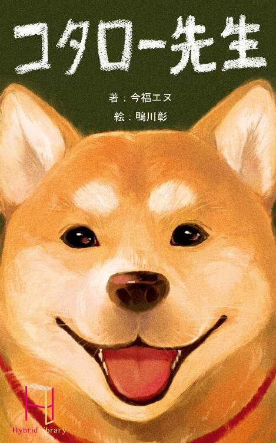

| スマイル (Hybrid Library) | |
| 今福エヌ | |
| Hybrid Library (2015) | |
前略
父さん、何も告げずに姿を消してごめんなさい。突然いなくなった僕を、さぞ心配してくれていると思います。
進学のためにこちらに来て、僕はようやく確信しました。いえ、観念したと言い換えた方がいいかもしれません。自分はやはり弱い人間のようです。こんな僕に、父さんの息子は荷が重過ぎて、務まりそうもありません。
父さんは僕が小さい頃、和虎はいつも空ばかり見上げてボンヤリとしていると、僕を笑っていました。でも、実はあれ、空を見上げていたのには違いないですが、正確には雲をずっと眺めていたんです。
白い雲は見ていて気持ちが良かったし、安らげました。それに自由に姿を変えるので、見ていて飽きません。あの雲は魚に似ているとか、あの雲はドーナツみたいだとか。友達のいない僕はそんな想像を巡らせるくらいしか、暇の潰し方を知らなかったのです。
遊び相手が欲しかったのなら、いくらでも用意してやった。きっと父さんはこう言うでしょう。でも父さんが用意してくれるそういう人たちというのは、僕を透かして父さんを見ている人ばかりです。僕を通じて、ミチモトの権勢にへつらう人ばかりです。僕は、そんな人たちと付き合いたくはありませんでした。
些か潔癖に過ぎるかもしれませんが、僕が欲しかったのは本音で向き合える友達でした。そのような友人はこれまで、結局、洋介を除いて、できた事はありません。その洋介だって、ご存知の様に今は関西に行って忙しくしています。
ミチモトの企業城下町で育った僕は、物質的に何も不自由しませんでした。ミチモトの御曹司である僕は家政婦がたくさんいる家で不自由なく過ごし、同級生にも気を遣われて学校生活を送り、親戚はもちろん、誰しもが自分に対して過保護な環境で育ちました。全て父さんのお蔭です。そう、全て父さんのお蔭なのです。
僕は自分に人格がないような感覚に陥った事も、しばしばあります。
このままではいけないと思って、父さんの反対を押し切り、遠く離れた大学に進学しました。この大学にしか無い学部に行きたいと言っていましたが、あれは嘘で、本当はミチモトの名が意味をなさない土地で、僕と本音で付き合ってくれる友達を作りたかったのです。もう一人は嫌でした。
最初は順調でした。友達はたくさん出来ました。とても嬉しかったのを覚えています。
だけど、出身地の話になった時、苗字と出身地の関連に気付いた知人が、僕の素性を言い当てました。どうしようか迷いましたが、事ここに至っては、僕は彼らを信用し、全てを正直に告げるべきだと思い、実際にそうしました。
だけど僕に付いているこの偉大な苗字は、彼らにとって、とても魅力的だったようです。それまで冗談を言い合っていた友達も、僕にへつらい始めました。恋人がいる女の子も、僕に媚を売り始めました。就職の斡旋を頼みに来た先輩もいます。結局、どこへ行っても地元と同じ事だったのです。
他の人ならどうしたでしょうか？ 心の強い人なら彼らを一喝するなりして、状況を打破出来たかも知れません。頭があまり良くなければ、彼らを受け容れて、勘違いしながらも孤独を知らずに済んだかも知れません。でも僕には無理でした。彼らも必死なんだと思うとあまり強くは言えないし、曲がりなりにも父さんの子である僕は、こんな事で虎の威を借るような勘違いはできません。
今の僕は少し自暴自棄になっているのだと思います。彼らの立場なら、僕のそういった事情に、何らかの期待を寄せてしまうのは、それは仕方のない事だと分かっています。でも、僕は彼らに失望してしまったし、そんな事で他人に失望を覚える自分の狭量さにも、そして現状をどうにも出来ない自分の弱さにも腹が立ちました。
先にも書いた通り、僕は他人に対して潔癖に過ぎるのだと思います。僕は人に対して常に寛容でいたいと思っているし、いつも自分にそう言い聞かせています。しかし僕の薄汚い潔癖さは、心を狭くする事にしか役に立ちませんでした。狭量な僕は寛容でいたいという矛盾の中で、常に葛藤しています。そしてそれに勝利するのは、常に臆病で心貧しい方の僕でした。
今も携帯電話が鳴っています。僕に就職の斡旋を依頼している先輩からです。出なくても用件は分かりきっています。やはり、寛容である事は、僕には難しいみたいです。
この手紙を出したら、僕は誰も知らない土地へ引っ越します。仕送りを貰っていた口座も解約します。大学も中退します。この手紙が着く頃には、僕は消えているでしょう。父さん、出奔同然で姿を消す僕を許してください。僕はもう世俗に耐えられません。あなたの息子と言う重責は、僕には荷が重過ぎます。これも僕の心の狭さがもたらす弱さでしょうか。
どうかお元気で。さようなら。
和虎より
父に宛てたあの手紙を出し、現実から逃げ出して三回目の夏。
盛夏を少し過ぎたある日、僕は彼女と出会う事になる。彼女を指して洋介は『白い』と表現した。僕もその表現は言い得て妙だと共感している。彼女のその心は誰よりも純白で、そして純潔だった。
その日は八月二十二日だった。特に意識して覚えている訳ではないけど、あの日の三日前だ。その大事な日はすっかり頭に刻み込まれてしまっていて、一生、僕の脳裏から離れる事はないだろう。
僕はその日、いつもと同じように家の近くにあるパチンコ屋、『ニュー新世紀』の開店待ちで、炎天の下、だらしなく突っ立っていた。
ポーンという船の汽笛が、小さく青空に広がっていった。ふと目をやると、はるか向こうの海の上で浮かぶ漁船が、もう一度、汽笛を鳴らした。額に汗を垂らしながら、僕はそれをぼんやりと眺めていた。
高台にある商店街のど真ん中に建てられたこのパチンコ屋は、不必要に見晴らしが良く、僕はここでの開店待ちが嫌いではない。夏以外は。
空に輝く太陽は、ギラギラと手加減なしで熱く燃え滾っている。無駄に本気を出したがる太陽には申し訳ないが、自他共に認めるインドア派の僕にはいい迷惑である。
盆を過ぎて、時期としてはもう残暑と言う方が適当なのに、熱気はアスファルトからの照り返しを歪ませる程に強烈だ。ともすれば僕の体も陽炎と一緒に、ぐにゃりと溶けてしまいそうになる。洋介のバカは夏になると異様にテンションが上がるけど、あれはやっぱりバカだからだろうか。こんな苦しい中で高揚するなんて、かなり変わった性癖でもない限り考えられない。理解に苦しむ。
と、そんなくだらない考えにもだんだんと飽き始めた僕は、空を見上げながら、過ぎない時間をそろそろ疎ましく思っていた。開店時間まで、あと十分もある。少し早く来過ぎてしまった。僕は汗で肌に貼り付いたＴシャツをつまんでパタパタとはためかせ、目線を目の前のパチンコ屋に移した。
昭和の匂い、なんて既に慣用表現みたいに使われているけど、具体的にそれがどういうモノか知ったのは、このパチンコ屋を初めて見た時だ。
半ば名前がそのパチンコ屋の歴史を体現しているが、今どき珍しいレトロなパチンコ店なのだ。大体、ニュー新世紀って名前もどうだろう。『新』の上に『ニュー』を付ける必要が果たしてあるのだろうか。
更に言わせてもらうと、古臭い名前が客を呼ぶのか、この店の常連客の年齢層は異様に高い。僕だってもう二十一歳だけど、ここの客の平均年齢には遠く及ばない。恐らく半分にも満たないだろう。
ただ、そのような状態だからこそ、パチンコ屋自体の質は良い訳なのである。どういう状態が良いと呼べるかと言うと、僕の様にパチンコで飯を食っている人間が居付ける状態の事だ。
通常、この街みたいな行楽地の夏なら、パチンコ屋は観光客を見込み、ボッタ営業に熱を上げるものだ。だがしかし、海を求めて訪れた客は、こんな古びたパチンコ屋に見向きもしない。観光地の夏であるにも関わらず、この店の中は常連客で埋められているのである。
そしてこの店のほとんどの常連客は、パチンコの抽選方式も理解していない。当然、彼らの打ち方や台選びは拙劣だ。店は売り上げのある程度を客に還元する為、客層のぬるいこの店では、他の店舗と比べ、必然的に台の調整が甘くなる。僕はこういうパチンコ店の、そういった間隙を突いて金を稼いでいるのだ。
と、偉そうな事を言ってはみたものの、僕の知識だって実は高校時代、洋介に教わったものである。あいつにパチンコの勝ち方を教わっていなかったら、他に金を稼ぐ方法を知らない僕は、もしかすると飢え死にしていたかも知れない。
自分がしているのがあまり感心しない商売だと分かってはいるけど、他人と関わらないで済むこの職業（？）は、僕にとって本当にありがたい。クズには相応しい仕事と言えるだろう。
そういう訳で僕はほとんど毎朝、この店に来ている。八月二十二日。その日もそうだった。晴れ渡った空に浮かぶ雲が、オムライスに見えた日だった。
†
朝から夜まで打って、その日はかなり大きく勝った。僕はほくほく顔で、明日の予定に考えを巡らせていく。
これだけ勝ったら明日はサボって、自宅でＤＶＤでも借りて観てようかな。ああ、それならチューハイに何か肴も買って帰ろう。それもちょっと良いやつ。
そんな寂しい楽しみを思いながら、僕は店内のカウンターで、愛想の良いパンチパーマのおばちゃんから景品を受け取った。
基本的にギャンブルが禁止されている日本において、獲得した出玉を直接、現金に交換する事はできない。三店方式と言う少し面倒くさいシステムがあり、簡単に言えばパチンコ屋で交換した特殊景品を、パチンコ屋のすぐ側にある景品交換所で、現金でもって買い取って貰うのだ。
なんの意味があるのかと突っ込みたくなるこの制度に、いやらしい大人のくだらない体裁が透けて見えるが、しかし、そんな文句を税金も納めていない僕が言うのは筋違いだろう。面倒臭いったらないけど、仕方がない。交換した特殊景品を店外で現金に交換する為に、僕は足を出口に向けた。
ニュー新世紀の出入り口の脇には、五人掛けくらいのソファと少し大きめのテレビが置いてある。そこはちょっとした休憩スペースになっているのだが、勝負の最中にこんな所で休憩する人はあまりいない。ほとんどの人の利用目的は、負けたけど連れがまだ打っている時とか、信じられないくらいに負けて、しばらく呆然としたい時とかに利用するものだ。早く言えば負の感情が渦巻くゾーンである。
しかし今日、そこには昼からずっと少女が座っていた。この汚い空気と騒音じみた喧騒が似合わない、小柄で可愛らしい女の子だった。
見た目は中学生くらいで、大きな瞳と化粧っけの無い童顔が印象的だった。藍色がほとんど残っていないジーパンに、すっかり色褪せた青色のＴシャツという服装で、僕の目には、あまり生活に余裕がありそうには映らなかった。しかし、佇まいはずっと穏やかで、その服装と表情とのギャップが何故だか深く印象に残った。
こんな所に子供がいたら、店員につまみだされないだろうか。普通のパチンコ店なら、そんな心配が真っ先に浮かぶだろう。だけどニュー新世紀では、保護者が付いてさえいれば小学生が打っていても店員に何も咎められない。それどころか和気藹々と会話までしている。今どき信じられないが、この店は良くも悪くも「昭和」なのである。
しかしいずれにしてもパチンコ屋の休憩スペースなんて、若い女の子が一日いるような場所じゃない。あの女の子は昼ごろから今まで、いったい何をしているのだろう。
そんな考えが頭にちょっとよぎったけれど、でも所詮は他人事。気になるのはなるけれど、それも野次馬根性で気になるだけだ。少し後ろ髪を引かれたが、僕は横目で彼女を見ながら店外へ出て、景品交換所で景品を現金に交換した。
†
交換所で持ち歩くには怖いくらいの現金を受け取り、僕はそれを財布にしまった。そして、さあ、帰りにＤＶＤのレンタルショップに寄ろうかと思い目を上げると、そこには、先ほどの少女がニコニコと微笑みながら立っていた。
僕は立ち止まって周囲を確認するが、彼女が笑顔を投げかけている対象は、どうも自分以外に見当たらない。虚を突く展開に、僕は少し面食らう。
いったい僕に何の用事だろう。怪訝な面持ちになってしまったのが自分でも分かる。どうしようかな。無視して逃げようか、それとも何の用か尋ねようか。小賢しく、そう逡巡していると、彼女は、こちらの迷いなどお構いなしに喋りかけてきた。
「ねえ、お兄さん。いつもここで打ってるよね？ あのさ、あたしのお母さん見なかった？」
その少女は元気のいい声でそう言って、その大きな瞳で僕を見つめた。好意的でいて、涼しげな瞳だった。
ひょっとしたら仲間がゾロゾロ出てきて、今、得たばかりの現金を強請られるのかも知れない。ミスター人間不信の僕はそんな胡乱な視線で彼女を見ていたけれど、その少女の言葉は意外と言うか、拍子抜けだった。
ちょっと肩すかしを喰らったが、それにしても「お母さん見なかった？」とはどういう事だろう。
少なくとも僕はその少女に見覚えが無い。少女は僕の事を多少知っている感じだが、それも不思議だ。こんな幼い少女に覚えられる何かをした記憶はない。そんな訳で当然、僕は彼女の母親の事など何も知らない。目の前にいる彼女は、物の尋ね方も知らないほど幼くは見えないけれど。さて、何て返事しよう。
改めて言うほど立派な事じゃないけど、僕は対人関係の構築に、かなり不安がある。なので本当に情け無い話だけれど、今、目の前にいる相手が幼い女の子でなければ、「知らない」とだけ言って、早々に逃げ出していただろう。
だけどこの子は子供だし、もっと言うとニコニコと屈託無く笑っていて、悪い子には見えない。ふんわりとした佇まいは、僕の探るような目を気にする素振りすら見せない。彼女の持つそういった空気は、警戒する僕の心に、話をする程度の安心感を与えるには充分だった。
「あのさ、......えっと、お母さん見なかったって言うのはどういう事だろう。僕は君のお母さんと知り合いなのかな？ ごめんね、君の事はちょっと記憶に無いんだけど」
そう言うと、少女は慌てて自分の言葉を補完する。
「あっ。ごめんなさい。あたし、この店でお母さんと、たまに一緒にいるから。お兄さんの隣とかも座った事あるし、お兄さんはあたしとお母さんを見た事あると思って」
「あ、そうなんだ。でも、ごめん。悪いけど覚えてないや。君のお母さんもここの常連かい？ それなら今日、この店に居たかどうか位は分かるかも知れないな。どんな人？」
何となく話が見えてきた僕は、何か彼女に協力してあげたくなった。普段はロクに他人と会話する事もないから、こうして人と接する機会を持てた事が嬉しかったのだと思う。
「えっとね。年が三十六歳で、髪が茶色なの。少し背が高くて、あ、いつもシャネルのバッグ持ってるんだ。そんでね、凄い美人なんだよ」
「ああ」
僕は人物の見当が付いた。よくこの店に来ていて、そしてよく負けている女性客に特徴が一致している。確かに美人だが、少し剣呑な雰囲気の女だ。
「たぶんあの人だね。分かったよ。でも今日は見ていないな。いや、ここんとこ、見ていない気がするなあ」
「そっかあ」
少女はしゅんとして、目線を地面に落とした。母親が家出でもしたのだろうか。
「見かけたら君が捜してたって伝えてあげるよ。もう遅いから、家に帰った方がいいんじゃないかな？」
執り成すと、彼女は落とした目線を再び上げて、僕を見つめた。
「ねえねえ、お兄さんって一人暮らしじゃない？」
不意を打つ質問に、僕は間抜けにも正直に答えてしまう。
「え、あ、ああ。そうだけど」
「あのね、あたし、今日帰る所無いんだ。だからね......、よかったらお兄さんの家に泊めてくれない？ 泊めてくれたら、あたしの事、タダでしていいからさ」
僕は瞬時に彼女の言った事が理解できなかった。「今日帰る所が無い。だから泊めてくれ」これは分かる。厚かましいお願いだし、そのお願いを聞く気なんて全く無いけれど、日本語として理解はできる。
問題は次。「タダでいいから」これはどういう意味だろう。この言葉は本来、僕が善意で彼女のお願いを聞いてあげた時に、こちらの方から彼女に言うべき言葉ではないのだろうか。
何を言っているのだろうと訝しんだけれど、いや、本当は僕、分かっている。いきなりでちょっと混乱したけど、この子は宿泊の見返りとして、自分の体を提供すると言っているんだ。
しかし、こんな幼いナリをして、しれっと凄い事を持ちかけてくるなあ。タダでいいって言うのは、普段は金取ってるって事だろう？ それに、何だか慣れているようにも感じるぞ。
そう言えばこの間見たテレビで、家出した少女が、繰り返し売春するのが社会問題になってる、って見た気がする。今、目の前のコレが正にソレなのか。
しかし、さて、どうしよう。目の前にいる少女は、やはり見た目だと中学生くらいに見える。法律的な事はよく知らないけれども、きっと中学生を家に連れ込んで性交する、なんてのは、世間の著しい軽蔑が付属する犯罪だろうし、そして何よりも、僕はまだ童貞なのだ。中学生を抱きたいとも思わないし、第一、最初からこんなのはハードルが高過ぎる。
「うーん。それはちょっとよしておくよ。ごめんね」
僕が謝る必要なんて無いんだけれど、事を穏便に済ますために一応言っておく。すると彼女は焦った様子で、両の手の平を僕に向け、顔の前で慌ただしく振った。
「うっ、ううん。こっちこそ、変な事言ってごめんね。お兄さん、このパチンコ屋さんの中じゃ一番優しそうだったから、最初に声かけたの。好みじゃないよね。あたし、子供っぽいし。ホント、ごめんね」
一番優しそう、なんて言われて、僕は少し気分が良くなる。我ながら単純である。
「好みじゃないって訳じゃないんだ。君は可愛らしいと思うよ。でもね、いや、説教臭い事を言うつもりはないんだ。そんなのじゃ、全然ないんだけどさ、君、年は幾つだい？」
「ええっとね。十八だよ」
絶対嘘だと思った。おそらく僕と同じ様な心配をする男を客にする場合、営業で使う方便だろう。
すぐに分かる嘘を吐かれた僕は、いきなり彼女との会話がどうでもよくなった。別に彼女に何か期待していた訳じゃないけれど、何だかがっかりした気分だ。
「そうかい。でもこんな所であんまり堂々と営業かけてちゃ、その内、捕まっちゃうよ。力になれなくて申し訳ないね」
「ううん。心配してくれてありがとう。変な事言ってごめんね」
会話を切り上げようとする僕に、彼女は笑ってそう答える。そしてまた店に向かい、さっと後ろに振り返った。僕には彼女のその背中が、心なしか悄然として見えた。
ちょっと事務的に喋り過ぎてしまったかな。彼女の言う泊まる所が無いっていうのが本当なら、僕の取った態度は少し薄情だったかも知れない。母親がいなくなったって、それは前にテレビで見た、育児放棄というやつじゃないのか？ もしそうなら、少しは彼女に斟酌してやるべきだろう？ 冷たくあしらい過ぎて、あの子は傷ついていないだろうか。
罪悪感が胸を突く。気が付くと僕は、彼女の後ろ姿に向かって声を掛けていた。他人が苦手なはずの僕が、不思議な事だ。
「ねえ」
僕の声を受けると、彼女は顔だけをこちらに振り向かせて、にっこり笑った。
「今からまた、店の中で誰かに声をかけるの？」
僕が聞くと、
「うーん。そうだね。他の常連さんにもお母さんの事を聞いて回って、一人暮らしをしてそうな人に声をかけるつもりだよ。泊まる場所、無いから」
と、バツが悪そうに彼女は言う。
「泊まる場所が無いって言うのは、家出か何かかい？ いや、咎めたりなんかしないよ。僕は家出には割と理解がある方なんだ。もしそうなら、オールナイトでやってる安い漫画喫茶を教えてあげようか？ 金のない観光客が利用するような場所だけど。知らない男の家に泊まるって言うのは、結構リスクもあるだろう？」
先ほど、あまりにも事務的に喋ってしまった事を反省し、僕は彼女に対して精一杯親身になって話をした。すると彼女は笑顔のまま眉を八の字に下げ、体を僕に向け直した。
「やっぱりお兄さん、優しいねっ。思った通りだったよ。でもね、いいの。あたし、少しお金持ってるけど、あんまり使えないんだ。それに家出じゃないの。今日ね、久しぶりに家に帰ったら、家具とか何にも無くなってたんだよ。大家さんに聞いたら、お母さん、家を引き払って出て行ったって。あたし、何にも聞いてなくてビックリしちゃって。だからお母さん捜してるの。お母さんが見つかるまでは、あたし、宿無しなんだ。早く泊まる場所見つけないと、ホームレスになっちゃうね」
言うと彼女は、ひどく照れ臭そうに舌をペロリと出した。笑顔のままさらりと言うけれど、話が本当なら彼女を取り巻く状況はかなりシリアスな気がする。
「そう。そりゃあ大変だね......。そうだ、親戚とかはいないの？」
僕が尋ねると、彼女は少し申し訳無さそうに口をすぼめた。
「いるけど......。親戚の人にはあたし達、あんまり好かれてないんだ。今日も理由があって会ってきたんだけど、怒られちゃって。だから、頼めないの」
「そっか......」
言いながら僕は迷った。この子を取り巻く、ある程度の事情は理解できた。嘘はついてなさそうだし、現状、僕に対して嘘をつく理由も無いだろう。
正直、僕は今、彼女をウチに泊めてあげてもいいかなと思っている。他人が苦手な僕は、普段は絶対こんなことはしないけれども、人間の感情というのは複雑だ。
と、言うのも、僕は彼女と話す内に、この子への警戒レベルをかなり下げている。だってずっと笑顔でいて悪い子には見えないし、持ちかけてきた売春だって、僕が断ったら申し訳無さそうにしてすぐに引き下がった。悪意があったのなら、もっとしつこく粘るだろう。だいたい僕だってこれまでの経験から、人の悪意くらいは読み取れるようになっている。
それに......。
......いや、もう本音を言おう。そんな愚にもつかない理屈を並べたって、どうにもならない。そんなのは未だに人を信じられないでいる僕の、いや、既にそんな事に拘泥すらしてしまっている、狷介な自分への言い訳に他ならないだろう。
今思うと、この時、きっと僕はもう呑まれていたんだと思う。いや、既に惹かれ始めていたんだ。目の前にいる少女の持つ、柔らかで優しい引力に。
自分の感情が嘘みたいだけど、彼女から漂う空気は、捻じ曲がり、凝り固まった僕の気持ちをそっと和らげてくれて、何だか心が白く洗われた気さえした。
元々、ずっと友達が欲しいと思っていたクチだし、こういうきっかけだって大事にしていきたい。相手の年は中学生くらいだけれど、友達になるくらいなら許されるだろう。
「どうしたの？」
考え込む僕に、彼女が訝しげに尋ねる。
「あ、いや......」
僕は歯切れの悪い返事しかできなかった。
そう、それでも僕はまだ迷っているのだ。我ながら面倒臭い性格だと思うが、こればっかりは仕方がない。
もちろん、僕は友達が欲しい。だけど今の所、この子の事を全面的に信じる事はできない。むしろこれまでまともな人付き合いができなかった僕に、会ったばかりの人間を値踏みしろって方が無理な話だ。もしかしたら、彼女は僕が読み取る事ができないくらい黒い底意を持っているかも知れない。
この子が僕に見せている柔らかい笑顔にしても、そんなのはただの作りだされた上澄みで、中身は凄く奸智に長けた性悪女の可能性だってある。上手く他人の家へ上がりこんで、盗みを働く気かも知れない。
「あたし、何か変な事言っちゃったかな？ あたしってバカでね、そういう事があんまり分からないの。ごめんねっ」
彼女は頭を掻きながら、考え込む僕を見て、据わりが悪そうに笑う。こんな子が悪い事をする訳がないと思うのだが、しかし、どうなのだろう。
でも、もし、もし窃盗目的だったとしても、ウチには高価なものは何も無くて、盗まれたとしてもせいぜい今、換金した現金くらいだ。そういう点に関しては、万が一被害があったとしても、それは最小限に抑えられる。僕がまた落ち込んだら済む話だ。
それに、何だかんだと言ってもやはり悪そうな子には見えないし、泊めてあげたら一緒に会話しながら食事したりするくらいはできるだろう。他人と食事なんて、洋介以外じゃ何年ぶりかな。これは気持ちの揺らぐ、甘い誘惑だ。
しかし一番考えないといけないのは、その後のリスクである。この子を家に泊めたとしても、僕はこんなに幼い彼女に何もする気は無い。僕は自分の事をクズだと思っているけれど、さすがにある程度の節操は持っている。
でも、もし後になって何かの事情で警察に問い詰められた時、「泊めたのは事実だけれど、何もしていません」と言うのはきっと通用しない。世知辛い世の中だが、それは仕方が無い事だ。やはりこの幼さは大きなネックである。
さて、どうしたものか。このまま自分への言い訳を繰り返していても、時間の無駄だ。そろそろ決断しないといけない。
この子を信用してあげたい気持ちもあるけれど、やはりこのまま突き放すべきだろうか。あ、でもこの子、さっき自分で十八って言ってたっけ。
「君さ、本当に十八歳？」
聞くと、彼女は視線を僕から外して目を泳がせ、口だけで笑いながら、
「う、うん。そうだよ」
と、絶対にそうではなさそうに言う。
でも、......まあいっか。どうせこんな生活している身だし、捕まったとしても、どうって事ないや。だいたい、軽蔑されるような友人知人もいないんだ。洋介のバカなら、笑い飛ばされて終わりだろうし。ここは彼女の言う事を信じよう。
「――分かったよ。じゃあウチに来ればいい。僕は君が十八歳と言う事を信じるよ。でもね、だからと言って、僕は君に対して何もしたりはしないよ。安心してね。友達がたまに泊まりにくるから、布団はあるんだ。ゆっくりしていけばいいよ」
僕がそう言うと、彼女の顔がパッと輝いた。
「えっ、いいのっ？ ありがとうっ。ホント、困ってたんだ。嬉しいなあ！ あ、そうだ。自己紹介するね。あたし、鐘鳴ヒカルって言うの。ヒカルって呼んで。呼び捨てでいいから。お兄さんは？」
「僕は道元和虎。呼びやすいように呼んでくれていいよ」
「お友達からは、何て呼ばれてるの？」
聞かれて僕は固まった。洋介からは『トラ坊』って呼ばれているけれど、今、そのニックネームで自己紹介をしなくちゃいけないのだろうか。ちょっとそれは恥ずかしいなあ。
「どうしたの？」
ヒカルが不思議そうに首を傾げて、固まった僕に上目遣いで聞いてくる。
「いや、あの、一部の友達からは、ええと、トラ坊って呼ばれているね」
ちょっとだけ見栄を張って、僕は照れ隠しに頭を掻いた。
「じゃあ、あたしもトラ坊君って呼ぶよ！ カッコ良い名前なのに、可愛いあだ名だねっ」
ヒカルは笑顔をこぼして、僕のあだ名をすんなりと受け容れた。良い奴だ。僕が彼女の立場なら、笑いを堪えられた自信が無い。
そして僕のおかしなあだ名が、ヒカルの口を解かせたのだろうか。彼女は笑顔を崩さず、はしゃいだ様子で尚も話し続けた。
「本当に泊めて貰っていいのかなあっ。嬉しいなっ。こんなに優しくして貰ってどうしようっ。あ、そうだっ、ご飯まだだよね？」
内心、「来た！」と思った。僕は投げられた絶好球に狂喜しながらも、外見は爽やかな微笑を心がけて、彼女に答える。
「うん。君もまだだろう？ ずっと休憩スペースにいたもんね。どこかで買って帰ろうか、それとも外食して帰るかい？ 今日はたくさん勝ったから、好きなものを奢ってあげるよ」
「トラ坊君、優しいね。でも、今日は泊めてくれるお礼に、せめてあたしがお料理作ってあげるよ。あたし、お料理くらいしかできないから」
言ってからヒカルは「あたしのお料理は口に合わないかも知れないけど......」と、自信無さげに付け足した。でも僕にとって、これほど心ときめく礼なんか他に無い。気持ちを抑えられずに僕は焦ってしまい、心がけていた爽やかな微笑が、たぶん灰燼に帰していた。
「口に合わないなんて、きっと、きっとそんな事はないよ。女の子の手料理を食べるのなんて、初めてなんだ。本当に作ってもらっていいのかい？」
僕が素直に喜びを述べると、不安そうだったヒカルは弾けるような笑顔に戻って、嬉しそうに大きく頷いた。
†
帰る道すがら、僕達はスーパーで食材を買い込んだ。そうして帰路に就き、やがてアパートに到着すると、僕はヒカルを中に招き入れた。
「おじゃましまーす......」
ヒカルはおどおどと遠慮がちに中に入ってくる。そして僕の部屋を見渡すと、軽い驚きの声を漏らした。
「すごーい。男の人の一人暮らしだよね？ どうしてこんなに片付いてるの？」
ヒカルはそう言うが、あまり正確な表現ではない。
僕の部屋は確かに片付いているように見えるかも知れないが、家具をはじめ調度類は必要最低限の物しか揃えておらず、単純にただガランとしているだけだ。無趣味な一人暮らしで、おまけに友人知人がほとんどいないんだから、物など必要がない。
リビングダイニングにちゃぶ台のようなテーブルと、あとはテレビ。そして寝室にベッドがあるだけ。唯一、趣味のものといえば、暇な時に読むドストエフスキーや遠藤周作、川端康成の文庫本が数冊だけ。後は生活用品以外、これといって何も無い。
部屋は住む人の心を映す鏡だと言うけれど、なるほど、確かにこの中身の無い空疎な部屋は、僕の心象風景を反映していると言ってもいいのかも知れない。
さて、部屋が片付いていると勘違いしているヒカルは、未だに玄関から中を見渡し、感嘆の声を上げている。誤解させている僕は、据わりが悪くてしょうがない。
「別に片付いているって事も無いんだけどね。物をあんまり置かないようにしてるんだ。とりあえず中に入ってくつろぎなよ。料理は後でもいいじゃないか」
「うんっ、ありがとう」
そう言うとヒカルは、中に入り、部屋の真ん中にある小さなテーブルの前にちょこんと正座した。
さて、ここからどうしたものか。例えば、今、訪れてきたのが唯一の友人である洋介なんかだと、缶チューハイやら缶ビールやらが出てきて、男二人の悲しく切ない飲み会の始まりとなる。しかし、部屋に入って来たのは、洋介ではなくて年頃の女の子だ。
女を単独で自宅に連れ込んだ経験の無い僕は、この後、どんな会話をして何をすればいいのか見当もつかない。しかも相手はかなり年下である。何か会話するにしても内容を選ばないといけない。下手をするとジェネレーションギャップで、場がシラけてしまう可能性も充分に考えられる。
僕は考えながらエアコンのスイッチを入れ、テーブルの前に腰掛けた。ちょっと立ち入った話だけれど、今日、ヒカルが母親を捜していた理由を、もう少し詳しく聞いてみようか。他に話題も思い浮かばないし。
「ねえ、ヒカル。お母さんがいなくなったのは分かったけどさ、お父さんはどうしてるの？」
「えっと。ちょっと事情があってね、遠くの方に行ってるんだ」
ヒカルは少しオドオドとしながら答えた。
「連絡は取れないのかい？ お母さんはお父さんの所に行ってるんじゃないのかな？」
「連絡とかは、すぐには取れないの。それに、お母さんはお父さんの所にいないんだ。それは分かってるの」
何か複雑な家庭環境の匂いがしたので、僕はそれ以上の追及をやめた。会話も弾まない内にあまり立ち入った話をしたのでは、ヒカルも気分が悪いだろう。さて、何か次の話題を、と考えていると、今度はヒカルの方から僕に話しかけてきた。
「それよりさっ。トラ坊君、お仕事は何してるの？ あたしがお母さんに呼ばれてパチンコ屋さんに行った時は、いつもいるよね。夜に働いてるの？」
「まさか。夜に働いてるんだったら、昼間はきっとパチンコなんかしないで寝ているよ。僕はパチンコで稼いでるんだ。褒められた商売じゃないのは分かってるけど、あんまり器用じゃなくてね」
本当に褒められた仕事じゃないし、そもそも税金すら払っていないんだから、こんなものは職業としてすら成り立っていないのだ。しかし僕の答えが意外だったのだろうか、それを聞いたヒカルは、目を丸くして驚いた。
「すっごーい。パチンコで稼げるなんて、天才だよっ。あたしのお母さん、いつも負けてて、あたしにお金を持って来てって言うんだよ。今度、どうやって勝つか教えてあげてよ」
天才なんて言われて気分が良いけど、何かあんまりすっきりした気持ちになれないのは、母親の話が頭にひっかかるからだろうか。気にはなったが、先ほど立ち入った話を中断したばかりだったので、そこに触れるのは少しはばかられた。
「天才なんかじゃないよ。こんな事をあんまり褒めないでくれ。パチンコで勝つのなんて、本当に大した理屈なんか要らないんだ。ちょっとした数学と、ごく初歩の統計学を理解していれば勝てるし、方法論さえ合っていれば、それすらも要らないようなものなんだ」
「ふうん。何か良く分からないけど、やっぱり凄いよ！」
分からないものを凄いと断ずる彼女の方が凄いけれど、でもこんなものでも会得したスキルを褒めて貰えるのは、なんだかちょっと嬉しかった。
僕は頭を掻いて、えへへとアホ丸出しの照れ笑いをヒカルに返す。すると彼女は、僕の笑みに気を良くしたのか、
「さ、あたし、お料理作るね。オムライスで良いんだよね？」
と、確認しながらすっくと立ち上がった。
「ああ、頼むよ。朝から食べたかったんだ」
僕がそう言うと、彼女は「よしきた」と、笑って答えて、キッチンに入っていった。
自炊なんてほとんどしない僕だけれど、調理器具だけは一通り揃っている。これらは大学入学後、一人暮らしを始めた折に買い揃えた物で、「友達が出来て家に来る事があれば、手料理を作ってもてなしてやろう」なんて先走って購入してしまった物だ。
今思うと噴飯ものの滑稽さだが、更に滑稽なのは父親から身を隠す際の引越しの時も、これから友人が出来る可能性を考えて調理器具を捨てられなかった事だ。今では、洋介が遊びに来た時に、彼が簡単な肴を作る道具になり下がっている。でもまあ実際に今日、ヒカルによって役目を得た訳だから、準備はしておくもんだと思った。
しばらく料理ができるのを待っていると、キッチンからだんだんと良い匂いが漂ってきた。完成も間近なのだろう。僕は久しぶりに嗅ぐ良い匂いにうっとりとしていたけれど、オムライスの黄色い色を想像するうちに、今日のプロ野球の結果が気になった。テレビを点けてチャンネルを回していくと、丁度スポーツニュースで、今日の結果を伝えている局があった。
「ああ、負けたか」
結果を見ながら僕はため息を吐く。
「野球？ トラ坊君はどこのファンなの？ あ、分かった。タイガースでしょ？」
ヒカルは手際よく料理を盛り付けながらそう言った。僕の名前から連想したのだろうか。だとしたらあまりに安直過ぎやしないか？ しかし、思考の過程はどうあれ、答えとしては当たっている。僕が、「よく分かったね」と彼女に言うと、彼女は胸を張って、
「やっぱりねっ。ホラ、虎って、英語でタイガーって言うんでしょ？ だからトラ坊君はタイガースのファンだと思ったんだ」
と言った。ヒカルの思考過程は僕の予想通りだったけれど、なんだろう、この言葉の違和感。僕はこの違和感をどう言葉にしていいか分からなかったので、そのまま黙っておいた。ひょっとしたら、僕が想像しているよりも、ヒカルはずっと幼いのかも知れない。僕のしている事は、誘拐とかに当たらないかな。ちょっと心配になった。
「タイガースって熱狂的なファンが多いよね。あたしのお父さんもファンなんだ。いつも怒鳴りながら応援してたよ」
言いながらヒカルは、料理が盛られた皿をテーブルに運んでくる。
「僕はそんなに熱心でもないけどね。いや、今はもうファンですらないかな」
「そうなの？」
「うん。実はね、自分の名前に虎が付いてるから、ファンだった訳じゃないんだ。僕が通ってた高校って野球の名門でさ、当時からの付き合いの友達が、タイガースで投げてたんだよ」
ヒカルは料理をテーブルに並べ、お茶をグラスに注ぎながら僕の話を聞いている。ずっと笑顔で相槌を打ってくれていて、話しているこちらも楽しい。
「野球選手とお友達なんて、凄いね。何て名前の選手？」
「源太郎丸洋介っていう奴。ピッチャーやってたよ。ちょっと活躍してたから、知ってるかもしれないね」
僕がその名を言うと、ヒカルは目をパチクリさせて頓狂な声をあげた。
「知ってるよ！ お父さんがよく名前言って褒めてたのっ。源太郎丸は神だって。お友達だなんて、すっごいね！ あ、でもその人、確か引退してなかった？」
「うん。あいつ、去年に怪我しちゃって今年の初めに引退したよ。でもだいぶ活躍してたからね。ファンも多かったなあ。ま、あいつが辞めちゃったからね、僕はもうタイガースのファンじゃないんだ。それでも気になって結果だけは見ちゃうんだけど。ちなみに洋介の奴、今はこの近くで『源丸』って居酒屋やってるよ」
「この近くに？ すごーい。そうなんだ。居酒屋さんなんてやってるんだね」
一風変わった苗字のその男、源太郎丸洋介は高校時代から、スカウトの注目を一身に受けていた期待のルーキーだった。ドラフトでは四球団から一位指名を受け、結局タイガースへ入団する事になったのだ。
プロに入ってからの活躍も周囲の期待通りで、一年目に七勝、二年目には十一勝を挙げて、新人王にも輝いている。周囲から将来を嘱望され、彼の前途は洋々のはずだった。
しかし、二年目の日本シリーズで肩の違和感を訴え、彼は途中降板。以後、シーズンオフはずっと療養していた。
そして傷を癒やして挑んだ今年のオープン戦。世間の注目が集まる中で洋介は登板したのだが、怪我が治っていなかったのだろうか、三戦連続でメッタ打ちにされてしまう。本人は語らないが、もしかすると怪我の具合は、みんなが認識している以上に悪かったのかも知れない。
僕は洋介のオープン戦の調子から、こりゃ二軍で再調整かな、と思っていたけれど、何と彼はあっさりと引退。そしてなぜか僕の家の近所に越してきて居酒屋をオープンして、今に至っている。僕もあいつが好きだけれど、あいつも僕が大好きなんだろう。......たぶん。
洋介の実家は元々居酒屋で、小さい頃からそれを手伝っていた彼は、ある程度のノウハウも持っていただろうし、足りない知識は親から借りたのだと思う。洋介の居酒屋はオープン当初から今も大繁盛である。
洋介という人間は、いきなり引退して居酒屋をオープンさせる事からも分かる通り、実生活は昔からとても奔放である。高校時代、僕にパチンコを教えたのも洋介だし、僕に酒を教えたのも洋介だった。
洋介と僕の性格は正反対だが、しかし何故かウマが合った。互いに周囲から浮きがちな存在だったので、そういう意味で惹かれ合ったのかも知れない。何にせよ彼は、僕の今に至る人生の中で、唯一の親友だ。
彼の話なら幾らでも出てくる。格好の話のタネが出てきたので、僕は彼を話題にしながら、久しぶりに洋介以外の人間との食事を楽しんだ。
ヒカルが作ってくれたオムライスは、とてもおいしかった。それは今まで食べた事のない味で、ああ、世の中にはこんな味の食べ物もあるんだなあと、僕は一人で感激した。
†
翌日の朝、僕が目覚めてふと見てみると、ベッドの脇にひいてある布団にヒカルがいない。
どうしたんだろうと思って体を起こしてみると、ふっと良い匂いが鼻をついた。キッチンからは物音も響いてくる。ヒカルかな？ 朝、ベッドの中で味噌汁の匂いを嗅ぐのは何年ぶりだろう。
僕が起きてリビングに行くと、やはりヒカルは朝食を作っていた。彼女は僕を見ると、手を休めずに相好を崩す。
「おはよっ。朝は和食でよかったんだよね。もうすぐできるから、少し待っててね」
言いながらヒカルはおたまで味噌汁をすくい、味見をした。
「ああ、うん。何か手伝おうか」
「ううん。あたし、家事するの好きなんだ。トラ坊君は座って待っててね」
ヒカルはそう言う間にもテキパキと、恐ろしいほど段取り良く作業を進めていく。確かに僕が何かやると、かえって作業進行の妨げになってしまいそうだ。ヒカルが促す通り、座って待とう。
僕はテーブルの前に座り、ヒカルを眺める。彼女は僕の視線など気にする素振りも見せず、実にてきぱきと無駄なく動いている。しかも動作が洗練されており、小柄な体を上手く動かして、実に効率よく作業を進めているのである。
更に感心するのは、作業中ですら笑みを絶やさない事だ。昨日、初めて会ってから今に至るまで、彼女はずっと微笑みを浮かべたまま、僕に接してくれている。
初対面から今まで、彼女は実に好印象だ。なんだってこんなに良い子が、売春なんかしているのだろう。しかもこなれた様子で。
昨日からだいぶ打ち解けた気がするし、そろそろ少しくらいプライベートに踏み込んだ質問をしてみてもいい様な気がする。気がするんだけど、タイミングとして、どこがベストだろう。経験ないから分からないや。そもそも聞いてもいいのかな、こんな事。どうしようかな。
僕がそう考えて一人で悶々としていると、朝食が完成し、ヒカルは二人分の朝食をトレイに載せてテーブルに運んできた。
「はい、どうぞ。口に合えばいいけど」
運ばれてきた朝食は、ご飯と味噌汁に鮭の塩焼きで、とてつもなく美味そうな匂いがする。普段は朝から食欲なんてわかないタチなんだけれど、こんなに美味そうなものを目の当たりにしては、そうも言っていられない。
「ありがとう。早速いただくよ」
言ってさっそく僕は味噌汁をすすって鮭を一口食べ、そしてその味に驚愕する。
「......滅茶苦茶うまいね。ヒカルって料理が本当に上手いな」
僕がそう褒めると、ヒカルははにかみながら頭を掻いた。
「そう言ってくれたら、嬉しいなっ。お父さんもお母さんも、何にも言わずに食べるだけだから。二人とも怒らないから不味くはないんだろうなって思ってたけど。でも、トラ坊君が褒めてくれて、あたし、感動だよ」
感動したのはむしろ僕の方なんだが、しかしヒカル、家でもずっと家事をしていたのだろうか。今の話だとそれっぽいんだけど。
「あたしね、褒められたから、もっとお料理を上手く作りたいな。ねえ、もっと上手く作れるようになったら、トラ坊君、また、あたしのお料理食べてくれる？」
「それは嬉しいなあ。是非食べさせてよ。ヒカルってさ、なんだかポジティブだよね」
「ポジティブって、どういう意味？」
ヒカルは笑顔のまま、少しだけ首を傾げた。
「ええとね、プラス思考とか、積極的とか......。まあ、何て言うか、明るくて前向きだねって意味かな」
ちょっと説明に困ってしまった僕は、イメージだけで言葉の意味を説明した。すると、ヒカルはとても満足そうに笑う。
「あたし、ポジティブなのかな。そうだったら、嬉しいなっ」
僕には分からないけれど、どうも彼女の琴線に触れられたようだ。僕はそのまま、彼女の笑顔を引き出した勢いに力を借りる。きっとここがタイミングだ。
「そういえばさ、立ち入った話だけど、昨日、久しぶりに家に帰ったら、お母さんが家を引き払ってたって言ってたじゃん？」
「うん、そうなの。困っちゃうよね」
ヒカルは苦笑いを浮かべて肩をすくめる。
「確かに困ったお母さんだけどさ、ヒカルが久しぶりに家に帰ったって、どっか旅行でも行ってたの？」
「ううん。えっとねえ......。言わなきゃダメ？」
ヒカルは困惑した顔になってしまった。ああ、これはタイミングを誤った。これだから人付き合いの浅い自分は信用できないんだ。
「あたし、トラ坊君とせっかくお友達になれたのに、トラ坊君におかしな目で見られたくないな......。どうしても、言わなきゃダメかな」
「おかしな目って何だよ。別に何してたって何とも思わないって。警察にでも捕まってたのか？」
笑って言うと、ヒカルの顔がみるみる朱に染まっていく。掘った墓穴を埋めるように冗談でそう言ってみただけなのに、どうやらこんな時に限って的を射てしまった様である。
「あ、あのさ、別にヒカルが前に何やってたかなんて、僕は気にしないよ。だから、そんな顔をしないでくれよ。せっかく、あの、と、友達になれたんじゃないか。僕は君とこれからも、仲良くしたいと思ってるんだ」
言うとヒカルは俯いていた顔を上げた。そして僕の顔色を、不安を色濃く出した表情で覗いてくる。
「ごめんね。でも、どうして捕まったのかは聞かないで欲しいな。あたしもトラ坊君にはこれからも仲良くして欲しいんだ。だから......」
聞かなくても大体の察しはつく。大方、売春がバレたとか、そんなのだろう。今更隠す必要もないと思うんだけど。
「じゃあ、これからも仲良くしようよ。ごめんね。くだらない事聞いちゃって」
僕が鮭の塩焼きをハシでつまみながらそう言うと、ヒカルは少し笑った。
「ううん。ホラ、あたしってこんなんだからさ、他の人に変な目でばっかり見られるの。でもね、トラ坊君ってあたしの事をそんな目で見ないから、本当に嬉しいんだ。だから、トラ坊君とは仲良くしていたいな。内緒にしてて、いい？ あ、でも泥棒じゃないからっ。人の物は盗んだりしないから、安心してね」
「うん。まあ、窃盗するような子じゃないと思ってるし、逮捕の内容を聞いたって俺は、特別変な目で君を見たりしないと思うけど。でも、内緒にしておきたいんなら、もう無理に聞いたりしないよ」
断言してもいいけど、僕が彼女の事を妙な色眼鏡で見ることは絶対にない。確かに彼女がしていた職業は、きっと男たちからおかしな目で見られることも多いだろうと想像が付く。
でも、おかしな商売はお互い様だし、僕自身が他人を軽蔑出来るようなご立派な人間じゃない事は自覚している。なんせこんなクズみたいな生活をしている身だ。僕の彼女に対する視線というのは、ごく一般的な、誰にでも向けるようなものだ。
しかし、彼女はそんな事が嬉しいと言う。ヒカルはその笑顔の裏に、いったいどれほど悲しい思いをしてきたんだろうか。ひょっとしたら、僕なんかには想像できないような暗い過去でもあるのかも知れない。ああ、何だかとても可哀想だぞ。
「ごめんね。ありがとう。ところで、ねえ、トラ坊君。今日はどうするの？ またパチンコ屋さんに行くの？」
ヒカルはまた笑顔に戻って、僕に暖かいお茶を注ぎながら聞いてきた。
「まあ、ニュー新世紀に行こうと思ってるよ。ヒカルは今日もお母さんを捜すのかい？」
「うーん。でも、むやみに捜し回るよりも、あのパチンコ屋さんで待っていた方が良い気がするの。お母さん、あのパチンコ屋さん以外に行かないから。だから、今日もあそこで待っていようと思うんだ」
そう言ってヒカルは、湯飲みに淹れたお茶を僕に差し出した。僕はありがとうと言ってお茶をすする。お茶まで美味い。
「だったらさ、今日は僕の打ち子をしないか？ ただ待っているだけよりも、建設的だと思うけど」
「打ち子って何？」
ヒカルは身を乗り出して聞いてくる。興味津々と言った様子だ。
「僕がね、良いと思った台を、ヒカルが打つんだ。もちろん、お金は僕がもつよ。勝ったお金に応じて、僕がヒカルにバイト料を出すんだ」
「えーっ。あたし、そんなのできるかなあ。自信ないよ」
「大丈夫だと思うよ。突き詰めていけばキリが無いけど、パチンコで勝つのなんて、分かってさえいれば子供にだってできるようなものなんだ。昨日、ヒカルはお金をあまり使えないって言ってただろ？ なら、バイト感覚でやってみたらいいんじゃない？ リスクは無いんだから、あんな所でただ待っているより良いと思うけど」
「いくらトラ坊君が選んだ台でも、あたしが打つと負けちゃうかもよ。トラ坊君、怒ったりしない？」
ヒカルは僕の表情を窺いながら、恐る恐る聞いてくる。
「ああ、僕が打ったって負ける時は負けちゃうんだ。そればっかりは運もあるから、しょうがないよ。ヒカルがもし負けたらね、その時はバイト料が僕の気持ちだけになっちゃうけど、やってくれないかな？ もしヒカルが打ってくれたら、僕としても稼動が増えるから助かるんだ」
ヒカルは僕の言葉を聞くと、その途端に表情をパッと明るくした。
「トラ坊君も助かるの？ じゃあ、あたしもやってみたいな。教えてくれる？」
「もちろんさ。よし、それなら少し説明してから出発しようか。パチンコを打った事はあるんだろ？ 基本的な構造は知ってるよね。なら、初歩の技術介入だけ頭に入れておいて。まず......」
僕が説明を始めると、ヒカルは真剣な面持ちになって、僕の言葉に耳を傾けながら頷いている。素直な良い子なんだ、と改めて思った。もし、これをきっかけにパチンコを続けるようであれば、僕は彼女をきっちりサポートしようと思う。確かに褒められた稼業じゃないけど、捕まる心配も無いし、売春なんかしているよりはリスクが低いだろう。
でも、何でこの子は売春なんかしているんだ？ 器用そうな子だし、他にバイトの口なんかいくらでもありそうだけど。金が要るっていうのと、何か関係あるんだろうか。まあ、僕は彼女のあまり深い部分まで踏み込む権利なんかないから、聞く事は憚れるけど。どうしても、目の前で素直に頷きながら僕の話を聞いている女の子と、売春ってのが繋がらないなあ。
†
その日、僕は昨日に輪をかけて大勝ちした。僕のこれまでの記録を大きく塗り替える大勝利で、さすがに店員に咎められないか心配になった程だ。
更にヒカルも大きく勝った。朝、僕が言った事を愚直なまでに実行して、ドル箱の牙城を築いている。こちらも、年齢の事を含めて店員に咎められないか心配だったけれど、つまみ出されるどころか、ヒカルは店員と仲良く話をしている。あの社交性は見習いたい。
だが結局、その日もヒカルの母は現れなかった。
†
「ヒカルが勝った金は全部あげるよ。お金がいるんだろう？ 最初からそのつもりだったんだ。たくさん勝てて、よかったね」
ニュー新世紀で大勝ちした僕は、換金を済ませて彼女にそう言った。
「そんな。こんなに一杯、ダメだよ。それにアルバイト料なんか要らないよっ。トラ坊君が、あたしが打てば助かるって言ってたから、あたしもパチンコしたんだよ。だから、お金なんか要らないんだ」
ヒカルは僕の申し出を固辞する。これは困った。夜の換金所の前で男女が言い争うなんて、あまりカッコ良い絵面じゃないぞ。だいたい僕だって一度言い出した手前、簡単には引き下がれない。
「何に遣うかは知らないけど、金がいるんだろ？ あって邪魔になる物じゃないし、受け取っておいていいんじゃないの？」
僕がもう一度言うと、ヒカルは強い口調で僕に反論する。
「ダメ！ トラ坊君、これがお仕事なんでしょう？ あたしが貰っちゃったら、お仕事にならないよ」
見かけによらず、ヒカルは頑固だ。さて、どうしよう。
「じゃあさ、その金で、今日の晩飯、作ってくれない？ 釣りは全部あげるよ。昨日のヒカルの料理がおいしくて、忘れられないんだ。今日も帰る所が無いんだったら、泊まっていってもいいからさ」
ヒカルの料理が美味しかったのは事実だけど、でもそれは建前だ。僕は今日も彼女と、せっかくできた友達と一緒に食事を取りたかった。だからヒカルが金を受け取ろうが受け取るまいが、母親さえ現れなければ、僕はヒカルを今日も家に誘うつもりだったのだ。きっと帰る場所も無いだろうし。
しかし、僕は善意も込めて誘ったつもりではあったのだけど、僕の言葉を聞いたヒカルは一瞬、ポカンとしてしまって表情をなくす。
あ、また失敗した。ちょっと調子に乗ってしまったかな。
と、僕が思ったのも束の間。みるみる内に、ヒカルの大きな瞳が、赤く縁取られていく。
「どうしよう。トラ坊君、本当に優しい......。ありがとう......」
最後は言葉にならず、ヒカルは声を詰まらせて俯いてしまった。泣くほどの事だろうか。まさかこんなに喜んで貰えると思っていなかった僕は、泣いている彼女にどう接していいか分からない。
「ご、ごめん。まさか泣くとは思わなかったんだ。いや、ごめんと言うのはおかしいのか。とにかく、泣き止んでくれないか。正直に言うとね、泣いている女の子に、何て話しかけたらいいか分からないんだ。だからさ、あの、......頼むよ」
僕が情け無い事を情けなく言うと、ヒカルは泣くのを堪えてくれて、赤い目のまま顔を上げ、覗き込むようにこちらを見た。
「うん、ごめんね。あたし、昔からすぐ泣いちゃうんだ。でも、今のは仕方ないよ。だって、トラ坊君、とっても優しいんだもん」
ヒカルは指で下瞼をこすり、笑顔に戻って話し続ける。
「じゃあ、またスーパー寄って、材料買って帰ろうね。あと、それとさ......」
泣きやんだヒカルに安心した僕は、ほっと息をついた。
「それと、何だい？」
僕が聞くと、ヒカルは照れたような笑いを浮かべ、頬を少し赤らめながら言った。
「このお金、貰えるんなら、下着も買いたいの......」
†
近所のスーパーで食材と下着、その他ヒカルの着替え等々を買った僕たちは、今日も二人で家の玄関を跨いだ。
女性の下着売り場に生まれて初めて足を踏み入れたけれど、僕は変質者として通報されないかと思ってドキドキした。只でさえ、自称よりもかなり幼く見える女の子を連れているんだ。やましい事をしていないのに、今の状況を問い詰められた時、僕は説得力のある言い訳をする自信が無い。
そうして昨日と同じ様に自宅へ帰った僕たちだけれど、昨日と違うのは、ヒカルがもう遠慮しないで部屋に入ってくれた事だ。何だか二人の距離が縮まった気がして、嬉しかった。
家へ着くと、ヒカルは元気良く靴を脱いで部屋に入る。そしてキッチンへ直行して、スーパーの買い物袋を下ろした。
「ねえ、トラ坊君。今からお料理作るから、休んでおいてね。できたら呼ぶからさっ」
「えっと、僕も何か手伝おうか？」
「ううん。これはあたしのお仕事なんだから。頑張って美味しいもの作るから、休んでおいてね。トラ坊君はね、お料理をおいしいって食べてくれるから、作り甲斐があるんだ」
ヒカルは嬉しそうにそう言うと、喋り終わるよりも先に、もうテキパキと作業に取り掛かっていた。
「じゃあ、お言葉に甘えて休ませて貰うよ。今日は少し疲れたんだ」
僕はそう言って寝室へ入り、ベッドに倒れこんだ。
パチンコというのは基本的に、打っている台が大当たりした時、細かい技術を必要とする。なので、今日の様にたくさん当たった日は、疲労の密度が濃くなってしまうのだ。
僕は悪いと思いつつもヒカルを残し、寝室へ入った。
そしてベッドに倒れこんだ僕は、すぐにうつらうつらとなってしまう。
そうしているとその内に、風呂場から水が叩きつけられる音が聞こえてきた。料理の合間にヒカルが風呂を沸かしているのだろう。あいつも今日はずっとパチンコ打ってたのに、何であんなに元気なんだろう。やっぱり若さかなあ。僕だってまだ二十歳を少し超えた所で、老いたなんていうのは早過ぎるけど。そういえば、そもそもヒカルって何歳なんだろう。んー。大人っぽく見える事もあるけど、どうなんだろうなあ。あ、枕に陰毛が付いてる。見つかったら恥ずかしいから取って捨てなきゃ。ああ、でももう動くのが面倒臭い......。
そんなどうだっていい事に思いを巡らしている間に、僕の意識は徐々に形を崩していって、そうしてやがて夢の中へと落ちていった。
夢の中で、僕は中学一年になっていたようだ。でも校舎は高校の時の校舎で、担任の教師は小学生時代の教師。同級生なんかは小学校時から高校時までの顔ぶれが入り乱れている。夢なんて本当にいい加減なものだ。
そんなデタラメな状況なのに何故、夢の中が中学一年時だと分かったのか。それは発生していた事件が、中学一年の時の物だったからだ。
中学一年の時、クラスでイジメを苦に自殺した生徒がいた。夢の中は、生徒が自殺したその翌日のようだ。
クラスメイト達が自殺した生徒の事を噂しあっている。泣いている女子生徒もいた。僕の席はその泣いている女子生徒の斜め後ろだったけれど、彼女が泣いているその背中に、僕は妙な違和感を覚えていた。
泣くくらい悲しいならイジメを止めてあげればよかったし、その勇気が無くてもせめて教師に相談するとか、その子の相談に乗ってあげるとか方法はあったと思う。泣いているのは、悲しんでいる事を周囲にアピールする為のポーズなんだろう？ そういった態度が自分の評価に繋がる事を、彼女は知っているんだ。あざとい奴だと思う。
だいたい自殺する方もする方だ。残された者の身になってみると、そんな選択肢は選べないんじゃないのか？ まあ、もっとも今の僕みたいに、悲しむ人間がほとんどいないのなら話は別だろうけど。
そんな無責任な事を考えている僕は僕で、自殺した生徒と特に親しかった訳じゃない。多少のショックはあるけど、特に悲しみは感じない。それは僕だけじゃなく、クラスの大半が同じで、みんなが彼に対して無関心だった。
自殺する勇気を他の事に使えば、死なずに済んだんじゃないかなあ、と、僕は教室の窓から雲を眺めて、ぼんやりと考えていた。
すると、その時、いきなり教室のドアが、強い音を立てて開いた。
驚いて音の鳴った方を見ると、見た事の無い中年の男が立っている。最初は教職員かと思ったけれど、その目には激しい憤怒が宿っており、僕はそれを見た瞬間に全ての察しがついた。
きっと自殺した生徒の父親だろう。この夢は現実に沿ってシナリオが組まれているようだ。現実でもこんな事があった。確か父親がえらく怒ってクラスに怒鳴り込んできていたのを、何となくおぼろげに記憶している。
彼は大きな足音を立てて教壇の前に移動した。そしてこちらを睨むと教壇を拳で強く叩く。すると泣いていた女子生徒がビクリと一瞬、体を震わせて、キョロキョロと周りを見渡した。一瞬見えたその子の顔は、何故か僕にそっくりだった。
「お前らがウチの息子を殺したんだ！」
彼は開口一番にそう怒鳴った。
「苛めたヤツは勿論、ウチの息子が苛められていたのに助けなかったお前らも、息子を見殺しにしたのも同じだっ！ お前らは殺人犯だ！」
彼は顔を真っ赤にしながらそう主張する。イジメッ子たちは昨日から学校を休んでいるので、彼は今、その責を目の前にいる僕たちに求めているのだろう。でも、それは幾ら何でも無茶な理屈じゃないか。
それを言い出したら、息子がイジメられている事にも気づかなかった父親自身にも責任があるはずだ。そこを通り越して僕たちに責任があるなどと、そんな馬鹿げた論理が通る訳がない。
怒鳴りまくる自殺した生徒の父は、慌てて止めに入って来た教師に連れ出された。そして以後は平常の授業に戻り、一件落着、のはずだった。現実での僕の記憶では、そのはずだ。しかし彼はいつの間にか、僕の目の前に立っていた。
「お前が見殺しにしたのか」
憤怒の相貌で彼は僕の前に立ち、座っている僕を見下ろしている。
「い、いや、違う......」
「何が違うんだ。お前が見殺しにしたんだ」
苛められているのを知っていて何もしなかった僕も、彼の理屈では人殺しなのだろう。でも、それは彼の勝手な理屈じゃないか。僕は見殺しになんかしてない。助けを求められたのなら、手を貸していたはずだ。
「いいや。お前は何もしなかった。この人殺し」
「そ、そんな事ない！」
「いいや。お前は何もできなかった。この人殺し」
「そ、そんな事......」
そう言いかけた時、世界が揺れて目が覚めた。
「トラ坊君、トラ坊君、大丈夫？」
ヒカルは僕の体を揺り動かしながら、不安に呑まれた顔で僕を見ていた。寝ぼけてうわごとでも言っていたのかも知れない。彼女の安心を誘おうと、僕はヒカルに微笑みかけた。
「あ、ああ。ありがとう。ちょっとおかしな夢を見たんだ。もう大丈夫だよ」
体に妙な感覚を覚えたので見てみると、着ていたＴシャツは寝汗でべっとりとなっている。夢の影響だろうか。
「トラ坊君、凄くうなされてたよ。大丈夫？」
「うん。平気だよ。何てことないって」
「そう。良かった。きっと疲れてたんだね。お料理できたから食べるといいよ。お腹が一杯になったらね、疲れだってきっと吹っ飛んじゃうから。お風呂も沸いてるから、ご飯が終わったら入るといいよ」
ヒカルは元気良く笑って、リビングの方に戻っていった。
ああ、そういえば晩飯がまだだっけ。今日、確か僕はヒカルにハンバーグをリクエストしていたんだ。それを思い出した途端、現金な僕の腹は激しく空腹を訴え出す。僕も彼女を追って、急ぎ足でリビングに向かった。
そしてテーブルに着いた僕は驚愕する。
テーブルには所狭しと夕食が並んでいた。ハンバーグのみならず、和え物、サラダ、スープに魚料理。ヒカルの作ってくれた料理は盛り付けも美しく、想像を超えて豪華だった。
「凄いな、コレ」
僕は呆気に取られて、薄っぺらな感想をポロリとこぼした。テーブルの前に座っているヒカルは、そんな僕の間抜けな感想にも笑みをこぼして、嬉しそうにしている。
「凄いかな。トラ坊君の喜んだ顔を想像してね、頑張ったんだ。喜んでくれたなら、嬉しいな」
ヒカルは目を細めてそう言うが、ご飯作って貰って喜んで食べるのなんて、当然じゃないの？ あ、でも実家にいる時って、家政婦が作った料理を当たり前な顔して食べてたっけ。あれはいけない事だったな。何に関してもそうだけど、過ぎてから後悔する事が、僕は本当に多い。
「そりゃ嬉しいよ。こんな豪華な料理は久しぶりだな。いつもは店屋物だからね」
「店屋物って、なに？」
「お店で売ってたりする食事の事だよ。そこの角に弁当屋があるだろう？ あそこの弁当が、僕の毎日の夕飯だったんだ」
「えーっ。そんなの、体に悪いよ。自分で栄養のバランス考えて作らないと」
至極真っ当な意見だけど、それが出来れば苦労は無い。
「毎日疲れて帰ってくるからね。料理なんか苦手だし、正直言って面倒くさいかな」
僕がそう言うと、ヒカルは苦笑いして呆れを示した。僕は彼女のそんな顔を横目に、料理にハシを付け、口へ運ぶ。昨日からの経験で分かってはいたけれど、やはり美味い。
「何回食べても、ヒカルの料理は美味しいな。ヒカルは可愛いし料理も上手いから、きっと良いお嫁さんになれるね」
僕は他意なくそう口にしたんだけど、それを聞いたヒカルは、みるみる内に上気する。
「トラ坊君は、あ、あたしの事、可愛いって思ってくれるの？」
思わぬ好リアクションだが、そんな反応をされては何だか僕の方まで恥ずかしい。
「う、うん。もちろん、そう思うよ」
と、僕も照れながら言うと、ヒカルも赤くなったまま、にっこりと笑った。そして再びキッチンへ行き、上機嫌に任せてまた何か料理を作ろうとしたので僕は慌てて止めた。もうお腹いっぱい。
†
食事も風呂も終わり、他愛ない話をしてから、さあ、そろそろ寝ようかと言って僕たちは寝室に入った。僕はベッドで、ヒカルは下に敷いた布団で寝る事になっていた。どっちがどっちでも良かったけど、ヒカルが布団の方が良いというのでそうなったのだ。
そしてタオルケットを肩まで掛け、僕がとろんとなりかけていると、真っ暗な中でヒカルが話しかけてくる。
「......ねえ、トラ坊君。......起きてる？」
「ん......、寝てるか起きてるかは微妙なとこだったけど......、なに？」
ちょうど夢の入り口のところで、僕はヒカルに起こされた。気持ちの良い微睡みを害されて、あまり好い気持ちではない。しかしヒカルはそれに構わず、僕が返事をした事を了と取ったのか、続けて話しかけてくる。
「あのさ、トラ坊君って、ゲイなの？」
ヒカルのその一言で一気に、そして完全に目が醒めた。
この子は突然なにを言い出すんだろう。僕という人間に女の空気を読み取れないからか？ 確かに僕は童貞だけれど、ゲイだから童貞な訳じゃないし、そもそも僕が童貞である事をヒカルは知らないはずだ。改まって宣言するほど立派な事じゃないけど、僕はここに声を大にして女が好きだと言っておく。
「そ、そんな訳ないじゃん。どうして？」
「だってさっ、あたしに何もしないし。そりゃ好みじゃないかも知れないけど。でも、男の人ってみんな、女が近くにいたら、そうするものじゃないの？」
「だって、僕はヒカルに何もしないって言ったじゃん」
「そうだけど......」
そもそも相手の幼さに加え、僕の致命的な経験不足が祟って行動に移せないのが現状なのだけれど。僕にもっと、何でもウェルカムな野性味があったらなあ。
「あのさ、ヒカルは可愛いと思うよ。でも、僕にも理性と言うか、節操と言うのがあるんだ。今までヒカルが見てきた男がどうだったかって知らないけど、男だからって一緒にしないで欲しいね」
眠いのもあったのかも知れない。妙な誤解を受けた苛立ちもあったろう。焦った僕の言葉は少し、ささくれ立ってしまっていた。言ってからマズイと思ったけれど、もう後の祭りだ。僕の言葉を聞いたヒカルは、大慌てで布団から出てきて、すがりつくような格好で謝りだした。
「ごめんねっ。あの、そんなつもりじゃなかったんだ。お願い、怒らないで......」
「......いや、こっちこそごめん。言い方が悪かったよ。少し眠いんだ。今日はもう寝よう」
くだらない事に苛立ってヒカルに謝罪させてしまい、僕は凄く恥ずかしかった。僕はそのままヒカルの反対方向を向き、タオルケットを頭までかぶって顔を隠した。早く眠りたかった。
「ごめんね」
僕の後ろでヒカルがそう呟く。ヒカルの表情は見えないけど、きっと寂しそうな顔をしているんだろうな。
僕という愚か者は本当に、してしまった事への後悔が多過ぎる。
†
翌日、朝起きると昨日と同じように味噌汁の良い匂いがしてきた。ヒカルはキッチンにいるに違いなかったが、昨夜の事もあって、僕にはどういう顔をして彼女に会っていいか分からなかった。
どうしよう。いつまでも寝ているわけにもいかないし......。匂いから察するに、きっと朝食は間もなく完成のはずだ。
僕は気の向かないまま起き上がり、微妙な表情でリビングへ行くと、やはりヒカルはキッチンで朝食を作っていた。
「おはようっ。もうすぐ朝御飯できるから、ちょっと待っててね。今日はね、ハムエッグだよ」
彼女はいつもと変わらぬ笑顔で、僕に話しかけてくる。昨日の事で陰にこもっていた僕が恥ずかしいほどだ。
「あ、ああ。ありがとう」
言って僕が腰掛けると、間もなくテーブルに朝食が運ばれてきた。
「はい。どうぞ」
ヒカルは僕の向かいに座り、にこやかな表情で僕が朝食を口にするのを眺めている。
「これも美味しいな。僕もハムエッグを作った事があるけど、こんなに美味く作れないなあ。何が違うんだろう」
僕がそう言うと、ヒカルは更に顔をほころばせた。
「トラ坊君は上手だねえ。はい、お茶」
本心から言ったんだけど、お世辞と取られたらしい。それとも照れ隠しだろうか。ヒカルは僕にお茶を注いで、尚も機嫌良く笑っている。微妙な気持ちで受け取ったお茶に口をつけると、ヒカルは同じ表情のまま問いかけてきた。
「それで、今日はどうするの？ パチンコ屋さんに行くの？ それともお休み？」
「うん。一昨日からバカみたいに勝ってるし、休もうと思ってる。ヒカルは今日もお母さんを捜しに行くんだろう？ 僕も付き合おうか？」
ヒカルは僕の言葉を聞くと、両手で湯飲みを持って、きょとんとしてしまった。
「付き合う？ どういう事？ 一緒にパチンコ屋さんで待つの？」
「じゃなくてさ。ヒカルはニュー新世紀でお母さんを待ってて、それと平行して俺はこのあたりのパチンコ屋をしらみ潰しに捜し回ってみたらどうだろうと思うんだ。これだと、もし、お母さんがどこか違う店で打っていても見つけられるだろう？」
僕はヒカルに、考えていた母親捜しの案をそう説明する。
「ダ、ダメだよ。お休みするなら、ゆっくりしないと。昨日だって疲れてうなされてたじゃん。あたしは待つだけだから、一人でも出来るよ」
「一晩寝たら疲れも取れたよ。それに、たまにはそういう事も楽しそうだしね。手伝わせてよ」
遠慮がちに困惑するヒカルを説き伏せて、僕はヒカルの母親捜しを手伝う事にした。昨日、くだらない事に怒ってしまった罪滅ぼしも兼ねてだけれど、こんな探偵チックな事だって、少し変わった日常の一コマとして楽しそうだ。
†
僕はヒカルをニュー新世紀に残して、ヒカルの母を捜す為、自転車でパチンコ屋巡りの旅に出た。
しかし、その巡回を「楽しそう」なんて思っていた、僕の幻想は一時間もしない内に崩壊する。僕はどうも自分の体力を過信していたようだ。三軒目のパチンコ屋を出た辺りから、僕は自分の運動不足を痛感し始めた。この辺りは坂も多く、近所を回るだけとはいえ、インドア派の僕にはきつい。最初は心地よかった海のきらめきも、次第に何も感じなくなってくる。
この辺りのパチンコ屋には十軒以上の心当たりがある。この巡業はかなり苦痛だ。四軒目のパチンコ屋に向かう僕に、容赦なく夏の熱気が襲い掛かる。
根性を入れ直して五軒目、六軒目と回って行くが、暑さと疲れでイライラしてくる。踏み切りで止まってはイライラ。道に迷ってイライラ。際限なく出てくる汗にイライラ。七軒目より八軒目のパチンコ屋を先に行く方が効率良かった事に気付いてイライラ。観光客の楽しそうな話し声にイライラ。果ては薫ってくる潮の匂いにイライラ。
もうやめて帰ってやろうと何度も思ったけれど、でも、もし僕が彼女の母親を見つけたら、きっとヒカルはとても喜んでくれるだろう。そして大変な感謝を僕に向けてくれるはずだ。
僕はヒカルの笑顔を糧に頑張って、自分のテリトリーにあるパチンコ屋を全て回る事ができた。
しかし、結局ヒカルの母親は見当たらなかった。戻ってニュー新世紀で待っていたヒカルに聞いてみても、やはり現れなかったらしい。
†
「お母さん、どこ行っちゃったんだろう。心配だなあ」
その日の夕方、母親が現れずに途方に暮れているヒカルと一緒に、僕達はニュー新世紀の前にある喫茶店で休憩していた。
向かいの席で、ヒカルが俯いて顔を曇らせている。窓から入り込んできた夕陽は彼女を茜色に染めて、それが余計にヒカルの表情を物憂げに映し出していた。夕日に照らされて陰影が付いた彼女の表情は、僕の目に少し大人っぽく見える。結局聞けずにいるけど、本当は何歳なのだろう。
「警察に聞きに行くかい？ お母さんの方もヒカルを捜していて、警察に捜索願を出しているかもよ」
僕がそう言うと、ヒカルは少し身を縮めた。
「えっと......。警察はちょっと......」
「ああ、そうか」
それに警察に聞いてみた所で、事件に巻き込まれた証拠でもない限り、家出人なんかまともに捜してくれるとは思えない。ヒカルの母親は自分の意思で、住んでいた場所を引き払ったのだ。
そんな状況の中、僕たちが警察へ行ったらどうなる？ きっと未成年で、おそらく前科もあるヒカルの今の状況について根掘り葉掘り聞かれ、僕も交えて凄くややこしくなるに違いない。
さて、どうしたものかと僕が思案していると、向かいのヒカルが笑って顔を上げた。
「トラ坊君、ごめんね。良くしてもらったのに。それに二日も泊めてくれて、本当にありがとう」
彼女はそう言って、少しはにかんだ。
「え、そんな事は別にかまわないよ。それよりも、今日はもう、泊まっていかないの？」
今日もヒカルはウチに泊まるものだと思い込んでいた僕は、少し焦った。何だか、胸が冷たく締め付けられていくような感じがする。
「うん。三日も悪いよ。それに、あたしがいると、トラ坊君、疲れちゃうでしょ？ 昨日も怒らせちゃったし。ゴメンね」
ああ、まずいぞ。彼女が気にしていたのはやっぱりこれだったんだ。
いつも僕に気を遣ってくれるヒカルが、昨夜の事を気に病まないはずがないのに。そんな事、これまでの短い彼女との繋がりの中でも、分かっていたはずなんだ。気にして無いなら良かったと思っていた僕は、なんてアホなんだろう。
「いや、あれは僕の方が悪かったよ。少し眠くてイライラしていたんだ。ゴメンよ」
「トラ坊君、優しいねっ。でも、気を遣ってくれなくてもいいんだ。あたし、ドン臭くって、すぐ人の事を怒らせちゃうの。それに、昨日、お金をたくさん貰ったから、どこか漫画喫茶にでも泊まるよ。二日間も面倒見てくれて、おまけにお母さん捜すのも手伝ってくれたし。あたし、ホントに嬉しかったな。人からこんなに優しくして貰ったの、初めてだったよ。本当にありがとう」
よく見ると、朝からヒカルが持っていた可愛い手さげ袋の中からは、彼女の着替えが覗いていた。そしてそこからは、彼女が思い付きや気まぐれで出て行くと言っているのではない事が、容易に窺い取れた。
僕は何とかヒカルを引き止めようと思い頭の中で言葉を探すけれど、この場にピッタリのうまい言葉が見つからない。
それにヒカルはああ言っているけれど、本当は僕に愛想をつかせてしまった可能性もある。何せ僕の事だから昨日の事以外にも、知らない間に何かまずい事をして、誤解させたり傷つけたりしているのかも知れない。
「そう......。泊まっていって貰う事は本当に構わないんだけど、ヒカルがそう思うなら仕方がないね。ただ、本当にきつくなった時は、遠慮せずに僕の家へ来たらいいから。僕の家が嫌なら、たとえ嫌われてたって親戚の家へ行くとか。何にせよ、無理はしないようにしてね」
「トラ坊君の家が嫌だなんて、そんな事ないよっ。でも、ありがとう。トラ坊君が嫌じゃなかったら、またいつか遊んでくれる？ その時はね、またお料理作ってあげたいな」
「ああ、こっちこそ頼むよ。僕の携帯番号は登録してくれた？ いつでも連絡してきてね」
「うん！ ホント、ありがとうね」
ヒカルがそう話を結んでから、僕たちは喫茶店を後にした。
彼女は何度も僕に礼を述べ、笑顔のまま向こうに振り返って歩いて行った。ヒカルは夕日に照らされて影を伸ばし、彼女のその長い影だけが、別れを惜しむように僕に届いていた。
†
ヒカルと別れてから、僕は自分の家へ戻った。自転車をゆっくりこぎながら帰っていると、何だか僕の隣にぽっかり穴があいた様な、不思議な感じがした。
そして家に帰って来たら来たで、部屋があまりにもガランとし過ぎており、妙な静けさが耳に障って気持ちが悪い。薄気味悪くすらある。この薄い空気は、なんだか僕の心を侵食していきそうな気がした。
――部屋は住人の心を移す鏡。
ヒカルがこの部屋を最初に訪れたとき、僕がふと思い出した言葉だ。それが本当なら、この悪寒が走りそうな気味の悪い部屋は、どういう意味を持つのだろう。堪えられないような、寂しく薄気味悪い感覚だ。
帰ってしばらくはテレビを見ながら気を紛らわせていたが、僕はやがてその感覚に耐え切れなくなり、帰ってしばらくして、もう一度外へ出た。
もしかすると、お腹が空いているのがいけないのかも知れない。何か食べに洋介の店に行こうかとも思ったけど、でも何故だか今は彼に会いたくはなかった。
ちょっと気晴らしに駅のあたりに出て、飯でも食おうか。人の多いハンバーガーショップなんかで夕食を食べたら、少しは気が紛れそうな気がする。
駅前にはかなり規模の大きなショッピングモールが最近になって完成していて、このシーズンは大勢の人で賑わっている。観光地の商店街へ大打撃を加えているあの施設だが、でもあそこならきっと気が紛れるだろう。
モールは駅と一体になった三階建ての大きな建物で、食料品から衣料、レストランに至るまで様々な店舗が軒を連ねていた。
僕が目当てにしているハンバーガーショップは、そのショッピングモールの一階にある。一階には大きな熊の像があり、飲食店はそれを取り囲むように並んでいた。そのハンバーガーショップも、それに連なる店の一つだ。
自転車を飛ばして僕は店に着き、レジの行列に並んだ。時刻は午後七時を少し回った所で、思っていた通り、店はだいぶ混雑していた。観光客と思しき家族連れもいるし、若いカップルもいる。高校生くらいのグループもいた。
人混みに出て幾らか安心感を取り戻した僕は、エビバーガーをポテトとコーラのセットで頼んだ。こんな所をヒカルに見られたら、栄養のバランスを考えなさいって、きっと怒られるんだろうな、と思った。
僕は商品を受け取り、窓際にあるカウンターに席を取った。丁度、窓と向き合う形のカウンターで、外を行き交う人々や、熊の像の前で待ち合わせをしている人たちがよく見える。普段は鬱陶しい人混みも、今は何故だかありがたい気分だった。
そして席に座り、久しぶりのエビバーガーを食べようかと包みを開けたところで、滅多に鳴らない僕の携帯電話が鳴った。滅多に鳴らないだけに焦ってしまって、ポケットからなかなか携帯が取り出せない。
やっとの事で携帯をポケットから取り出して見てみると、相手は案の定、源太郎丸洋介だった。
「もしもし」
『よう、トラ坊。久しぶり』
「ああ、久しぶりだな。そっちは相変わらずか？」
『こっちは相変わらずだ。ウチの店はスタッフが優秀だから、俺はいつだって暇だ。お前も相変わらずパチンコで生活してんのかよ。いい加減に働け、このダメ人間』
歯切れ良くケラケラ笑いながら洋介はそう言った。彼は歯に衣を着せぬ物言いで、昔から好みの分かれる人物だった。確かに言い方は多少辛辣かも知れないが、いつもその表情には悪意が無く、僕は昔から彼に好感を抱いていた。
「うるさいよ。相変わらずで悪いかよ」
僕は怒りを挟まずに言い返す。
『はっはっは。怒るなって。今日さ、良い酒買ったんだよ。エスペラントのレポサドってヤツ。知ってるか？』
「なんだ、それ？ どんな酒？」
『テキーラだよ。良いヤツなんだぜ。今日、飲みに来ねえ？』
「また荒っぽい酒を......。悪いけど今日は気分じゃない。ちょっと色々あってさ」
『何だよ、珍しいな。お前なのに色々あるなんて。いつだってお前は食って打ってクソして寝るだけじゃねえか。お前の生活の、どこら辺に色々な事が入り込む余地があんだよ。だいたいこの間だって......』
洋介は、僕が少し落ち込んでいる気配を察したのだろうか。憎まれ口を叩きながらも、悪びれない、明るい口調で話し続ける。
僕はそんな洋介の態度に、思わず苦笑いが浮かぶ。良い友達を持ったものだと思った。明るく喋り続ける洋介の言葉を聞きながら、僕は何となく正面の熊の像を見て、そして表情を凍らせた。
「悪い、洋介。また電話する」
言って僕は、洋介の返事を聞かずに電話を切った。驚くべき事態に、僕の鼓動は激しく波打っている。熊の像の前には、ヒカルが立っていたのだ。
ただそこに彼女が居ただけなら、僕もそれほど驚いたりしない。ヒカルはそこで、羊みたいな醜悪な顔をしたオッサンに何か聞かれて頷いていたのだ。ヒカルがそのオッサンと熊の像で待ち合わせしていたのは明白で、やり取りを見ていると、どう見ても初対面だ。僕はそれがどういう事か分からないほど間抜けではない。
僕はカウンターにハンバーガーを残したまま、弾かれたように店を飛び出していた。
自分でも珍しいと思うほどに、自分の行動に迷いは無かった。
一直線にヒカルの側まで歩いて行くと、彼女は僕に気付いて目を丸くした。僕はそんなヒカルを無視して、羊そっくりのオッサンに声を掛けた。
「あの、すいません。私、警察の者ですが、ちょっとこの子に用があって。えと、えっと......、失礼ですが、あの、お知り合いの方ですか？」
そのオッサンには、絶対に警察にバレてはいけない、後ろ暗い事情がある。そう踏んだ僕は、今までの人生で最大のハッタリをかました。
でも、僕がたとえ私服警官であっても、ジーパンにシャツなんて軽い服装はしないはずだし、僕の外見は警察関係者を装うには、若過ぎる上に迫力不足もいい所だ。おまけに相手にビビッてしまって、どもる警官なんていないと思う。
冷静な目で見れば、僕のハッタリなんかすぐに見破られるはずだけれど、でもそのオッサンには余程やましい事があったのだろうか。
「い、いや。私は何も関係ないです。じゃ、じゃあっ」
と、言い残して、彼は足早に雑踏の中に消えていった。
僕とヒカルはしばらくそのオッサンの後ろ姿を見ていたが、彼が姿を消すと、やがてヒカルの方から口を開いた。
「トラ坊君、警察の人だったの？」
ヒカルは眉尻を下げ、曖昧な笑みを浮かべながら僕を見る。
「んな訳ないだろ。何やってんだよ。こんな所で」
言いながら僕は、何であんなに必死になってヒカルの商売を邪魔したのか、今になって不思議に思った。
「うん......。やっぱりお金、あんまり使えないんだ。だから......」
「僕の家にいりゃいいじゃん。金なんか取らないよ」
「トラ坊君の家にいるとね、あたし、トラ坊君の事、怒らせて嫌われちゃうから......。あのね、トラ坊君みたいな優しい人に嫌われるのって、凄く悲しいと思うの」
ヒカルは怯えを含んだ、切なげな表情で僕を見る。その瞳は心なしか、潤んで見えた。
「昨日の事は僕が悪かったよ。もうくだらない事で怒ったりとか、ましてやヒカルの事を嫌ったりなんか絶対しないから。あのさ、正直に白状するよ。たった二日だけど、ヒカルが居てくれて僕も嬉しかったんだ。それなのにヒカルが出て行ってさ。僕は寂しかったんだぜ」
僕が思い切って素直に言うと、ヒカルは耳まで赤くなって俯いた。
「えっ......と、ごっ、ごめんね。あたし、嫌われたくないと思ったからっ。でも、あの、そんな風に思ってくれてたんなら、あ、あたし、すっごく嬉しいかも......」
「謝らなくったっていいよ。でも、そうだな、もし悪いと思ったんならさ」
「思ったんなら？」
ヒカルは顔を上げ、僕の言葉を反復して二の句を促す。僕は少し照れ臭くって、鼻の頭を掻きながら言葉を続けた。
「今日も明日も、ウチで飯作ってくれない？ お母さんが見つかるまで、ずっと」
僕がそう言ったら、ヒカルは一気に目を赤く潤ませて飛びついてきた。
「お、おい......」
どうすりゃいいんだ？ 引き離す？ でも、それは男としてどうなんだろう。
迷っていると僕の胸元に顔をうずめたヒカルは、何度も「ありがとう」と呟いて、肩を震わせはじめた。今まで、余程心細かったのだろう。
僕はそっとヒカルの頭に手をやった。
周囲に行き交う人たちは、そんな僕たちの様子を好奇心むき出しの目で見てくる。僕は周囲の視線に耐えながら、胸元に顔を埋めるヒカルを覗き、彼女の涙を親指で拭った。
「さ、帰ろうよ。僕たちの家へ」
僕の言葉を聞くと、ヒカルも赤い目のまま顔を上げる。
「うん。帰ったらね、今日もおいしいお料理作ってあげるね」
泣き声のまま、ヒカルは口元を綻ばせた。日陰者の僕に、彼女のこぼす笑顔はいつだって眩しい。
†
その日の夜、僕は初めて女を、ヒカルを抱いた。
何の事はない。僕の理性だとか節操だとかいう物は、ヒカルの前に、三日目で早くも崩れ去ってしまったのだ。
僕が意を決してヒカルの体に手を伸ばした時、彼女は思っていたよりもずっと従順に僕を受け容れてくれた。僕は彼女に拒否されたらどうしようと心配だったし、初めての経験に自信も無かったが、でもそんな事は、少なくともヒカルが相手なら全く杞憂だった。
あまつさえ僕が彼女にキスをした時などは、「うれしい」と、少しはにかみながらヒカルは微笑んでくれる始末。そしてたぶんこの瞬間、僕の中で僅かに残っていた理性は完全に瓦解した。ごくりと唾を飲み込む音を、ヒカルに聞かれなかっただろうか。
僕は彼女が着ているＴシャツを、体との間に手を滑り込ませ、めくるように脱がせた。慌てたらみっともないので、ゆっくりと。
そしてヒカルを静かにベッドへ横たえると、もう一度キスをしながらブラジャーをはぎ取り、次は彼女がはいているジーンズのホックを外した。
するとヒカルは、まるで更に深いキスを求めるように、仰向けになりながら僕のうなじに手を回してくる。
僕はたまらなくなり、彼女の口を覆うようにまた口づけて、次は舌を入れた。僕の舌は彼女のそれとも絡まり、互いの唾液が混じり合うと、ヒカルは少しだけ呻くような声を上げた。やがて僕たちの溶け合っていたくちびるが離れると、彼女はじっと僕を見つめ「上手だね」と、赤くなりながら口にした。
言われた僕は、上気して興奮した顔を見られるのが何とも照れ臭くなり、ヒカルの視線から顔を隠すようにして、キスを彼女の首筋から乳房、そして先端の突起に、這うように移動させた。手の平は、ずっと形の良い胸の、柔らかい弾力に触れていた。たまに洋介が持って来る、いかがわしいビデオを手本にするつもりだったが、でも事は終始、僕の本能の赴くままに行われた。
初心者の僕が興奮しながら上手に行えているとは思えなかったが、ヒカルは僕のくちびるが移動する度に、呼吸を荒げ、可愛らしく声を上げた。
夜は深まっていて、辺りは静寂に満たされている。室内にも物音はなく、ただヒカルの喘ぐ声だけが、この部屋と、そして僕の心の中に染みこんでいった。心を満たしていくそれは喜びとなり、本能と共に体を更に突き動かす。
僕はそのまま彼女のいたるところにキスをし続けた。うなじや背中、腕や手の甲など、ヒカルの体の至る所にすみずみにまで舌を這わせ、時には甘噛みも混ぜた。そしてその一方で、僕は片手で彼女のジーンズと下着を脱がせていた。自分の手ながら、なんて器用に動くのだと感心してしまう。当のヒカルは、ずっと従順に、なされるがままになっていた。
ヒカルの全てを脱がせた僕は、自分も服を脱いで裸になる。そして思い切りヒカルを抱きしめると、彼女もふっと息をもらし、僕の背に手をまわした。密着する彼女のその肌は柔らかくて、たまらなく心地良かった。自分の皮膚が邪魔だと感じたのは、初めての気持ちだった。
僕は全てが露わになった彼女の体を、キスしながら愛撫した。ヒカルは甘い声で息づき続け、やがて僕の指が彼女のデリケートな部分に触れたとき、彼女のその場所はもう悦びで満たされていた。
指でなぞろうとすると、あまりにも滑らかになっていたそこは抵抗がなさ過ぎ、僕の指はするりと中へ入っていった。そこはとても熱く、また熟れた果実のようで、ヒカルは一際大きな声を上げて、僕に抱きついてきた。
ヒカルは恥ずかしそうだが、でも彼女のそういった反応は、僕の愛撫がヒカルの心にも触れていた気がして嬉しかった。そして彼女のそこは、もう充分に湿りを帯びているように思えた。
僕はそのまま挿入を試みる。が、場所がよく分からない。
するとこちらの拙さを察したのか、ヒカルは僕の性器を持って、その場所に誘ってくれた。情けなかったけど、それ以上にその行為に彼女の豊富な経験が窺えて、嬉しさばかりの心の中に影が射し込んだ気がした。
僕はそれを心から追い払うように、力の限りに腰を振った。ヒカルは布団を口に当て、必死に声を抑えているようだった。
営みの最中に見せるヒカルの表情はとても美しかったが、しかし彼女がこの表情を沢山の他人に見せていたのだと思うと、何だか胸の辺りが冷たくなった。
†
「えっ！ 初めてだったの？」
行為が終わった後で、僕は正直にこれが初体験だったとヒカルに告げた。すると彼女はうつ伏せに寝ていた体を肘で持ち上げて、大げさに驚いている。お互いにまだベッドの中で裸のままだ。ヒカルが被っていたタオルケットが背中までずれて、妙に色っぽい。
「トラ坊君、優しいからきっとモテるんだろうなって思ってたよ。でもっ、それよりどうしよう。初めての相手があたしだなんて、とんでもない事しちゃったよ......。ほら、あたしってこんなんだしっ。ああっ、どうしよう......」
ヒカルのこの態度、最初は謙遜を込めた冗談かと思っていたんだけど、でもどうも本気らしく、いつも元気なその声が、徐々に震えて落ち着きを失い始めている。
「僕は初めての相手がヒカルで嬉しかったけどな。でもね、一つ、気になってる事があるんだ」
僕は優しく声を掛けたつもりだったが、でもそれはヒカルにとって、憂心を煽る形で響いたようだ。
「ど、どんな事？」
「あのさ、ヒカルって、本当は幾つだい？」
「あっ。言ってなかったね」
分かっちゃいたけれど、やはり十八歳と言うのは嘘だったようだ。ヒカルは時折、大人っぽく見える事もあるけれど、やはり普段はかなり幼く見える。僕が今、してしまった事はヒカルが言う事とは別の、もっと深刻な意味でとんでもない事だった可能性があるのだ。行為に及ぶ前に確認する事も考えてみたけど、なんだか野暮な気がして聞けなかった。結局、今聞いたから同じ事なんだけれど。
僕は覚悟を決めてヒカルの答えを待ったが、しかし彼女は質問に応じる姿勢を見せたものの、なかなか二の句を継がない。そして何故か、じっと時計を眺めている。時刻は後、数秒で零時を回るところだ。
「どうしたの？」
不思議に思って僕が尋ねると、ヒカルは、
「んー。ちょっと待って」
と言って、まだ時計を凝視している。
やがて時計の針が零時を指して、日付が八月二十五日に変わると、ヒカルは明るい面持ちで、
「あのね、あたし、今、十七歳になったよ。トラ坊君、あたしが子供っぽく見え過ぎるから、心配だったんだよね。十七なら平気でしょ？」
きっと十七でも色々問題はあるんだろうけれど、僕としては許容範囲だ。その点に関して僕は安堵したが、しかし、
「今日が誕生日なの？」
僕は驚いてそう言った。するとヒカルはタオルケットを持ち直し、頬の辺りまで被って、はにかみながら頷く。
「そりゃおめでとう。そうだ、今日は休んでヒカルのお祝いしなきゃね。ケーキも買って来なくちゃ」
僕が笑って言うと、ヒカルは目を丸くして驚いた。
「えっ。いいよ、そんなのっ。あたし、お誕生日のお祝いとかした事ないから、どうすればいいか分かんないし。それにトラ坊君、昨日もお休みしたじゃない。今日も休んじゃったら、ダメなんじゃないの？」
「最近、怖いくらい勝ってるから、ちょっとくらい平気だよ。あまり勝ち過ぎても、店に目を付けられるから良くないんだ。それより、ヒカル、誕生祝いした事ないの？ 小さい頃、親はしてくれなかった？」
「うん。ウチ、仏教だから誕生祝いはしないんだって。お母さんが言ってたよ」
仏教に誕生祝いを禁じる戒律が有るなんて、聞いた事がない。お寺でだってクリスマスを祝う時代だぞ。そんな嘘を吐かれて、どうして彼女は素直に信じているんだろう。この間から聞く限り、彼女の育った環境は、少しおかしい気がするんだけど。
「それはちょっと、違うんじゃないかなあ。そんなの聞いた事がないよ」
「そうなんだ。お母さん、勘違いしてるのかもね」
ヒカルは笑って言うが、勘違いと言うよりも嘘を吐かれている。僕は確信に近い所でそう思ったが、差し当たり黙っておく事にした。
「あ、そうだ、ヒカル。十七歳だったら、学校とかは？ 行かなくちゃまずいんじゃないの？ あ、今は夏休み中なのかな。でももうすぐ新学期が始まっちゃうね」
今日十七歳になったのなら、学年で言えば高校二年生だ。十八と言われている間は触れずにいたが、実年齢がわかった今となっては、黙っている訳にもいかない。
「あ、あのね、あの、あたし、あのね、えっと......。学校には、......行っていないんだ......」
言い終わると、ヒカルは寂しそうに俯いた。これはまずい。地雷だった。
「あ、ああ、そうなんだ。でも、あの、高校なんか行ってなくても平気だよ。世の中には中卒で立派にやってる人、たくさんいるからね。だから、その、顔を上げなよ」
「うん......」
僕が促すとヒカルは顔を上げて微笑んだが、それでもまだ羞恥していて、沈んだ顔色は晴れない。どうも心の変な箇所に触れてしまったようである。
しかし何だろう、ヒカルから感じるこの違和感。高校は義務教育じゃないから、行ってない事は不自然じゃない。不自然じゃないけれど......。でも、以前から彼女の話を聞く限り、どう考えてもヒカルが身を置いていた家庭環境はおかしい気がする。複雑だとか、そういう以前におかしいのだ。
その、どう考えてもおかしい家庭環境と、こんなに健気なヒカルがしているあまり感心しない商売。そしていつもパチンコで負けて、娘にも告げずに引っ越してしまう野放図な母親。バラバラだったこれらの点が、僕の頭の中で結ばれた気がする。
浮かない微笑を見せるヒカルにこの事を聞くのは躊躇われたが、しかしここまで気になったら、もう僕は聞かずにいられなかった。
「......ねえ、ヒカル、立ち入った事を聞くようだけどさ。あのね、ヒカルの事を責める訳じゃないんだけどさ。ヒカルは、その、あんな事してお金稼いでたわけじゃん？ で、お金はあまり使えないって言ってたよね？ 稼いだお金は何に使う予定だったの？」
僕が思い切って尋ねると、ヒカルは笑顔こそ崩さなかったが、その表情に明らかな変化を見せた。
僕は謝って今の質問を無かった事にしようかとも思ったけれど、自分の予測が正しいか確かめたかったし、何よりヒカルの事を知りたい欲求にも勝てなかった。
「えっと......。あたしの親ってね、自分でお金を稼いだりするのが苦手なの。だからね、昔からあたしが稼がなくちゃいけなかったんだ。でも、小さい子を雇ってくれる所なんて無いし、それにあたし、すごくドン臭くって何にもできないから......」
「分かった、もういい」
陰りを浮かべて話すヒカルを見て、僕は馬鹿な質問をした事を、また後悔した。そして胸には、とりとめのない、色んな感情がマグマのように湧いてくる。
感情の向かう先は、もちろんヒカルの親だ。自分たちは働きもせず、娘が体をすり減らして得た金を養分に生活していたというヒカルの両親。
いや、生活していたんならまだいい。全然いい事はないけど、まだマシだ。父親の事は知らないけれど、母親なんかパチンコを打っていつだって負けているじゃないか。あの負けている金も、ヒカルが消費されて得た金だろう？
頭の中でヒカルのこれまでを想像する内に、僕の心には燃えるような怒りが湧いてきた。同時に、目の前で不安そうに笑っているヒカルへの憐情も。僕の心の中では二つの感情がもつれ合って、胸が猛烈に熱くなってくる。心がぐちゃぐちゃにえぐられて、おかしくなりそうだった。
どうしてこんなに素直な良い子が、そんな目に合わなくちゃいけないんだ？ そんなの、いくらなんでもあんまりじゃないか。
僕は取り留めなく湧き出てくるこの感情を、どう処理していいか分からなかった。生まれて初めて出てくる、この悲しみとも怒りともつかぬ異様な感情に、僕は自分自身で戸惑っていた。
そして僕はヒカルに見られているのも忘れ、ついうっかりと感情のまま表情を塗り替えてしまったみたいだ。きっと怒りと憐れみが同居した、変な表情だったんだろうと思う。
「ごめんね。こんな女が初めてなんて、トラウマになっちゃうよね」
僕のその表情を見たヒカルは、何か誤解したらしい。彼女は悲しそうに顔を歪ませた。卑屈な誤解を与えてしまった僕は、慌ててヒカルを宥める。
「そんな事ないよ。僕はヒカルで良かったと心から思ってるんだ。僕の方こそ、またくだらない事を聞いて悪かったよ」
そう言いながら僕はヒカルを手繰り寄せ、強く抱きしめた。すると僕の腕の中でヒカルの小さな体が震え、そして彼女は胸元で欷泣し始める。その嗚咽はだんだんと強くなり、やがては悲痛なものへと変わっていった。
「あたし、トラ坊君に泣きついてばっかりだね。ごめんね」
洟をすすりながらヒカルは辛そうに笑って、また僕に謝る。ヒカルのその伏し目がちな瞳は、僕の胸を突き刺していく。
そしてその痛いくらいの視線は、自分の中にある感情を自覚させた。
いや、......分かっていたけど認めたくなかった。僕の弱い部分は、自分の本心から目を背けようとしていたんだ。
どうしてこの子の境遇に、僕はあれほど強い怒りを覚えたのか。なぜ、先ほどヒカルの商売をあんなに必死に邪魔したのか。答えは簡単だ。僕だって分からないフリをしていただけで、この感情が何であるか、本当は分かっている。もう潔く認めてしまおう。
僕はたった三日間一緒にいただけのこの少女に、恋をしてしまったのだ。
これを認めてしまうのは、何だか自分の一部が無くなってしまうみたいで、ひどく気が進まなかった。けれど開き直っていざ認めてしまえば、胸につかえていた物が取れて少し楽になった気がする。
これはきっと同情なんかじゃない。
すぐに泣いて一見凄く弱虫な彼女だけど、でも酷烈な環境にあって尚、それに負けない強さに、人を思いやれる優しさに、絶やさない笑顔に、僕は自分に無いそれらの事に、強く心を掴まれたんだと思う。それは僕の世界に到来した、初めての感情だった。
そして僕が恋するその少女は、生まれたままの姿で僕の腕の中にいて、自分が僕を傷つけたのではないかと、泣いてくれている。それを見ると僕の心は、ますます彼女を想う感情に捉われていった。
僕はヒカルにとってより近い存在となり、彼女を守りたい。ヒカルを取り巻く酷い環境から何とか彼女を救いたいし、彼女から責任の無い負い目を取り払ってあげたい。僕みたいなのが彼女の盾になるなんて、それが傲慢な欲求なのは分かっているけれど、それでも最も近い所からヒカルを守りたい。
しかし、それを実行するのは、僕の意思だけでは足りない。僕がそれをヒカルに告げて、そして彼女の同意が必要だ。それを得て初めて、僕たちは互いに一番近い存在になれる。
恋を自覚してから告白まで急だけど、善は急げって言うし、今なら雰囲気も良いんじゃないだろうか。でも、この状態だと、ヒカルの心の隙に付け込むような形になるのかな。そもそも、この告白に勝算はあるのか？ 今までのヒカルの反応を見るに、僕はたぶん好感は持たれていると思うんだけど、こんな事、経験ないから距離感というのがどうも掴めない。
どうしよう。今はよしておこうか。いや、それでもタイミングは今をおいて他には無い気がする。だって彼女は今、僕の事で涙まで流してくれているじゃないか。告白なんてした事ないからよく分からないけど、きっと今が絶好のタイミングだ。と思う。
僕は意を決した。やってやるぞ。なるだけカッコ良く、そしてスマートに。ああ、緊張するなあ。
「ねえ、ヒカル、ちょ、ちょっといいかい？」
僕がそう言うと、ヒカルは体を硬直させた。変な緊張を与えてしまったみたいだ。彼女はその大きな瞳に怯えを湛えて、ビクビクとした様子で僕に目を向けた。
「ヒカルさ、良かったら、その、あのさ、えっと、僕の彼女って言うか、そういうのになってくれないかな。あ、嫌だったら別にいいんだ。突然でゴメンね。断ったからって追い出したりしないから。ホント、もし良かったらでいいんだけど。あ、こんな事しちゃってからだから、順番が逆なのかな。ゴメンよ。こういう事ってよく分からないんだ」
僕の言葉を聞いたヒカルは目を丸くした後、たとえ様もないほど悲しそうな表情をした。もしかしたら肝心な場面でどもった僕を、情けなく思ったのかも知れない。ああ、もっとカッコ良く言うつもりだったのに、僕って肝心な時にいつも極まらないなあ。何でだろう。
「そんなの、ダメだよ......。あたしが今まで何やってたか、分かってるでしょ？ トラ坊君が知らない事だって、あるかも知れないよ。トラ坊君にはね、もっとお似合いの人がきっといると思うんだ。あたしで遊びたかったら、いつでも遠慮しないで言ってくれていいから。あたしはそれでも、凄く嬉しいんだ。だから、あたしなんかを彼女にしちゃ、ダメだよ......」
そう言ってヒカルは顔を曇らせ、僕から目を逸らした。「あたしなんか」彼女は言い慣れたように自分をそう評価する。半ば習慣じみたその言葉に、僕は言いようもない寂しさを感じた。
「今までの事はいいよ。僕だって、そんな褒められた生活してる訳じゃないし、ヒカルの事を責められる程、ご立派な人間じゃないんだから」
気にならないと言えば、正直言ってそれは嘘になる。しかし、あんな商売をしてまで家族の生計を支えてきた彼女に、僕が何を責める事ができるだろう。だいたい、そんな事、僕みたいなクズが言えた義理か？
「でも......」
何か言いかけるヒカルを遮って、僕は彼女の頬を撫でた。
「僕の事が気に入らないなら仕方ないけど、ヒカルが何か負い目を感じてるんなら、ちょっと悲しいかな。ねえ、僕はヒカルが好きだよ。良かったら、僕と付き合ってくれないか？」
上手く想いを伝える事ができただろうか。言葉には、ありったけの気持ちを込めたつもりだけれど。
僕は気持ちがきちんと伝わったか心配で、ヒカルの頬を撫でながら、じっと彼女の表情を見つめた。すると僕を見つめるヒカルの表情は徐々に崩れだし、彼女の目に溜まった雫はみるみる大きくなっていった。
そしてヒカルは、かろうじて聞き取れるような、かすれた声で「うん」と頷いて返事をして、後はもう顔を両手で覆ってしまい、嗚咽を漏らしてまた泣いてしまった。僕はそんな彼女を、もう一度、強く抱きしめた。
†
「本当にあたしでいいの？」
ヒカルは少し落ち着くと、僕にそう聞いてきた。彼女は僅かな疑いを表情に宿し、潤んだ瞳で僕を見つめる。
「もちろんだよ。でもさ、もう、あんな事はやめてくれる？」
僕がそう言うと、ヒカルは何度も首を縦に振って言った。
「うん、うん。もう、絶対しないよ。あ、でも......」
「お金の事なら大丈夫。お母さんに渡す金がいるんだろう？ 僕がパチンコを、もっときちんと教えてあげるよ。ヒカルがしてた事に比べたら稼げないと思うけど、お母さんに会えるのって、この分じゃいつになるか分からないじゃん。なら、それまで貯めておけばいいじゃないか」
内心、母親の遊興費などヒカルが稼ぐ必要は無いと思いながら、しかし僕は彼女の優しい心情を酌んでそう言った。
「そうだね。ありがとう。あたし、貯金してお母さんにお金をあげる事にするよ」
素直で健気なヒカルが愛おしくて、僕は彼女の髪をそっと撫でる。
「嘘みたい。あたしなんかに、こんな優しい恋人ができるなんて......」
すっかり表情が晴れたヒカルは、髪を撫でる僕の手を自分の頬に押し当て、グスリと鼻を鳴らして話し出した。
「あたしね、昨日はお金貰ってそういう事するの、凄くイヤだったんだ。トラ坊君の事が頭から離れなくて。でも、お母さんに少しでもたくさんお金を渡さないと困ってるだろうし......。それにそんなの、もうとっくに吹っ切れてたの。吹っ切れたと思ってたの。だから、あたしなんかがトラ坊君の事好きでも、どうしようもないって諦める事にしたのね。でも、こんな事になるなんて、夢にも思わなかったな。あたし、もっとポジティブになんないと。世の中、こんな嬉しい事だってあるんだから、もっともっとポジティブになんなきゃダメだねっ」
ヒカルはそう言って、可愛らしく口角を上げた。僕は彼女が元の表情を取り戻した事に安堵し、そうだね、と返事をして一緒に笑った。
「あのね、あたしが泊まる場所なくて困ってた時に、トラ坊君は優しくしてくれたでしょ？ あたしがどれだけ嬉しかったか分かる？ 昨日もあたしを守ってくれたしさっ。あたし、ホントに嬉しかったんだ。もし、トラ坊君が何かあった時はね、その時は、絶対にあたしが守ってあげる！」
「そりゃ頼もしいね。でも、大丈夫だよ。もっとヒカルが僕の事を頼れるようにするから」
そう言って僕はヒカルの頭の下に腕を滑りこませた。するとヒカルは甘えて、僕の腕に頭を乗せ直す。
「ヒカル、狭いけどさ、今日は一緒にベッドで寝ようよ」
僕がそう言うと、ヒカルは僕を見つめるその大きな瞳を細めて、はにかみながら頷いた。
翌朝、僕は起きてヒカルが作った料理を食べた後、彼女を家へ残して外へ出かけた。ヒカルの誕生日ケーキを買いに、昨日のショッピングモールへ向かったのだ。今日は自転車を走らせても、暑さも、海のきらめきも、観光客の賑わいも全てが心地よく感じられた。
やがてモールへ着くと、正面入り口前の広場で、ミチモトのグループ企業が新製品のキャンペーンをしていた。菓子類を扱っている会社で、秋に発売する商品の試食会を行っているようだ。
着ぐるみをかぶったスタッフが、道行く人々に試食用として小さくパッケージングされたお菓子を配っている。僕も貰ったけれど、受け取る時、迂闊にも着ぐるみの隙間から中の人を見てしまった。可愛らしいピンクのウサギの着ぐるみだったけど、ウサギの口から見えた中身は、ヒゲを生やした中年の男性だった。おまけに汗だくだ。
それが少し面白くて、僕は足を止め、振り返ってイベントの様子を少し眺めた。割と規模が大きなキャンペーンの様で、お菓子を配る着ぐるみも数体いるし、チラシを配っているスタッフもいる。イベントナレーターもいて、その商品の説明をしている。みんな、暑い中で頑張って働いていた。
グループ企業の一つの、ちょっとした街頭キャンペーンですらこの規模だ。僕の父はこの様な企業グループを束ねる長である。家を飛び出しておいて何だけど、僕は父を尊敬している。下請けまで入れたら、それこそ何万という人たちの生活を、僕の父は支えているのだ。
ミチモトは曽祖父の興した会社で、父はミチモトの三代目にあたる。しかし、ミチモトグループを決定的に巨大な企業にしたのは父の功績で、今や世界でその名を認知されるに至っている。
この間、立ち読みした雑誌でも、『社長達が選ぶ、上司にしたい経営者』『経済評論家が選ぶ、経営者十傑』などで、父は堂々の一位に輝いていた。僕の父とは思えない、立派な人間だ。
だが僕の父は偉大過ぎた。そして息子の僕はあまりにも暗愚であった。
父の偉大さは、蒙昧な息子にとってはプレッシャーでしかなく、そして僕に愛情を注ぐ彼は、自分の偉大さを全く自覚していなかった。父の僕への愛情は、期せずして周囲を畏怖させ、そしてそれはいつしか、埋める事のできない深い溝を作り出した。父が全ての原因とは言わない。しかし、それは確実に一因となって、僕とその周りの隔絶を深くしていく。
僕自身、最初は周囲からの特別扱いも当然の様に受け容れていた。欲しい物は何だって手に入ったし、したくない事を言えば他人が代わりにしてくれていた。小さい頃、それは父のおかげだなんて思わなかったし、世の中ってそういう物なのだと、ただ漠然と認識していた。
しかしやがて僕がまだ小さい頃、母さんが病気で倒れた時。
僕は母さんがすぐに元気になって戻って来ると信じて疑わなかった。今まで僕の思い通りにならない事なんてなかったし、母さんはいつも神様にお祈りをしていて、僕たちみんなの幸せを願っていたからだ。しかし母さんは戻らなかった。数ヶ月の闘病の末、死んでしまった。僕は神の不在を知り、泣きながら神を罵ったのをよく覚えている。不在を理解した神に文句を言うのも、今思うと些か矛盾しているが。
母の死は何でも思い通りになっていた僕にとって、何もかもが思い通りに行かない事を思い知らせた出来事だった。そして父の僕に対する偏愛は、この頃からエスカレートして行く。
もともと母さんや僕への愛情が深かった人だ。母さんを失った事によって、行き場を失った愛情の向かう先が僕になるのは、必然だったのかも知れない。
ただ、父が仕事に追われて家にいないのは相変わらずで、いくら父に愛されていても、母さんを失った幼い僕は、寂寥感で一杯だった。
なので、母さんがいなくなってから、僕は積極的に友人を作るようになる。しかし、大人達は僕と、僕の友人達とを分けて接した。分けて接しない者は、いつの間にか僕の前から消えていた。
今思えば、きっと父の圧力があったんだろう。僕はまだ子供で、それが何故だか分からなかったけれど、周囲の大人達の、自分への接し方には奇妙な違和感があったのを覚えている。思えば僕が育ったのは、ミチモトの企業城下町だ。父の機嫌を損ねてしまうと、それがどういう結果を招くのか、簡単に想像が付くだろう。
そんな状況の中、やがて僕は成長して小学校に入る。そしてその頃には大人たちは勿論、クラスメイトですら、はっきりと僕を特別扱いし始めた。父の意に沿わない者は、悉く何らかの制裁が加えられていたからだ。
僕の玩具を壊した家政婦は解雇された。僕に怪我を負わせてしまった遊び友達は引っ越してしまった。親戚の子たちと鬼ごっこをしても、僕が鬼に追いかけられることはなかった。父は近しい親戚に対しても、僕を下に置かない様に強制していたようだった。
そんな環境で、誰がまともに僕と接してくれるだろう？
小学校の高学年になると、僕は自分が特別扱いされている理由も分かるようになっていたし、その頃から、父の偉大さを重圧に感じるようになっていた。僕は自分が特別に扱われる都度、父の名前の重さを思い知った。
僕が父の息子であるから、誰からも特別に扱われる。誰もが僕の背後で睨む父に気を遣って、僕の事を特別に扱う。これを理解してから、僕は一人でいる事が多くなった。腫れ物を触る様な扱いを受けるのならば、他人とは接しない方が気分は楽だ。みんなもその方がいいだろう。
気が付くと僕には、空を見上げて雲を眺めるクセが付いていた。きっとこちらの方が、気が楽だったからだろうと思う。いや、くだらない事を忘れられるからかも知れない。
でも、本音を言うと僕はみんなと同じ様に扱われたかった。同じ様に褒められて、同じ様に怒られたかった。だけれど、僕にとってそれは叶わぬ願いだ。僕が育った街では、誰もが僕の素性を知っていた。父から僕への盲愛と共に。
そんな状態が高校まで続いた。いや、正確に言うと、せっかく遠方を選んで進学した大学でも、結局は同じだった。周りが僕の身元を知ると、やはり地元と似たような状態になってしまった。人との関係を築くのが億劫になり、他人が信じられなくなったのもこの頃だ。
想像できるだろうか。母さんが亡くなってから、僕には父の支配した世界しか与えられなかったのだ。そこに友人はいない。叱ってくれる大人もいない。僕を通じてミチモトに、父にへつらう顔があるだけだ。
どこへ行ってもミチモトの名は付きまとう。僕が父の息子である限り、周囲との溝は果てしなく付いて来る。
いっそ何も気付けないような馬鹿になりたかった。それなら何も知らないミチモトの四代目として、周囲に勘違いした態度を取りながらも、孤独を知らず生きていけただろう。
しかし、僕だって曲がり形にも偉大な血を受け継いでいる。そこまで愚物にはなれなかったが、でも父の遺伝子としては劣等だ。彼の様な頭抜けた能力は、僕には見当たらなかった。
結局、僕が孤独だというのは、父に因るところが大きいながらも、現状を打破できない自分にだって責任があるのだ。いや、父に因るところが大きいというのだって、それを理由に弱い自分を肯定したいだけなのかも知れない。
ただ、僕が非才である事だけは事実である。そんな僕の中身を、どれだけつぶさに探したって、今の状況を打開できる強さなんか無いに決まっている。そんな事すらできない僕にとって、父の息子は荷が勝ち過ぎだ。
だから僕はミチモトを抜け出した。現実から目を逸らして、逃げ出したのだ。父には悪いけれど、もう会うつもりも無い。こんな卑小な息子で、本当に申し訳ないと思う。
モールで買い物をした僕は、二人では食べきれない大きさのケーキと、ヒカルの生活用品を買って家へ帰った。それを見たヒカルは目を輝かせて飛び跳ね、僕に抱きついてきた。感極まると抱きついてくるのは、彼女のクセなのだろうか。
ヒカルにはその内、僕のこれまでの事を話さなければならないだろう。怖くもあるが、僕はこの無邪気に喜ぶヒカルを信じたい。洋介みたいな例だってある。彼は他県の出身だったし自分の力で生きる術を持っていたので、ミチモトの名前なんか恐ろしくも何とも無かったのだろう。僕と彼とは、もう親友と言って良い間柄だと思う。
だからきっとヒカルも洋介みたいに、僕の事を知ったって態度を変えたりしない。ヒカルは、僕にとって初めての特別だ。きっと大丈夫だ。
しかし、こんな事を自分に言い聞かせること自体が、何よりも不安の裏返しである事を、僕の中の冷静な自分は自覚していた。
その日はその不安を打ち消すように、夜までずっとヒカルとセックスをしていた。自分の顔が昨日、ヒカルと待ち合わせをしていた男の様に、羊そっくりの醜怪なものになっていないか少し心配になった。
†
『で、お前は何で電話、掛け返して来ねえ訳？』
その日の夜、掛かってきた電話に出ると、開口一番に洋介がそう言った。そう言えばそうだった。こいつに電話を掛け返すのを、僕はすっかり忘れていた。
「ああ、悪かったよ。色々事情があってさ。それよりさ、重大な発表があるんだ。驚くなよ。なんとな、僕に彼女ができたんだぜ」
僕が言うと、座ってテレビを見ていたヒカルが、照れ笑いを浮かべてこちらに振り向いた。
『そうか。ついに幻覚が見えるようになったんだな。精神衛生には気をつけねえと』
洋介は抑揚の無い口調でひどい事を言う。
「バカ、幻覚じゃない。正真正銘、現実にできたんだ」
『幻じゃないんなら、ボランティア団体から派遣されて来たんじゃねえの？ 或いは何かの罰ゲームかもしれねえ』
「お前ね、僕の事を何だと思ってんだよ」
『はは。まあ、いいや。彼女も今いるのか？ なら俺の店来いよ。みんなで一緒に飲もう』
「彼女も連れて行くのか？ 誘ってみるけど、何で？」
『お前なんかと付き合うなんて、どんな珍獣かと思ってよ。観察してみてえんだ』
「ぶっ殺すぞ、この野郎」
『はっはっは。まあ、ともかくよ、トラ坊が選んだ女なら大丈夫だと思うけど、お前は家の事もあるだろ。俺がしているのは、余計な心配だと思うけどな』
意地悪な口調に隠れて分からなかったが、洋介は洋介で僕の事を案じてくれているのだ。
彼だって、野球選手だった頃、さんざん周りからチヤホヤされて、いざ引退すると、潮が引く様に自分から人が去るのを経験したクチだ。だから洋介は元、野球選手と言う肩書きで自分を見る人間を極端に嫌う。いや、昔から期待のルーキーと言って寄って来る連中にも、良い顔はしていなかった。そう言う意味において、僕と洋介は最高の理解者同士なのかも知れない。
「心配はありがたいが、そりゃ大丈夫だ」
僕は洋介にそう言った。でも、何だか自分に言い聞かせているみたいな気もした。
『そうか。ならいいが。きっとまだ自分の事、言っちゃいねえんだろ？』
「ああ」
『そうか。傲慢なようで申し訳ないが、やっぱり会わせてくれ。どんな女か気になるんだ。だから、その事も含めてよ、飲みに来いよ。この前言ってたテキーラ、まだ開けてねえんだ』
そう言えば、洋介の奴、野球選手を引退した途端に、付き合っていたアナウンサーだかにもフラれてたっけ。自分と重ね合わせて、僕の事が心配なんだろうか。
僕は横にいるヒカルに、今から洋介の店へ飲みに行くか聞いてみた。彼女は行っても良いなら行きたいと返事をしたので、僕は洋介にその旨を伝える。すると、じゃあ店で待っていると彼が言うので、僕たちは自転車に跨り、一路、居酒屋『源丸』へと向かった。
†
後ろにヒカルを乗せて自転車を走らせる事十五分。源丸に到着した僕たちは、自転車を店の前に置き、店に入ろうとドアに手をかけた。
「こんなとこにお友達の居酒屋さんがあったんだね。あたしが前に住んでたところね、このすぐ近くなんだよ」
驚いた口調でヒカルが言った。
「へえ、そうなんだ」
「うん！ 家のこんなに近くにトラ坊君も遊びに来てたんだね。何だか嬉しいなあ」
「何を言ってんだよ。暑いから早く中に入ろう」
僕は少し照れ臭くなって、ヒカルに背を向けて店の扉を開いた。
源丸は二階建ての民家を改造し、木目をデザインに取り入れた瀟洒な造りだ。一階には店舗と厨房、従業員用のバックルームがあり、二階にはロッカールームと、店長室。つまり、洋介のプライベートルームが有るという造りで、僕と洋介は店が営業時間中であっても、いつも店長室で酒盛りをしているのだ。
さぞや従業員たちに白い目で見られていると思っていたのだが、しかし意外とそうでもないらしい。呆れられているのは事実だけど、従業員たちは僕たちの事を、『しょうがない物』を見る目で、微妙な表情を浮かべて眺めている。洋介の持つ頼りない威厳が、そうさせているのだろうか。
僕が店に顔を出すと、ハッピを着た従業員が、元気に来店の挨拶を浴びせてくる。しかし、彼らも心得たもので、来たのが僕だと分かると、すぐに二階の店長室に通された。今日は僕がヒカルを連れていたので、馴染みの従業員も驚いている。
「トラさん、マジっすか。犯罪じゃないですか」
言われて思い出したけど、そういえばヒカルは童顔の上に小柄で、必要以上に幼く見えるんだった。僕は階段を上りながら、ヒカルに目をやってその従業員に返事をする。
「たぶん、君が思ってるよりは、彼女は年が上だよ。......あ、その目は疑ってるな」
「いや、疑っちゃいませんけどね。僕が思ってるより年上なら、十一、二歳っすか？」
「......いや、それよりも年上だ。君はどうしても僕を犯罪者にしたいようだね」
俎上に乗っているヒカルは、後ろで可笑しそうに苦笑いしている。頼むから否定して欲しい。
やがて店長室に着くと、「適当なとこで、店長止めて下さいよ」と言い残して、彼は仕事に戻っていった。僕はドアを店長室のドアをノックしてから、
「入るぞー」
と、言って扉を開け、ヒカルと共に中に入る。中では洋介が何かの伝票だろうか、書類に目を通している最中だった。洋介は背も高く、ガッチリした体型で、顔も強面の部類だ。このあたりはさすがに元、野球選手と言った風情を漂わせている。
しかしそんな彼が、椅子に座って小さくなりながら書類に目を通している姿は、いつも思うのだが実にシュールである。ちゃんと店長業が務まっているのだろうか。全く似合っていないけれど。
僕たちが部屋に入ると、洋介は「よう」と言って、入ってきた僕たちに目を向けた。そして彼はヒカルを見ると、目を丸くして、
「マジかよ。犯罪じゃねえか」
と、驚いた。
「お前もかよ。面倒くさいな」
僕はヒカルに「こいつが源太郎丸洋介」と紹介して、彼女自身の自己紹介を促した。するとヒカルは恥ずかしそうに頬をポリポリ掻いて、
「鐘鳴ヒカルです！ あたし、子供っぽく見えるけど、もう十七だから、あんまりトラ坊君を苛めないでね」
と、元気良く言った。しかしヒカルの自己紹介を受けた洋介は、何だか訝しげに彼女を見る。
「かねなり......？ もしかして、この辺に住んでねえ？」
「うん！ 今はもう住んでないけど、ちょっと前まで住んでたよ。あたしん家、知ってるの？」
ヒカルは不思議そうな顔をして洋介に聞き返した。近所だから知っていたんだろうか。洋介は少し考える様な素振りを見せたが、すぐに笑って、
「どっかで聞いた気がすんだけどな。忘れた。まあ、いいや、さ、飲もうぜ」
と、言ってから彼は内線を回し、厨房にレモンと塩、それに炭酸水を持ってきてくれと頼んだ。そしておもむろに机の一番下にある大きな引き出しから、綺麗な酒瓶を取り出した。
「これがエスペラントのレポサドだ。すっげえだろ」
洋介の言う通り、出された酒瓶は目を瞠るほど美しかった。テキーラの酒瓶って言うと、どうしてもオールドアメリカンでラフな感じのデザインを想像してしまうが、これは違う。
中央にはまるで宝石の様な青いガラス細工が飾られており、それを囲うように、こちらも美しい白濁の液体がボトリングされている。青い飾りと白濁の酒。このテキーラのボトルデザインは、互いが互いを引き立たせていた。
「凄いな、コレ。めちゃくちゃ綺麗じゃん」
僕はそのテキーラに感心して見とれてしまい、口からは思わずため息がこぼれた。横ではヒカルも、珍しげにそのボトルを眺めている。洋介は僕たちの反応が予想通りで嬉しいらしく、得意げに口を開いた。
「綺麗だろ？ でも、やっぱりテキーラだからな。アルコールは強いんだぜ」
「幾つくらい？」
「四十。火ぃつくかもな」
洋介が快活に笑いながら言う。僕は洋介の言葉を聞きながらも、横にいるヒカルと共に、その美しいボトルに見入っていた。
「しかし、こんな綺麗な酒は見た事ないな。こんなに綺麗なのに強いなんて、信じられない」
何かに見とれるなんて経験、いつ以来だろう。僕は飲みに来たのも忘れて、ずっとそのテキーラに見とれてしまっていた。
「トラ坊、見過ぎだって。さあ、飲もうぜ」
洋介が呆れて苦笑している。しかし、飲むといっても僕が普段飲んでいる酒なんて、ビールだとかチューハイとかだ。テキーラなんて飲んだ事がない。
「テキーラってどうやって飲むんだ？」
僕が聞くと、洋介はしたり顔で、手に持っている物を見せてくる。彼の手には先ほど、厨房に持ってくるように依頼していた塩やレモンがあった。
「これをかじりながら飲むんだ。炭酸やトマトジュースで割ったり、ストレートもいいかもな。でも、細かい事はいいんだよ。どんな飲み方だって、楽しけりゃ構わないんだ。酒なんて楽しく飲むに越した事はないんだからな」
どんな飲み方でもいいなんて、いきなり放り出されても困ってしまう。ここは洋介の言う定石通り、レモンをかじりながら飲む事にしよう。
「ねえねえ、あたしも飲んでもいい？ お酒って飲んだ事ないんだ」
ヒカルが興味津々で尋ねてくる。
「いいけど、少しにしておきなよ。これって凄く強い酒だからね」
僕が言うと、ヒカルは嬉しそうに頷いた。よほど、この綺麗な酒が飲みたかったらしい。
そうして洋介がボトルを開くと、僕たちの酒宴が始まった。
だが何かおかしい。
まず、僕はこれほど強い酒を飲んだ事が無い。だからペースが分からず飲み過ぎてしまって、早々にギブアップしてしまった。洋介は僕より強い肝臓を持っているが、それでももう顔が真っ赤で、目がとろんとなっている。この辺りまでは納得だ。強い酒はペースを考えて飲まなければならない。これは今後の教訓にしよう。
しかし、どうして同じペースで飲み続けるヒカルは、けろりとしているんだろう。ザルってあの事だろうか。洋介も半ば呆れながら、ヒカルを眺めている。
「お前、凄いね。何でケロッとしてんの？ 化け物かよ」
「そう？ でも、お酒っておいしいね。このお酒が特別なのかな。楽しい気分になるし、お酒っていいねっ」
彼女は明るく話しながらも、テーブルを拭いたり、ゴミを片付けたりと給仕にも余念が無い。
洋介が酔って、
「俺がよ、現役投手の時は魔球と呼ばれかけてたスライダーにカーブ、シンカーに、マックス１７０キロを目指そうと思ってたストレートで......」
なんて中途半端な大風呂敷を広げても、ヒカルは笑顔で相槌を打っている。
「それでな、俺がリリーフやってた時なんかよ、ピンチの時にピッチャー交代、源太郎丸っていったらもう、どうにかなるって事の代名詞で......」
更に大風呂敷を広げようとする洋介に、ヒカルは笑顔で一言。
「ふうん。なんだか分かんないけど、凄いね！」
ヒカルのこの言葉、僕も前に言われた事があったけど、その意味が今分かった。ヒカルって、自分に理解できなかったり興味が無い話は、きっとこう言って済ませてしまうんだ。僕がそう言われた時も、なんか小難しい話をしていた気がする。
知らんぷりしないだけ優しいとは言えるけれど、そうとは知らずにまだ語ろうとする洋介が、少し可哀想になった。
†
そうして僕たちは、しばらく三人で歓談にふけっていた。ちょっと休憩入れて水なんか飲んだお蔭で、酔いも程よく醒めてきている。
洋介は僕たちの馴れ初めを聞いてきたが、僕が適当にごまかしているとある程度察してくれたらしく、あまり突っ込んでは聞いてこなかった。そして話はやがて、これからの僕とヒカルの生活に及ぶ。
「で、どうすんの？ お前はダメ人間だからパチプロのままでも良いけど、ヒカルちゃんまで巻き込むんじゃねえよ」
どうも洋介はヒカルを気に入ったようだ。だからと言って、彼女の前で僕をダメ人間呼ばわりするかね。
「うーん。でもなあ。僕、今は割と稼ぎ良いから、ヒカルが家で主婦みたいな事をやってても大丈夫だけど、退屈だろ？ 一人で家にいるの。お母さん捜すにしたって、手掛かりが無きゃ、どうにもならないし」
僕は腕を組んで、ヒカルにそう言った。まあ、ヒカルの親の話を聞く限り、会わない方がいいとは思うんだけど。
「トラ坊君、パチンコ教えてくれるんでしょ？ あたし、頑張って打つよ。家の事は大丈夫。たまにお休みして、お掃除したりお洗濯したり、まとめてやっちゃうから。それに、パチンコ屋さんにお母さん来るかも知れないしね」
ヒカルが表情を和ませてそう言うと、それを気に入らなかったらしい洋介が苦い顔で横槍を入れる。
「ダメだダメだ。パチンコなんかずっとやってたら、トラ坊みたいになっちまうじゃねえか」
洋介はひどいことを言う。
「なあ、さっきから見てたら、ヒカルちゃん、飲食の接客とか、サービス業とか向いてそうだぜ。ウチでバイトしてみねえ？」
聞いたヒカルは目を丸くする。
「ダ、ダメダメッ。ダメだよっ。あたし、凄くドン臭いんだ。あたしなんかがいたら、みんなに迷惑かけちゃう」
ヒカルにとっては思わぬ誘いだったのだろう。彼女は首を横に振って、指示を求めるように僕に目を向けた。
でも、別に贔屓目で見るわけじゃないけれど、ヒカルは決してドン臭くなんてない。むしろ家事をする時などはテキパキとしており、非常に機敏な動きを見せる。ヒカルが時折見せる謂れの無い劣等感と言うのは、やはり小さい頃から身を置いた、悪質な環境のせいだろうか。
「ヒカル、お前は全然ドン臭くなんて無いよ。むしろ、洋介の言う通りだ。僕みたいなダメな人間より、よっぽど優秀だよ。洋介のところでバイトさせて貰えるんなら、してみたらどう？ きっとパチンコなんかより、やりがいあると思うな」
僕はヒカルに自身の優秀さを自覚して貰うために言ったんだけど、彼女が反応したのは僕の意図とは別の所だった。
「そんな、そんな事ないよ。トラ坊君、悲しい事を言わないで。トラ坊君はダメな人なんかじゃないよ。洋介君はきっと冗談で言ってるだけだよ。ね、そうだよね、洋介君」
ヒカルは真顔になって洋介を真っ直ぐに見る。然しもの洋介も、ヒカルの無垢な目で捉えられてはたまらない。
「お、おう。そうだ、冗談だ」
洋介は目を泳がせて頭を掻く。こんな強面の大男を気後れさせるなんて、もしかするとヒカルって恐るべき何かを持っているのかも知れない。末恐ろしい娘である。
でも、ヒカルが僕の為に必死になってくれるのは嬉しいけれど、今は論旨が違う。
「まあ、僕がダメ人間かどうかは置いといてね。バイトしてみるのも面白いんじゃない？ ヒカルならきっと大丈夫だよ」
僕が笑顔で諭すと、ヒカルは唸って考え出す。
「本当に大丈夫かなあ。自信ないけど......。でも、やらして貰えるんなら、やってみたいかな......」
ヒカルは俯きながらそう言って、チラリと洋介の様子を窺った。
「よっし。じゃあ、決まりだな。あ、履歴書だけ書いてくれるか？ 簡単でいいから。用紙はあるから書いていきな」
そう言って洋介は、履歴書の用紙とペンを探して来て、机に置いた。しかしそれを見たヒカルは、何故か陰った表情を僕に見せた。
「これに、何か書くの？」
ヒカルは上目遣いで、恐る恐る僕に聞く。
「うん？ 履歴書って書いた事無い？ まあ、僕も書いた事無いけど。まず、氏名ってところあるだろ？ そこに自分の名前を書くんだ」
僕がそう教えて氏名の欄を指差すと、ヒカルはそこに、たどたどしく「鐘鳴ヒカル」と書き込んだ。
「次にね、そこは住所だね。僕ん家の住所でいいだろ。ええとね......」
僕が自宅の住所を言おうとしたら、何故かヒカルは俯いてしまった。どうしたのかと訝る僕に、彼女は低い声でぼそりと呟く。
「......けないの」
「ん？ 何か言った？」
僕が聞き返すと、ヒカルは俯いていた顔を少し上げて、助けを求めるように僕を見た。
「あたし......、字が書けないの......」
僕は一瞬、彼女の言っている事がどういう事か理解できなかった。字が、書けない？ 字を知らないって事？
憂いを帯びる彼女の目に、ぽかんと呆けた僕はどう映ったろう。寂しそうに小さく笑うヒカルの表情は色濃い羞恥に満ちていて、よく見るとペンを持ったその小さな手が、小刻みに震えていた。
「え......。書けないって、字が？ だって、学校とかで習うだろ？」
ヒカルの言う言葉の意味をやっと飲み込めた僕は、驚いてヒカルに聞いた。横では洋介もハトが豆鉄砲を食らったような顔になっている。
「学校は、行ってないの......。高校だけじゃなくて、中学校も、小学校も」
恥ずかしそうに顔を伏せ、震えた声でヒカルは言う。僕は愕然とした。いくらなんでも、これはあんまりだ。
「なんて親だよ」
僕はやるせなくなって、吐き捨てるようにそう言った。まさかヒカルの受けるべき教育まで奪っているなんて、それは僕の想像の遥かに上を行っている。
「違うの。お母さんは悪くないんだ。あたし、小さい頃から凄いバカでね、小学校とかの入学試験なんか、受けたって通りっこなかったの。受けるだけお金がもったいなかったから」
ヒカルは優しいから、きっと親を庇おうと思ったのだろう。だけど彼女のその言葉は、僕にとって完全に逆方向へ作用した。
「......それ、お母さんが言ったの？」
僕が怒りを必死に抑えながらそう聞くと、ヒカルは縮みながら頷く。ヒカルの首肯を見ると洋介は、黙って手元のテキーラを喉に流し込んだ。僕も感情の置き所に困ってしまい、荒っぽくソファの背もたれに腰を押しつけた。
「ごめんね、あたしがバカだから......」
ヒカルは僕と洋介の反応をどう解釈したのだろう。立場を無くした彼女は視線を落とし、ただでさえ小柄な体を更に小さくして呟いた。ヒカルは項を垂れて手を握り、暗澹とした様子で顔を赤くしてしまっている。
これ以上、彼女に筋違いの負い目を感じさせてはいけない。僕はやっとの事でそれに気が付いて、慌てて彼女の手を取った。
「悪い、洋介。今日はもう帰るわ。また連絡する」
言って僕はヒカルを連れ、部屋を出ようとドアを開ける。洋介は、
「おう。ヒカルちゃん、また来なよ」
と、言って、ヒカルを見ながら笑って手を振った。彼はもう酔いで真っ赤になっており、たぶん今日の仕事を完全に放棄するつもりだ。ごめんよ、従業員のみんな。
僕はヒカルの手を取って階段を下りる。一階では従業員が忙しそうに働いていた。
「あ、トラさん、今日は早いっすね。店長、まだ大丈夫です？」
明るい喧騒で賑わう店内に入ると、先ほどの従業員が僕達を見つけて聞いてきた。
「あ、ああ、洋介なら、その、部屋でダメになってる」
僕がごめんと片手で拝むと、彼は朗らかな苦笑いを浮かべた。
「マジっすか。厨房手伝って貰おうと思ってたのに。ホント、頼りになる店長ですよ」
彼は険無くそう言って、後頭部をさする。こうして従業員に好かれているのも、洋介の人柄なんだろうなあ。感心しながらそう思っていると、ふと、彼の手に源丸のメニュー表があるのが目に入った。
「ねえ、そのメニュー、貸して貰えないか？ 持って帰りたいんだけど」
「これっすか？ いいすけど、こんなの持って帰って何するんです？」
彼はメニュー表を僕に渡しながら、訝しげに尋ねた。
「ちょっとね。ありがとう。次に来た時に返すよ」
僕はそう言ってメニューを受け取り、店の外に出た。ヒカルを見ると、暗い顔で俯きながら僕に付いて来ている。彼女のこの表情をいつもの明るくて元気な顔に戻すのが、ヒカルの盾になると決めた、僕の最初の仕事だ。
†
自宅へ戻ると、ヒカルは座らないまま、心底辛そうに声を絞り出した。
「トラ坊君、ごめんね。お友達の前で恥かかせちゃって。あたし、凄いバカだから。もっと早く言わなくちゃいけなかったのに......。本当にごめんなさい。あのね、あたし......まだ......」
ヒカルは今にも泣きそうな声を詰まらせ、視線を下に向けて僕に謝る。これでヒカルが僕に謝るのは何度目だろう？ そして、そのことごとく全てが、ヒカル自身に責任の無い事だ。僕は重くなる気持ちを振り払いながら、努めて明るく振舞った。
「ヒカル、僕たちは恋人同士だけど、知り合ってまだ日が浅いんだ。知らない事があるのは仕方ないよ」
僕がそう言っても、ヒカルはまた「ごめんなさい」と謝り、ますますその視線を下げるばかりである。困った。
自分に責任が無い事に恥じ入る彼女が頼れるのは、今は僕しかいない。ここでその責務に応じられないなら、僕は今この立場にいるべきじゃないし、その資格も無い。その事をきつく自分に言い聞かせ、言葉を整理してから僕は口を開いた。
「いいかい、ヒカル。まず、僕は洋介の前で恥なんかかいていないよ。だって、ヒカルが字を知らないのなんて、仕方のない事じゃないか。それにね、洋介はそんな事で、人の事を残念に思うような奴じゃないんだ。でないと、僕の友達なんて務まんないからね」
僕は膝をつき、背の低いヒカルに目線を合わせながら、彼女の両肩を掴んだ。そして精一杯の微笑を作って、可能な限り優しい口調でヒカルに話しかける。
「次にね、ヒカルが字を書けないのは、ヒカルのせいじゃないんだよ。あのね、小学校と中学校は義務教育って言って、誰でも通う事ができるんだ。入学試験が必要な学校もあるけど、そこに落ちたって公立の学校なら、どこかしら通える事になってる」
ヒカルは俯いていた顔を少し上げて、きょとんとしながら僕に尋ねてきた。
「そうなの？ じゃあ、お母さん、勘違いしてたのかな」
僕はため息を吐きながら、首を横に振った。
「それは、たぶん違う。そんな事、誰だって知っているんだ。ヒカルが知らなかったのは、ヒカルの親がそれを知らせようとしなかったからだよ」
「どうして？」
「ヒカルは学校に行かずに何をしていたか、覚えているかい？ 当ててみようか？ ひょっとしたら、その頃からヒカルは、その、変なアルバイトをして、いや、させられていたんじゃないか？」
僕がそう聞くと、ヒカルが俯いて目線を僕から逸らした。図星のようだ。少し気が遠くなったけれど、今は僕が卒倒している場合じゃない。
「いいんだ。そんな事、ヒカルの責任じゃない。ただ、分かって欲しいのはね、ヒカルが字を書けないのは、自分のせいじゃないって事なんだ。だから、ヒカルが責任を感じたり、恥ずかしがったりする必要なんて無いんだよ。ましてや、ヒカルはバカなんかじゃない。こんなに人の事を思いやれるヒカルが、バカな訳が無いじゃないか」
僕はそう言ってまた微笑を作り、ヒカルの頭を撫でた。ヒカルは「ありがとう」と呟いて顔を上げたが、でも堪えきれなくなったか、その小さな手で自分の顔を覆い、また俯いた。
†
しばらくして僕が風呂から上がると、ヒカルはベッドで体を伸ばし、先ほど僕が持ち帰った源丸のメニューを、うつ伏せになって眺めていた。
「美味そうだろ？」
ヒカルにそう聞くと、彼女はさっきまでメソメソ泣いていたのもどこ吹く風、笑顔を僕に向け、元気良く首を縦に振った。
源丸のメニューは写真付きで料理や飲み物が紹介されていて、とても見やすい。文字を読めないヒカルにも分かりやすいのだろう。
元々、源丸は洋介が趣味を兼ねて出したような店だ。洋介はその巨躯と強面からくるイメージとは全く異なり、料理が趣味なのである。昔から家業が居酒屋だった経験も助けてか腕前も中々で、源丸で提供される料理は、全て洋介が考えた創作料理だ。それらは客からの評価も高く、店はいつも大繁盛している。
メニューを見てえびす顔のヒカルは、嬉々として僕に話しかけてきた。
「これとか美味しそうだね。一回、食べてみたいなあ。でもさ、トラ坊君、どうしてメニューなんか借りてきたの？」
「だって、ヒカルは、あそこでバイトするんだろう？ 字が読めないのはヒカルのせいじゃないし仕方ないけど、店のメニューくらいは読み書きできるようにならないとね」
僕が髪を拭きながらそう言うと、横になっていたヒカルはビックリして飛び起きた。
「あたしっ、洋介君にあんなに呆れられたのに、雇って貰えるのっ？」
「ああ、もちろんだよ。さっきも言ったろう？ 洋介はそんな事を気にするような奴じゃないんだ。それに、ヒカルの事はきっと気に入ってたと思うよ」
「本当っ？ 大丈夫かな？ 洋介君に聞いた方がいいんじゃないかなあ」
「聞くまでも無いよ。大丈夫。ただ、メニューに載ってる字くらいは読み書きできるようにならないと、仕事ができないだろうからね。あ、構える必要はないよ。そんなに難しくないから」
「で、でも字なんてっ。あたしに覚えられるのかな」
「どうして？」
「んー......」
僕が聞くと、ヒカルは困惑した顔で押し黙った。
「......無理だってお母さんに言われたの？」
僕がかぶせて尋ねると、ヒカルは不安そうな表情で小さく頷いた。僕はまた激しい怒りにかられたが、今はそれを表情に出すべきではないと自分に言い聞かせ、必死で堪えた。そして彼女が抱える不安を打ち消せるように、なるべく軽い物腰で言葉をかける。
「大丈夫だよ。僕が全部教えてあげる。絶対に覚えられるから。明日から勉強しような」
僕がそう言って笑うと、ヒカルもパッと表情を明るくして、
「今日からがいいっ」
彼女はいつもの、明るくて元気な表情で返事をした。
†
その日から、僕はヒカルに字を教え始めた。教え始めて分かったけれど、ヒカルは字をまるで理解していない訳では無かった。ある程度のひらがなや、ごく簡単な数字や漢字は、書けないけれど読むことはできるらしい。後、生活に必要な物も読む事ができるようだ。『砂糖』や『味噌』なんかがそうだが、それでも文字として認識しているのではなく、字の形を無理やり記憶している感じだ。
僕が教え始めたその日から、ヒカルは毎日、字の練習に時間を割いた。僕は仕事（パチンコだけど）から帰るとヒカルに字を教えた。そして僕が仕事に行っている間にヒカルは家事をこなし、前の日に教わった内容をノートに繰り返し書いて練習する。
正直言って彼女はあまり覚えが良いとは言えなかったが、それも今まで教育を受けられなかった弊害だろう。僕はその事についても少し悲しくなった。
しかしヒカルは教えた事に対して素直で、何より一生懸命である。一つ字を覚える度に、満面の笑顔で喜びを表現して、実に好感が持てた。幼い頃からまともな教育を受けていれば、さぞ成績は良かったに違いない。
†
そうして二週間と少しが過ぎた頃、僕とヒカルは、再び源丸の店長室を訪れた。
「入るぞー」
いつもの様にそう言って、僕は店長室のドアを押す。
「よう、久しぶりじゃねえか」
中に入ると、洋介は前と同じ様に、何かの書類に目を通している最中だった。
「こんばんは！ 洋介君、この前はゴメンね」
僕に続いてヒカルが部屋へ入る。すると洋介は目線を書類から僕たちに移し、砕けた表情を覗かせた。
「よう、ヒカルちゃん。この前なんて、何も謝る事なんかねえよ。さ、座んな。ヒカルちゃんが来た時に三人で飲もうと思ってよ、コレ、また買っておいたんだ」
僕達は洋介に促されて席に着いた。すると洋介は机の中からこの間の、青いガラス細工に白濁色が妙に綺麗な、あのテキーラを取り出す。エスペラントのレポサドとか言ったっけ。
「あっ。あの綺麗なお酒だ。嬉しいなあ。洋介君って優しいね」
ヒカルの顔がパッと輝く。
「ああ。ヒカルちゃんが美味そうに飲んでたからな」
十七歳の娘が、テキーラを前に喜色満面ってどうなんだろう。まあ、ヒカルが楽しそうならそれでいいんだけど。
「飲む前にさ、これ見てくれ」
僕はそう言って、自分のカバンから大型の封筒を出した。
「何コレ？」
洋介が怪訝にそれを凝視する。僕はその中から、一通の書類を取り出して洋介に見せた。
「ヒカルの履歴書。ちゃんとヒカルが字を覚えて書いたんだぜ」
僕がそう言うと横に座るヒカルは、自分の後頭部をさすりながら照れてしまった。
「おお。すげえじゃねえか。......うん。不備もねえ。ヒカルちゃん、頑張ったなあ」
洋介は感心して、履歴書を上から下まで何度も見ている。
「それだけじゃないぜ。こないだ来た時に僕、メニューを借りて帰ったんだよ。ヒカル、それ見て勉強してさ、もうメニューに載ってる料理の名前も、全部読めるぞ。書く方は平仮名になっちゃうけど。でもこいつは毎日、真面目に頑張ったんだ」
僕が言うと、ヒカルは首を横に振って赤くなったまま話す。
「トラ坊君がね、お仕事して疲れてるのに、教えてくれるの。あたし、物覚えが悪くて時間掛かっちゃったけど、ちゃんと分かるまで教えてくれたんだ」
ヒカルが言うと、洋介は苦笑しながら履歴書を自分の机に置いた。
「ノロケ合いはもういいって。お似合いのバカップルってのは分かったからよ」
そう言われては僕の方だって照れてしまう。二人して照れて、どうしようもないバカップルになってしまった。
「うるさいよ。それより、履歴書は良かったんだろ？ ヒカルは採用でいいのか？」
「もちろんだ。字だって、こっちで教えるつもりだったんだ。最初から採用するつもりだったよ。よく頑張ったな」
それを聞くとヒカルは手の平を胸の前で組んで、会心の笑顔で喜んだ。
「ただな、洋介。ヒカル、まだあんまり難しい字とか、その、ひらがなでも書けないヤツもあるんだ。そういうので、他の従業員に苛められたりしないかな」
僕が心配して洋介に聞くと、彼は口元を緩ませて答える。
「大丈夫だ。お前だって知ってるだろ？ ウチのスタッフにそんな奴はいねえ。なんたって全員、俺が面接して採ったんだからな。そんな心配はいらねえよ。逆にヒカルちゃんは性格も素直だし、スタッフとも仲良くやれると思うぜ」
たぶん大丈夫だとは思っていたが、僕は洋介の太鼓判が欲しかった。今までヒカルがしてきた苦労を考えると、もう、変な人間についての悩みは無くしてあげたい。
「あんまり心配すんな。こっちじゃ俺がしっかり見ておくから。それに、トラ坊の彼女なんだから、時給もちょっと色つけといてやるよ。内緒だぜ」
「色って何？」
ヒカルが興味深そうに尋ねる。
「ええとな、他の奴より、少し多くしておいてやるって事だよ」
洋介がそう答えると、ヒカルは大仰に驚いて首を横に振った。
「ダメだよっ。あたし、きっとお仕事もなかなか覚えられないし......。それに、そういうのって、何だかズルい気がするの。お給料は、みんなが最初に貰うのと同じがいいな......」
ヒカルが申し訳無さそうにそう言うと洋介は、
「あー。そうだな。すまねえ。確かに良くねえな」
そう言って彼女に謝り、横目で僕を見る。ため息とも苦笑いともつかない、複雑な表情だった。
「そうだね。ヒカルは偉いな。僕も今まで会った人たちに、そう言えればよかったな」
僕も苦笑いでそう応じた。不意に訪れたタイミングだが、僕のこれまでの事をヒカルに打ち明けるには、ちょうどいい機会だと思った。
「何の事？」
ヒカルが首をかしげて僕に尋ねる。今なら洋介も隣にいるし、あまり深刻にならずに軽く言ってしまえそうだ。
これまで三週間くらいヒカルと生活を共にする内、会話の中で僕の出身地とか、親の事に話が及んだ事もあった。僕はその度に、嘘ではないけれど正確ではない内容を話して、適当に誤魔化してきた。いや、本心を隠した時点で、それはもう嘘になっているのかも知れない。
言わなければならない、いや、むしろ自分の事を知って欲しい気持ちもある。
いまさら僕の家筋なんか聞いたって、既に社会との接点が希薄なダメ人間に、ヒカルが何かの恩恵を期待できる訳も無い。それにそもそも彼女は、そういう打算を含んだ人付き合いが出来るほど器用じゃないし、人の背景にある何かを意識するような考えを持ち合わせている訳でもいない。
そう理屈では分かっている。しかし、僕の今までの経験が邪魔をして、これまでヒカルには言い出せないでいた。話そうとする度、大学時代の友達や、幼い頃に見た大人達の顔が脳裏をよぎってしまう。
でもいずれは言わなきゃならない事だし、言うのなら今がチャンスだと思う。
大丈夫。ヒカルは絶対に態度を変えたりなんかしない。
雰囲気に乗じて、今言ってしまおう。なるべく普通な感じで、大げさにせずに。僕は腹をくくってヒカルを見据えたが、しかし、そんな覚悟をあざ笑うかのように、横から話を差し込んだのは洋介だ。
「何だ、まだ言ってねえの？ 他ならともかく、ヒカルちゃん相手に心配し過ぎだよ、トラ坊」
「何の事？ 仲間外れにしないで、教えてよっ」
ヒカルは顔に疑問符を付けながらそうせがむ。しかし話の出鼻をくじかれた僕は、どう続けて良いか分からない。
くそう。もういいや。なるようになれ、と再び口を開きかけると、僕が物言うよりも先に、また洋介が陽気に話し出した。しかしそれは僕へではなく、ヒカルに向けての言葉だった。
「俺がよ、こいつの事、トラ坊って呼んでるだろ？ 何でか分かるか？」
聞かれて首を横に振るヒカル。よく考えると、本当に恥ずかしいあだ名だな、コレ。親戚のオジさんに付けられたみたいだ。
「こいつはさ、こう見えて良いとこの坊ちゃん育ちなんだよ。親父さんとソリが合わなくってな、家出して今やパチプロだぜ。笑っちまうだろ？」
聞いたヒカルは、きょとんとした顔で洋介を見る。
「ふうん、そうなんだ。でも、パチンコ屋さんにいても、一番優しそうだったし、上品そうだったよ。やっぱり育ちが良いんだね。家出してたのが秘密だったの？ あたし、誰にも言わないから。安心してね」
そう言いながら僕を見て微笑むヒカル。
「しかも家はあのミチモトだぜ。知ってるだろ？ 『お菓子のミチーモトー』ってＣМやってるとこ。トラ坊の家、あの辺の企業グループの親玉なんだ」
洋介は軽い口調で続け、おかげで話が深刻にならずに済んだ。僕が中々言い出せないのを見て、代わりに話してくれたんだろう。確かに僕が話した場合、軽いノリで話すのは難しかったかも知れない。
そして話を聞いていた当のヒカルだが、洋介が僕の事を話している間は真剣に耳を傾けていたが、だけど話題がミチモトの企業説明に及ぶと、笑顔でいつもの一言。
「ふうん。よく分からないけど、凄いね！」
僕は、自分のしていた心配が完全に杞憂であった事に安堵し、同時にヒカルに対して実にくだらない、失礼な不安を持っていたことを恥ずかしく思った。
そんなバツの悪さと、そして溢れる嬉しさで何とも複雑な気分になった僕は、この心のざわつきをどう抑えていいか分からなかった。
こういう時はとりあえず酒だと、我ながら安直であるがそう思って、目の前にあったテキーラをストレートで飲んだ。頭の芯が痺れたけど、それでもまだ酔いが足りない。僕は部屋にある冷蔵庫を勝手に開けて、中の酒を失敬した。洋介が笑いながら「泥棒！」って言ってるけど、もうそんなの知った事じゃない。
そうして思う様、体を酔いで満たしてやると、僕の心は見事なまでに、瑣末な感情を意識ごと放棄してしまった。我ながらダメな奴だ。
ああ、僕はこんなにクズなのに、こういう喜びだけは一人前に感じるんだなあ。
†
翌日からヒカルは源丸で働き出した。家事があるのでシフトは夕方から夜の八時までと短くして貰い、但し、週に五日入るという事で調整がついたようだ。
初出勤の日、ヒカルの喜びようといったらなかった。初めて社会的に労働と認められる仕事ができるんだから、喜びも一入なのだろう。羨ましい事である。
「あたし、トラ坊君と出会ってから、幸せな事ばっかりっ。全部トラ坊君のおかげだね。ありがとっ！」
ヒカルは大喜びで礼を述べるが、僕は感謝されて嬉しい反面、後ろめたい気持ちもある。彼女のこういった明るい笑顔に対し、僕自身に罪悪感が伴ってしまうのは、自分の浅ましい心が、彼女のしていた商売を気にしてしまう事があるからだろう。
二人で体を重ねた時などは、その事が特に僕の心を重くさせた。自分の事を棚に上げて他人の過去に執着するなんて、僕はなんて小さい男だろうと思う。おまけに心は醜い。ヒカルが僕に見せる笑みには何の屈託も無いのに、何とも情け無い話だ。
だが、そんな僕の罪悪感をよそに、ヒカルは働き出したからと言って家事にも手を抜く事は無かった。僕が遅くに帰って来ても、きちんと食事を用意してニコニコとして家で待っているし、掃除も行き届いていて、家の中で埃を見る事もほとんど無くなった。もっともそれは小柄なヒカルが、掃除の際に手の届く範囲に限られたが。それにしても、部屋の様子は以前とは大違いである。調度だってヒカルが色々と考えて買い揃えいき、何もなかった僕の部屋も随分と賑やかになっていった。
更に彼女は字の勉強にも手を抜かない。徐々に識字していくヒカルは知を得る喜びに満ちていて、新しい字を覚える度に目を輝かせてはしゃぐのだった。
ヒカルは自分が幸せだと笑うけれど、そんな彼女が僕を幸せな気持ちにしてくれる。彼女の過去の事で感傷的になる事もあるけど、でもヒカルはいつも笑顔を絶やさないし、纏う空気はいつも穏やかだ。一緒にいて、とても安らぐ事ができる。
彼女と生活を共にしていると、僕の心に少しずつ光が射してきたみたいで、毎日がとても心地良い。彼女の笑顔は、薄暗い僕の気持ちまで透明にしてくれる。僕みたいなクズが、こんなに幸せでいいのだろうか。
†
そんな生活が一ヶ月ほど続いたある日。僕がいつもの様にニュー新世紀へ行くと、見なくなって久しい顔がいた。そう、ヒカルの母と思しき、あの女だ。
『思しき』としたのには訳がある。なぜなら彼女は、僕が最後に見た時よりはだいぶ痩せていたし、髪もばっさり切って短くなっていた。シャネルのバッグを持っていなかったら、見逃していたかも知れない。
どうしようか。僕は、おそらくヒカルの母であろうあの女と、ヒカルを会わせるのを、はっきり言って躊躇っている。
だって、そりゃそうだろう？ ヒカルの母が彼女にした事を知っていれば、誰だって会わせるべきではないと思うはずだ。僕だってそう思う。
じゃあどうして迷っているのかというと、ヒカル自身が、きっとそうは思わないだろうからだ。優しいヒカルの事だから、きっと僕に見せるような笑みで、屈託なく親にも接するだろう。
迷ったけど、結局、ヒカルに連絡する事にした。
もしヒカルにこれを告げなければ、母の存在をしばらくの間隠し通せるだろう。少なくともヒカルが冷静になれるまでの間は、時の余裕が生まれるはずだ。
だけれど、ここでヒカルに知らせないのは彼女に対する背信だろうと思う。僕にはそれはできない。
後はもう、あの女がヒカルの母だというのはただの僕の勘違いで、実は全然関係ない赤の他人である事を祈るばかりである。
祈るばかりであるけれども、やはり祈りは届かなかった。元々、神なんて信じちゃいないけど。
僕からの連絡を受け、ニュー新世紀まですっ飛んできたヒカルは、僕の指さすその女の顔を確認すると、
「お母さんだっ」
と言って、パチンコを打つ母の元へ駆けて行った。僕は残念な気持ちで一杯になりながら、ヒカルの後を追って歩く。
さあ、どうしようか。
ヒカルが幸せに暮らせるのなら、僕はヒカルを母の元に返す事について何の異存もない。むしろ彼女にとっても、その方が自然な形だろう。ヒカルが母親の元へ帰っても二人の恋愛関係が解消される訳でもないし、僕が少し寂しくなるのを我慢すればいいだけの話だ。
問題は、ヒカルが幸せに暮らせる保障が、どこにも無い事である。娘に対し、親なら絶対させないような商売をさせ、あまつさえその金で遊ぶ。おまけに教育は受けさせない。ヒカルが見せるあれほど達者な家事も、親に代わって今までこなしてきたからだろう。あれは一朝一夕で身に付くようなレベルの物じゃない。
ヒカルの母が僕たちに対し、どう出てくるかはまだ分からない。ただ、あの女がどういう態度でこちらに接してこようと、僕はヒカルの心が傷つかない様に、尚且つヒカルに対して有利に事が運ぶように話をしなければならない。この折衝には、凄くデリケートな駆け引きが要求されるはずだ。まともな社会経験の無い僕なんかにできるのだろうか。
正直言って、洋介やヒカル以外の人間と対するのはちょっと怖い。だけれど、これはヒカルを守ると決めた僕の仕事だ。何が何でもやり遂げなければならない。
†
ヒカルの母と会った僕たち三人は、話す場所をニュー新世紀の前にある喫茶店に移した。
席に着くなりヒカルの母は、店員に「アイスコーヒー」とだけ言って、心底面倒臭そうにため息を吐く。
「お母さん、どこ行ってたの？ 帰ったら家が無くなってるし......。心配したんだよ。身元引受人だって、真鳥のおじさんになってもらったんだから」
ヒカルが母に、責めるというよりは哀願するような口調でそう言った。
「うるさいね。知ったこっちゃないだろ。アンタのせいで浩二まで捕まっちまうし。アタシだって危ないじゃないか。昔、贔屓にしてもらってた男のとこ行って、毒を抜いてたのさ」
「それにしたって、電話くらい出てくれたって......」
「携帯の電源なんか入れてたら、アタシが居る場所が分かっちまうだろ。相変わらず馬鹿な子だね。だいたい連絡するような事なんか無いじゃないか」
「う、うん。そうだね、ごめんね。あの......、今はどこに住んでるの？」
「その内、浩二も戻って来るだろうし、前の家の近くにアパート借りたよ。向こう出る時に男に貰った金と、アパート引き払った時に返ってきた保証金があったからね。アンタは今、何してんだい？」
「あ、あたしはね......」
ヒカルは言って、僕の方を見た。僕も何とか話に入りたかったが、自分には汲み取れないような事情も話の中に散見しており、ちょっと立ち入る頃合を逸してしまっていた。
ただ、実際に会うヒカルの母は僕の予想通りの人物だと感じた。僕はさしあたり横で話を聞いているだけだったが、彼女に対する敵愾心を確定させるのに、全く時間が掛からなかった。
ヒカルの母は、僕を見て何か言おうとしたヒカルを遮り、尚も話し続ける。
「ああ、ま、どうでもいいや。で、アンタ、ちゃんと金は作ってんのかい？」
「う、うん。少しだけど......」
ヒカルは源丸で貰ったばかりの給料を、彼女のポーチから取り出した。するとヒカルの母は、乱暴にそれをひったくり、中身を数える。
「なんだい、これっぽっちかい。アンタ、今まで何してたのさ」
「ご、ごめんね。でも、あたし、あの、ああいう事、もうしたくないんだ......。あたしね、今、この人と付き合ってるの」
そう言ってヒカルは僕の着ているシャツの裾をつまんだ。それを見るとヒカルの母はこちらをキッと睨み、突っかかるような声を僕に向けた。
「アンタ、ヒカルの客かと思ってたら、そういう事かい。余計な事してくれたね」
僕に会話の機会が巡ってきた。初対面の人間に対する恐怖はあったが、僕にはもう、それを理由に後退する意思はなかった。最初はもっと穏やかに話すつもりだったが、僕の憤りはもう、そうはさせてくれない。
「うるさいよ。黙って見てたら、聞きしに勝るクズッぷりだな、アンタ。それでも親か？ 僕の親父もたいがいぶっ飛んでたけどな、アンタは僕の親父なんか相手にもなんないよ」
「そりゃ、お褒めに預かり光栄だねえ。なんだい、ヒカルに咥えこまれて情でも移っちまったのかい？ 言っとくけどね、馬鹿なこの子に生きていける道なんてそうは無いんだ。体売って金稼げるようにしてやったのはアタシと浩二なんだから、感謝して欲しいね」
僕の持つ常識論が通じる相手だという期待なんて既に消えていたけれど、この女と話をしていると、怒りと同時に悲しくもなってくる。どういう奇跡が起こったら、こんな親からヒカルが生まれるんだろうか。不思議でしょうがない。
僕は言いようのない気持ちで、隣に目を移した。すると当のヒカルは、僕と自分の母親を不安そうに交互に見て、怯えきってオロオロとしていた。
今、この場にいる三人のスタンスはそれぞれ違う。
僕はヒカルを守りたい。それによって誰かが傷つくのなら、ヒカルの母がその役目を負うべきだと考えている。ヒカルの母は違うだろう。彼女は久しぶりに再会した、金ヅル兼家事マシーンを連れて帰りたいと望んでいるはずだ。それによって傷つくのは、自分以外なら誰でも良いと思っているだろう。そしてヒカルもまた違うはず。彼女はみんなが笑える、円満な結末をきっと望んでいる。その為なら自分が傷ついてもいいと思いながら。
僕とヒカルの守りたいものは違う。そしてそれを両方守る事は難しい。母が傷つくと、ヒカルは悲しむだろう。それはヒカルにとって好ましい光景じゃない。それではヒカルを守った事にはならない。どうしたらいい？
そう思案を巡らせていると、僕はテーブルの下で、不安そうにふわふわしているヒカルの手を見つけた。僕はヒカルの母に見えない角度で、所在無げにしているその手を掴んでグッと握った。
すると柔らかい彼女の手は、僕の手を握り返してくれて、その手からは僕への信頼が確かに伝わって来た。気のせいと言われたらそれまでだけど、でも確かにそんな気がした。
そうだ、難しい事を考えている場合じゃない。僕はこの小さな手を守らなければならないんだ。
優しいヒカルはこの場がどういう状況に終わろうとも、母を案じることを止めないだろう。そんな中で僕にできる事は少ない。変える事ができる状況も又、少ないと思う。だけど、ヒカルを守るというその一点だけは、絶対に譲れない。
「アンタのゲスな考えには付き合う気はない。今から二、三用件だけ喋るから黙って聞け。まず、さっきヒカルから取り上げた金を返せ。金がいるんなら、今日は僕がやる。だからそれは返せ」
「はあ？ これをヒカルに返したら、アンタが金くれるのかい？ 一緒の事じゃないか。アンタ、頭悪いんじゃないの？」
ヒカルの母はヒカルから奪った封筒をつまみ、ひらひらとして僕に見せ付け、性悪な笑みを浮かべた。
「その金はな、ヒカルが先輩や客に怒られながら、初めてちゃんと働いて稼いだ金だ。アンタがパチンコで使っていい金じゃない」
僕の話し方は随分、硬く威圧的なものになってしまっていた。でも、そんなのは仕方ない事だ。ヒカルの母に対し酌量する余地なんて、あるはずが無い。テーブルの下で僕の手を握っているヒカルの手に、ぐっと力が入った。
「あと、ヒカルはもう売春はしない。コイツはもう、れっきとした社会人だ。僕や、アンタよりも遥かに立派な人間なんだ。二度とくだらない事をそそのかすんじゃない」
僕がそこまで話すと、ヒカルの母の目つきが険しくなり、僕を捉えた。僕はその剣呑な視線に動じないように心がけて、彼女に向かって再び話す。
「最後に、ヒカルはこれからも僕と一緒に住む。アンタがまともな人間なら、帰るかどうかなんてヒカルの意志に任せるけど、残念だがアンタはまともじゃない。イカれてる。ヒカルは優しいから、それでもアンタを心配してそっちに帰っていくかも知れない。でも、それはヒカルの為にならない。だからヒカルは僕が連れて帰る」
ヒカルは今にも泣きそうになって俯いた。その表情は、僕が糾弾している母を慮ってのものか、それとも興奮する僕を案じてのものだろうか。
一通り話を聞き終えたヒカルの母は、足を組みかえながらタバコに火をつけて、そして僕の言葉に応酬する。
「何言ってんの？ イカれてるのはアンタの方だよ。ヒカルはアタシが連れて帰るよ。親子なんだからね。当然だろう？ この子がどうするか、帰った後でじっくり話し合うさ。ねえ、ヒカル？」
目の前の醜い女はヒカルを懐柔するように、彼女を下から覗き込んだ。
「汚ねえ目でヒカルを見るな。アンタがヒカルにした事のせいでな、ヒカルは何回も何回も僕に謝ったよ。コイツには何の責任も無いのになっ！」
僕は唾を飛ばしながら声を張り上げ、話の最後の方では、もう怒鳴ってしまっていた。僕の手を握るヒカルの手に、ますます力が入ってくる。周りの客の意識が僕たちに集まっているのを感じるけど、もうそんなの、知った事じゃない。
「あっそう。そんなに連れて帰りたいなら、連れて帰りな。アタシの話を聞いても、まだ連れて帰る気があるならね」
ヒカルの母は、僕の怒声など意に解する様子も無く、そう口にする。
「話？」
「お母さん、やめて。お願い」
ヒカルが何か察したのだろうか。握っていた僕の手をパッと離して、母親にしがみ付こうとした。しかし、ヒカルの母は、それを邪険に片手でいなして話し続ける。
「この子はね、ついこの間、逮捕されてね、警察の厄介になってたんだよ」
何かと思えばそんな事、今更聞くまでもない。ヒカルと会ったばかりの頃、僕が期せずして言い当ててしまったアレだろう。あまり言いたくないようなアルバイトをしていた事がバレて捕まっていたのだ。あれ？ それは僕の推測だったか。まあ、どちらにせよ、そんな事を僕に聞かせて、ヒカルへの気持ちを削ごうなんて甘い考えだ。
「そんな事、どうだっていい。言いたい事はそれだけか？」
「どうだっていい？ その子、シャブで捕まってたんだよ。それでもどうだっていいのかい？」
――シャブ？
僕の思考は一瞬、完全に停止した。それに応じて自分の動きも止まってしまったようだ。
「お母さん、お願い、やめて......」
ヒカルが懇願するように母親の体を揺する。しかしそんな光景も、別の世界の出来事をテレビか何かを通して見ているみたいだった。僕は自分が立っている地面がガラガラと崩れていくような、とても不安な感覚に陥っていた。
シャブって確か麻薬の事だろう？ 仕方なく体を売って捕まってたんじゃなくて、麻薬で捕まったって、どういう事だ？ 誰よりも清廉潔白なヒカルが、麻薬に染められていた？ そんなバカな。
情けない事に、僕の心はヒカルの母の話を受けて、完全に固まっていた。顔色にもきっと出ていただろう。ヒカルの母はそんな僕の動揺を見逃さず、その舌鋒を更に尖らせた。
「ホラ、顔色が変わった。やっぱり知らなかったんだね。ついでに言ってあげるとね、この子は浩二と、あ、浩二ってのはこの子の養父にあたるんだけどね、まあ、父親だよ。その父親と一緒にシャブやってたのさ。もっと言うと、冷たいの打って気持ち良くなりながらね、やる事やってたんだよ。何をって、言わなくても分かるだろ？」
ヒカルの母が勝ち誇ったように話し続ける。聞きながら僕は気が遠くなっていくようだった。何なんだ、それ？ 僕は悪い夢でも見ているのか？ ヒカルが養父と一緒に麻薬に染まって、セックスをしていたって？ で、なんで母親が意気揚々とそれを喋ってるんだ？ コイツはアホか？
「お母さん、もうやめて......。トラ坊君にそんな事言わないで......」
ヒカルは両手で顔を覆って泣き始めた。僕はしばらく、まばたきをする事も忘れて、呆けたように中空を眺めていた。
しばらくそのままでいると、次第に自分の息遣いがはっきりと聞こえるようになってきた。隣の席の女性客がコーヒーを一口飲んで、カップをソーサーに戻しているのも分かる。後ろの席では本をめくる音が聞こえてきた。そういえば僕のコーヒーは、もう冷めてしまっているかな。まあ、僕は猫舌だから、多少冷めた方が飲み易いんだけど。なんでホットコーヒーなんか頼んじゃったかな。まだまだ暑いのに。そういえばこの喫茶店、絵が一杯飾ってあるけど、入り口に掛けてあるあの絵は頂けないなあ。ゴヤの絵だったかな。人を頭から食べているあの絵。有名な絵らしいけど、僕は気味が悪いから好きじゃないや。
「なんだい。言葉もないかい？」
僕を沈思からすくい上げたのは、口角を吊り上げるヒカルの母だった。少し自失してしまっていたようだ。いや、現実逃避か。
「シャブって......」
僕がやっとの事でそう声を絞ると、ヒカルの母は灰皿にタバコを押し付けて、放心している僕に尚も言い放つ。
「それとその子、十四の時に中絶してるよ。性病にも何度か、かかったね。アンタは大丈夫かい？」
酷薄に笑うヒカルの母。トドメをさした。僕の呆然とした表情は、彼女がそう確信するに充分だったろう。
実際、僕は完全に放心していた。思考が停止して、ともすれば呼吸すら忘れてしまいそうだった。
だけど、すぐ近くから聞こえる泣き声が、暗く沈みかけた僕の意識に、再び火を灯した。
ヒカルが、泣いている。ヒカルが悲しい想いをしている。僕がもう一度立ち上がる力を得るには、それだけで充分に事足りた。
「......話したい事は話したのか？ 僕はもう行くぞ」
僕はそう言って立ち上がり、ヒカルに手を伸べた。
「さ、帰ろう。ヒカル」
ヒカルはしゃくり上げながら、赤く腫らした目で立ち上がった僕を不思議そうに眺めた。
「アンタ、話聞いてたのかい？ この子はね......」
ヒカルの母は尚も話を繰り返そうとするが、僕は彼女の話を途中で遮った。
「最初から最後まで聞いてたよ。分かってるんだ。どうせ、アンタかその父親ってのが無理強いしたんだろ。ヒカルがそんな事、自分からやる訳がない」
僕の言葉には何も反論せずに、ヒカルの母はまたタバコに火をつけた。
彼女の言う事だけを鵜呑みにできないと思って言ってみたら、案の定だ。ヒカルはそれほど口が達者じゃないから、母親という優越的な立場への反論はできないだろう。ヒカルの母がそれをいい事に、自分にとって都合の悪い事実を言っていないと疑う事は充分に可能だし、両者の性格を考えると、その方が解釈として無理が少ない。
「聞いて連れて帰る気があるなら連れて帰れって言ったよな。話を聞いて、僕は尚、ヒカルを連れて帰りたくなったよ。そっちには行かせられない」
僕は立ち上がったままヒカルの母にそう言って、ヒカルに向けていた手を、彼女に向けて更に伸ばした。
「さあ、帰ろう、ヒカル。ゴメンな。辛くさせて」
言って僕はヒカルの反応を待った。ここで僕か母か、なんていう選択を迫るのも、心優しいヒカルにとっては酷な事かも知れない。難しい決断をヒカルに強いているのは分かっている。でも、今は堪えて僕の手を取って欲しい。僕に、ヒカルを守る資格を認めて欲しい。
ヒカルは少し迷うような素振りを見せた後、おずおずと母親の方を見やった。母親はヒカルを見ずに、憮然となってタバコをふかしている。
そうしてヒカルは母親の方を見ながら、そっと僕の手を取って立ち上がってくれた。
「お母さん、あたし、今、トラ坊君と一緒に住んでるの。とっても幸せなんだ。字だって教えて貰っててね、だんだん書けるようになってきたんだよ。それにあたしね、今、居酒屋さんでアルバイトもしてるんだ」
ヒカルは涙目で微笑み、母親に話し出した。
「だから、少し待って欲しいの。あたし、みんなが幸せになれる方法を考えるから。お金も、あたしのお給料の中からあげるからね。トラ坊君は優しいから、稼いだお金は好きに使っていいって言ってくれてるんだ。前みたいに沢山は無理だけど......。我慢してね」
母親はフンと鼻を鳴らしてそっぽを向いてしまった。しかし、気のせいだろうか、ヒカルの母のその表情からは何故か険が取れており、むしろ安堵の表情まで見て取れる。
彼女の表情の理由が気になったが、ヒカルの母は僕のその猜疑の視線を遮って、先ほどヒカルから奪った金をぶっきらぼうにテーブルへ置いた。
「好きにすりゃいいさ。でも金なんかもう要らないよ。結構貰って向こうを出てきたんだ。それに毎月、手当ても貰える事にもなってるしね。ま、アンタなんかが、いつまでちゃんと働けるのか、見ものだね」
「うん。頑張ってみるよ」
ヒカルはそう言って僕を見て、目を腫らしたままの笑顔で頷いた。僕はテーブルの上の伝票を取って、最後にヒカルの母に話しかけた。
「少し興奮して悪かった。だけどヒカルの事は、やっぱりアンタには任せられない。でも、アンタはヒカルの親なんだからさ、もっとしっかりして欲しい。あと、ヒカルの電話には出てやってくれ。ヒカルが悲しむ」
それだけ言って、僕は彼女の横を通り、ヒカルを連れてレジに向かった。
「やっぱりアンタ、イカれてるよ」
僕にそう言ったヒカルの母の横顔を最後に見たけれど、やはり彼女は何だかホッとしている様に見えた。
レジに飾られているゴヤの絵は、もう僕の目に、気味悪くは映らなかった。
†
自宅に帰るとヒカルはとてもバツが悪そうに、しゅんとしながらテーブルの前に座った。
そして僕が彼女の差し向かいに座ると、ごめんなさい、ごめんなさいと、何度も悲痛な表情で僕に謝りだした。
「僕に謝る必要なんてないよ。辛かったね、ヒカル」
言いたい事も聞きたい事もたくさんあったけれど、何を聞いて良いのか、ヒカルを傷つけずに聞ける事は何か、どうやって聞けば良いのか、どこまで聞いてもいいのか、そのような事が、愚かな僕には、全くもって計りかねた。そしてそんな事が分からない自分が、より無価値な人間に思えた。
まだ初秋で外は暑いのに、部屋には冷たい空気が漂っている。僕はグラスに冷たいお茶を淹れてヒカルに出したが、暗く俯く彼女は、それに口をつけようとしなかった。
雰囲気は、限りなく悪かった。
僕は考える。そこに触れさえしなければ、ヒカルの傷が痛む事はないはずだ。僕の気持ちの整理は難しくなるけど、ヒカルが辛い思いをするよりはずっといい。この事は、もう聞かない。終わりだ。終わりなんだ。僕はそう決めて言葉を探し、ヒカルに話しかけた。
「もう」「あのね」
大丈夫だから。君に悲しい想いをさせるものは、もうこの部屋にはないから。僕の言葉はそう続くはずだった。
しかしヒカルの発声も僕と同時で、しかも決然とした強い口調で話し出す彼女は、僕に続きを言わそうとはしない。
「お母さんが言ってたのは全部本当の事なの。あたし、人殺しなんだ......。自分の赤ちゃんを、堕ろしちゃったの......」
ヒカルのこの言葉に対し、僕は答えを用意していなかった。重苦しい空気が、更に濃く部屋を覆いだす。
「ねえ、ヒカル。僕は思うんだけどさ、そういう事ってもちろん良い事ではないんだろうけど、何もヒカルだけが特別って訳でもないと思うんだ。感心しない事だけど、堕胎って世の中によくあるのは事実だしさ、赤ちゃんは可哀想だったけど、何も人殺しとまで自分を責める必要は無いんじゃないかな」
僕は言葉に迷いながらそう話したが、我ながら何て陳腐な言葉だと、言った後で思った。
「ううん。あたしね、赤ちゃんを堕ろした時、あたし毎日毎日泣いてたの。悲しくって申し訳なくって、ずっと泣いてたの。でも、ふっと思ったんだ。堕ろしちゃった赤ちゃんも、あたしがこんなに泣いてたら、悲しむかも知れないって。すごく自分勝手かもしれないけど、そう思ったんだ。だからね、あたし、赤ちゃんの分も頑張って生きようって、そう思うの。すぐに泣いちゃうのは相変わらずだけどね」
言い終わってヒカルは苦笑する。
「黙っててごめんね。トラ坊君に嫌われたらイヤだったから、言い出せなかったの。他の事も全部、お母さんの言った通りなんだ。あたしね、麻薬で逮捕されてたの。お父さんとも......」
ヒカルは続きを言いかけるが、僕は慌てて言葉を遮った。
「昔の事なんかいいよ。どうせ、何もかも、お母さんに無理やりさせられてたんだろう？ 分かってるよ」
僕はそう取り繕うが、ヒカルは首を左右に振る。
「違うの。お母さんじゃないんだ。あのね、あたしのお父さん、あたしが言う事を聞かなかったら、あたしだけじゃなくって、お母さんの事も叩いたりするの。今のお父さんになるまではね、お母さん、あたしの事を一人で育ててくれてたんだ。だからとっても優しかったんだと思う。あたし、まだ小さかったからよく覚えてないけど、でも小さい子を一人で育てるなんて、優しくないとできないよ。ひどい事なんて、たぶん何もされてなかったと思うな。でも、今のお父さんになってからは、ちょっと怒りっぽくなっちゃったみたいで......」
「そう......。前のお父さんって言うのが、ヒカルの本当のお父さんなの？」
聞くとヒカルは「たぶんそうだと思う」と言って、そしてぽつりぽつりと、自分のこれまでについて話し始めた。
まず、ヒカルの実父とヒカルの母は、彼女が生まれたばかりの頃に離婚したらしい。前の父の事は詳しく知らない。住所も連絡先も、顔すら分からない。そして、しばらくヒカルは母一人に育てられていたが、彼女が物心付いて間もなく、母は現在のヒカルの父、浩二と再婚する。ヒカルの母が変貌していったのは、それを機にしての事なのだという。
ヒカルは通い始めたばかりの幼稚園を辞めさせられ、まず「裸の写真を撮る男の人」の所へ通わされた。最初は裸になって写真を撮られるだけだったが、次第に体に触られたり、他にも幼い子供に対して、常識では考えられない事をさせられるようになった。
やがて月の物がくる年齢になると、彼女はまず養父と関係を持ち、続いて不特定多数の男との関係を強要された。学校には行かずに、一日中、何人もの男の相手をしていたらしい。
きっと法律に触れるその部分には潜在的に多くのニーズがあり、ヒカルの客は途切れる事がなかったに違いない。まだあどけなかった彼女の体は、その手の嗜好を持った男たちに、さぞ高値で売れたことだろう。
時には客に理不尽な扱いを受ける事もあり、ヒカルはその歪んだ仕事が嫌で仕方なかったが、しかし彼女はそれを拒否できなかった。大人しく言う事を聞かないと母が暴力を振るわれるし、自分にできる仕事はこれだけだと聞かされていたから、他に方法がなかったという事だ。
そして養父との関係も次第にエスカレートして行き、ついには麻薬を吸引しながらのセックスを求められてしまう。言う事を聞かないと自分はもちろん、母も殴られる。ヒカルは要求を呑むしかなかった。彼女は母を人質に取られて、首輪を付けられた格好だった。
でも、母はそんな父でも好きだった。だから母が自分を邪険にするのは、きっと養父と自分とのただれた関係が原因であると、だから悪いのは他に方法を知らない、愚かな自分なのだとヒカルは言う。
グラスの中で、氷がカランと音を立てて踊った。その音は、僕が今いる場所を現実だと告げた気がした。グラスに目をやると、窓から射し込む夕日が、滴る水滴を茜色に照らし出していて、妙に綺麗だった。
ヒカルの告解のような独白は、僕にとってひどく現実感に乏しく耳に届いた。開けてはいけないパンドラの匣を開けてしまった気分だった。聞いている間、自分が持っていた倫理があっけなく敗北して、まるで悪い夢の中に落ちていくような感覚になっていたくらいだ。
僕は話し終わって寂しそうにしている彼女を見るのがとても辛く、思わずヒカルから目を背けた。しかし逸らした視線の先には、ヒカルと僕が映っている写真が飾られてあり、その中で彼女はとても明るい表情をしていて、それが気持ちの中を一層暗くさせた。
だってそんな事、まともな人間にできるような仕打ちじゃないだろう？
本当ならヒカルは今も学校へ通っていて、仲の良い友達と一緒に昨日見たテレビの話だとか、憧れている先輩の話をしたりして、でも時には進路の事で頭を悩ませたり、まだ見ぬ未来に夢を馳せたり、そういう希望が詰まった平和で穏やかな日常の中で生きていたはずなんだ。
それが現実はどうだ？ 父はおろか母にまで疎まれていたヒカルは愛情を知らず、当たり前の教育も受けられず、ただ自分への悪意と暴虐の中で今まで過ごして来た。彼女は無明の閉じられた世界で、何にも救いを求められずにこれまで生きてきたんだ。こんな実感も湧かない馬鹿な話が、他にあるか？
やり切れない思いでヒカルを見ると、彼女は目を膝頭に落として暗い表情を続けていた。
部屋の温度はそれほど低く無いはずだが、僕の肌は、温度がどのくらいかを感じる事ができないでいた。部屋全体がヒカルの気持ちと同調するかのように、じとっと陰気な何かに包まれているようだ。
ああ、現実という物は僕が考えていたよりも遥かに残酷だ。僕はヒカルの母ばかりを悪く思っていたけれど、その実は思わしくない方に違っていた。実質的にヒカルに虐待を加えていたのは、養父の方だったのだ。それも、僕の想像の上を行く形で。話を聞く限りでは、ヒカルが庇い立てしている母親の方だって、その被害者と言えなくも無い。
――そうだ、元凶は養父なんだ。そいつは今、何している？
確か、ヒカルと彼女の母との会話の中で「浩二が捕まった」という言葉が出ていたように思う。あれは言葉通り、養父が逮捕されたという意味なんだろうか？
僕がヒカルにそれを尋ねてみると、怯えに似た表情で彼女は答えた。
「うん......。あのね、あたし、凄く悪い事しちゃったの。わざとね、お巡りさんに捕まって、麻薬を見せて。それでね、お父さんに貰ったってお巡りさんに言ったんだ。だから今、お父さんは刑務所にいるの。あたし、お母さんが叩かれたりするの、見てられなかったんだ。あたしだけなら、いくらでも我慢したのにな......」
ヒカルは自ら出頭した事、そして父から強要されていた事なども鑑みられ、不起訴処分となったらしい。そして養父はそのまま逮捕されて服役中という事だ。
ともかく僕はヒカルの養父が、今現在は彼女に接する事の出来ない環境にある事を確認して安堵した。そしてそれと同時に、ヒカルが他の人間を守る為に、自分が傷つくのも厭わない事を改めて理解した。僕はヒカルのそういう所も好きだけれど、同時に不安にもなってしまう。
麻薬に関して僕には他に心配事もあるんだけれど、もう聞かないでも大丈夫だろうか。雰囲気が重くならないように、何とか聞けないかな。僕がそう小賢しく逡巡していたら、
「麻薬、もうやってないから、安心してね」
と、ヒカルは僕の心配事の機先を制する。ヒカルに心の内を見透かされて、なんだか申し訳ない気持ちになったけど、彼女から口を開いてくれた事で気持ちが少し楽になり、僕はその言葉を引き継ぐ形で質問を続けた。
「僕はよく知らないけど、あれって禁断症状とかあるんじゃないの？ 大丈夫？」
僕がそう聞くとヒカルは困った顔になって、少し笑いながら言葉を返す。
「トラ坊君と暮らし始めてから、しばらくはあったかな。正直に言うとね、今でも、たまにあるよ。麻薬って怖いんだ」
ヒカルは相変わらずの困り顔で、遠慮がちにそう言う。表情は少し笑うようなものだったけれど、口調は苦しげに歪んでいた。
「そう。でも、もうやっちゃダメだよ。もし辛い時は、気分転換に一緒にどこかに遊びに行こうね。どこにでも連れていってあげるから。ね？」
「うん、ありがとう。もう絶対にしないよ。保護司さんとも約束したしね」
「保護司？」
「あたし、今、保護観察中なの。たまに保護司さんと連絡取らなきゃいけないんだ」
ヒカルは気まずそうにそう言った。僕には法律的な事は分からないし、その保護観察っていうのが何なのかもよく知らない。ヒカルだって本来、分からなくてもいい様な事だろうと思う。
それは純粋なヒカルがまともな環境で育っていたなら、おそらく一生縁の無い言葉だったはずだ。そんな苦労なんてヒカルの親とか、あるいは僕みたいなクズが味わうべきなのに。
僕が色々と思案していると、それは一瞬、僕とヒカルの間に少し嫌な呼吸を作り出した。
ちょっとした沈黙だったけど、嫌な間だ。するとそれを変に解釈したのか、ヒカルはひどく怯えた調子で僕に尋ねてきた。
「トラ坊君は、その......。あたしの事、嫌いになっちゃった？」
そう言いながら、ヒカルは心許なげに僕から視線を逸らして俯いた。彼女は着ているＴシャツの裾を両手で握って、落ち着きなく、モジモジと身を縮めている。きっと喫茶店を出てから今まで、不安で怖くて聞けずにいたのだろう。
僕はそんな彼女の仕草に切なくなりながら、ヒカルの頭にポンと手をのせて言った。
「さっきも言ったろう？ 昔の事なんかいいんだ。それに僕がヒカルを嫌うなんて、そんな事は有り得ないよ。僕の方こそ、聞かなくてもいい事ばかり聞いて悪かった。昔の事なんかどうだっていいから、もう聞いたりしないよ」
僕がそう言うと、緊張で強張っていたヒカルの表情がようやく少し和らいだ。彼女は救われたような瞳で僕を見つめ、出されたお茶にようやく口をつけた。やっと彼女が見せてくれた安堵の表情に、僕もホッとした。
部屋を覆う空気も、少し和らいだ気がする。
でも、本当は聞きたい。聞きたくないけど、聞きたい。ヒカルがどういう経緯で養父とセックスするに至ったのか。何人くらいの男に性を売ってきたのか。養父との関係や麻薬も、常に強要されたものだったのか。堕ろした子は養父との子か、それとも誰とも知らぬ客の子か。
しかし、これらの事をヒカルに聞くにはあまりにも酷だし、しかもそれは彼女を心配しての事ではなく、たぶん僕の嫉妬心が聞きたがっているだけだ。
この嫉妬心というみっともない化け物は、僕の狭い心の中でいつまで暴れ続けるのだろう。僕は自分の中で醜く暴れるそれを無理やりねじ伏せて、ヒカルに向けて微笑んだ。ヒカルは僕に微笑を返し、
「良かった......。トラ坊君は本当に優しいね。あたし、すごい幸せだな。もう、トラ坊君を悲しませるような隠し事は無いから。黙ってた事、たくさんあってごめんね。嫌われるのが、怖かったんだ」
と言って、緩めた表情に涙を浮かべ始めた。黙っているのも辛かったのだろうし、かといって全てを告白する事も怖かったに違いない。罪悪感に苛まれ、辛い思いをしていたんだろう。
「バカだな。そんなの、心配する事ないのに。僕はね、自分のクズさ加減を棚に上げて、人のコンプレックスをあげつらうような事はしないよ。さすがにそこまでは腐ってない」
「トラ坊君はクズなんかじゃないよっ」
突然、ヒカルは今までに無い強い口調でそう言った。
「そんな事、言っちゃ嫌だよ。悲しくなっちゃうな。前から思ってたけどね、トラ坊君はもっと、自分に自信を持てばいいと思うよ。せっかく優しいし頭も良いのに、どうしてそんなに自信が無いんだろうね」
そりゃこっちの台詞だよ、と思ったけれど黙っておいた。
ヒカルはもう一度、黙っていてごめんなさいと僕に謝った。僕がそんな事はいい。もうこの話はお仕舞いだと言うと、彼女は涙目で笑って、食事の支度を始めた。
これでいいじゃないか、と僕は自分に言い聞かせる。僕の隣にいるのは、いつも明るくて元気で泣き虫なヒカルなんだ。僕はそんな彼女を深く愛しているし、彼女も僕を愛してくれている。これ以上、彼女に求める事なんて何もない。あるはずがない。
僕が好きなのは今のヒカルだ。だからヒカルの過去に描かれたラクガキなんてどうだっていいし、それに彼女の過去に十全の期待を寄せていいほど、僕のこれまでの歩みは完璧なものだったか？
それこそ、自分にどう都合よく解釈しても有り得ない。だいたい、ヒカルは僕の今現在と過去に至る愚物っぷりを聞いても、何も意に介する態度を見せなかったじゃないか。それでもヒカルの過去を気にする気持ちが自分の中にあるなら、僕は本当のクズだ。
いや、こんな事を自分に言い聞かせている時点で、僕はもう本当のクズなんだろう。
まいったなあ。
ヒカルと過ごす日々は、まるで陽だまりの中にいるように、ただ穏やかに流れていった。
ヒカルもだんだんと過去の事を気にする素振りを見せなくなってきたし、今ではその事で泣いたりもしなくなった。最近では、バイト先で仲の良い友達もできたらしく、その子たちと、たまに遊びに行ったりしている。
初めて友達と遊びに行く約束をした時の彼女は、遠足の支度をする子供のようにはしゃいでいて、まさに欣喜雀躍といった塩梅だった。
彼女も僕と同じで出会った頃は友達なんかいなかったのに、羨ましい事だ。もっとも彼女の場合は、親が自分たちのしている醜行の露見を恐れ、ヒカルに親しい人間を作らせなかったんだと容易に想像がつく。
素直なヒカルの事だ。親から特定の人間と連絡を取るなと言われれば、きっと彼女は疑う事なく盲従していたに違いない。それが小さい頃からの習慣だとすると、尚のことだろう。ヒカルの性格を考えると、今まで友人の一人もいなかった事の方が不自然だ。
だが、そんな触れ難い過去を持つヒカルだが、今はバイト先の源丸において、完全にアイドル扱いされているらしい。
洋介に聞くとヒカルは従業員や客を問わず大人気で、ヒカルの事を気に入って来店する客も少なくないという。
「よく気がつく子だし、素直だからだと思うぜ。それにみんなに好かれていても、その事に対する驕りだとか、そもそも自覚がねえ。少し天然入ってるからな。あと、スタッフに好かれるのはトラ坊の彼女ってのもあるんじゃねえの？ お前、自分じゃ気付いてないのかも知れねえけど、スタッフの間じゃ受けが良いからな。ま、誰かのお蔭で物事が上手く進んだりする事もあるってこった」
洋介はそう言うけれど、僕なんかの存在が及ぼす影響なんかで、果たしてヒカルの助けになるのだろうかと疑問に思う。でも洋介が言うくらいだから、根も葉もない事じゃないんだろう。本当に僕なんかの事で彼女に友達ができているのなら、そんなに嬉しい事はないけれど。
でも、もしそれが本当であるとして、そういう事を自分が前に進む為の動力にできるっていうのは、強い事だと思うし、素直に感心する。もしかして、その手の強さっていうのはヒカルに限らず、誰でも持っているものなのだろうか。なら、そういった事を思いつきもできない僕には、やはり、人としてどこか欠けているんだろうな。
あと、非常に勤勉な性格である彼女は、字の勉強だって順調だ。平仮名はほとんど書けるようになったし、句読点の使い方もだいぶ覚えた。今はカタカナを勉強中で、それが終わったらいよいよ漢字を勉強するんだと言って、日々、書き取り練習に余念が無い。
「漢字が書けるようになってきたらね、あたし、トラ坊君にお手紙書くね。一生懸命書くから、笑ったりしないでね」
そう言ってヒカルは毎日、新しい字を覚えては、嬉しさに顔を輝かせるのだった。ヒカルは手紙に何と書くつもりなんだろう。僕も今から楽しみだ。ちゃんと返事も書かなくちゃ。
ヒカルの母の事も、その後は特に問題も無い。たまにヒカルは母に会う為にニュー新世紀に来て、その時は三人で食事を摂る。あの日以来、ヒカルの母の性格には少し修正が入り、その剣呑な雰囲気が微妙に和らいだ。それもあって最初に比べると僕からヒカルの母へ対する敵意も薄れてはきたし、彼女自身の表情からも硬さが取れていた。
でも、やはり僕はまだ心から笑って、彼女と食事を取ったりはできずにいる。上辺だけは合わせて時折、笑顔の様な物を作ったりはしている。だが、それはそうしないとヒカルが悲しむからで、本当は一緒に笑うどころか同じ空気すら吸いたくない。
確かに彼女だって、ヒカルの養父に暴力を受けており、何かと脅されていたという話は聞いた。しかしそういった酌むべき事情を差し引いても、彼女がヒカルにした事はあまりに罪深い。そんな事をしていた彼女の両親を、僕の立場で許せるはずなんてない。
だが第三者である僕がこれほど憤っているのに、当事者のヒカルはそれを気に留める様子も無い。彼女はいつもただ純粋に笑い、自分で稼いだ金で僕や彼女の母にご馳走してくれる。彼女の白い歯を見ていると、自分の狭量さが本当に情けなくなってくる。
いつも前向きに、一つ一つ幸せを積み上げていくヒカルの笑顔は、言葉に出来ないほど輝きに満ちている。いつまで経っても前に踏み出せない僕なんかはそれが眩しくて、ついついヒカルに嫉妬してしまうのだった。
......そしてもう一つ。これはここに綴るべきか迷ったが、記さないのはフェアじゃない。だから正直に告白する。
ヒカルとの生活は順調だけれど、僕はたまに、彼女の母から聞いた、ヒカルの悲しい過去を思い出してしまう。思い出して悲しくなる度に、悲しくなる自分が嫌でしょうがなくなる。確かにその悲しみにはヒカルへの惻隠も含まれているけど、でも僕の卑しい心が、彼女のその身に清らかさを求めている事も否定できない。
綺麗な純白のドレスに付いた、たった数滴の染みが気に入らないほど、僕は清潔な人間なんだろうか。しかもその染みは、自分で付けたんじゃない。人から付けられたものだ。過去が完璧に綺麗な人間なんている訳ないし、それを他人に求めるなんて僕の分を超えた望みだ。そもそも今を見ずに過去に執着してしまうなんて、僕は何て酷い人間だろう。
既に改まっている過去の素行で人を蔑むなんて、あってはいけない。しかも現在進行形で堕落している僕がとなると、何をかいわんやである。
そう分かっていても、僕は悲しくなってしまう。ヒカル自身には、何の責も無いのに。
やはり何だかんだと綺麗事を述べたところで、彼女が行なっていた過去の事は、僕の気持ちに強く刻みこまれているんだと思う。全く僕って奴は、どこまでも見下げ果てたクズだ。もしこの事をヒカルが知ったら、どれだけ気を落とす事だろう。
†
そうして季節は秋を過ぎて冬になり、年を越えて松の内が終わった。
今日、雲は先ほどまで雪を降らせていたが、窓の外を見るともう上がっているようだ。カーテンを開けて外を見ると、車や屋根の上にはうっすらと雪が積もっている。子供みたいで照れ臭いが、この雪の白さを見ているとなんだか心が弾む気がした。
しかも今日は年末からバイトに出ずっぱりだったヒカルが、久々に休みらしい。僕は外に広がる銀世界を歩きたくなって、どこかへ出掛けようとヒカルを誘った。すると彼女はちょっと遅くなったけど、初詣に行きたいと言う。
参拝なんてバカらしいとも思ったが、僕自身、特に行きたい場所もなかったし、いちいちそんな事を言ってヒカルの気分を壊す方が気が引けたので、おとなしく彼女に従う事にした。
外に出ると、空は先ほどまで薄暗い雲に覆われていたのに、今はもう快晴と言っていい天気にまで回復していた。しかしこの冬一番の冷え込みは変わりなく、その身を切るような寒さは、僕たちの息を白く染めあげている。
「寒いね」と言ってヒカルに目を向けると、彼女はにっこり笑って頷いた。雪で仄かに白くなった世界の中、陽に撫でられて微笑むヒカルは、汚れなく輝いて見えた。僕もこんな表情で笑えたら、さぞ気持ちいいだろうなと思った。
†
自転車で十五分ほどの距離に、ちょっとした規模の神社がある。小高い丘の上に立てられており、社殿へ続く石段が立派な、たぶん伝統とかもある神社だ。境内から臨む冬の海も荘厳で、雪と重ねて見るその景色は神々しくあった。
元旦なんかだと参拝客が行列をなしているが、今日のように初詣には些か旬を過ぎた日なんかだと、境内はガランとしており、時間を気にせずに詣でる事が出来る。
と言っても僕は神なんて信じちゃいないので、賽銭箱に小銭を投げ込んで、儀礼上、拝んだフリをするだけだ。
僕は目を瞑って手を合わせ、適当なところで姿勢を崩し、瞼を上げた。そして隣に目を移すと、ヒカルはまだ熱心に拝んでいた。彼女は賽銭に五百円も入れており、参詣ごときに豪い気の入れようである。一体どんな大それた願い事をするつもりだろう。そんなにされては、神社だって責任を感じちゃうんじゃないか？
「長い間お祈りしてたね。何をお願いしたの？」
彼女が目を開けるのを待って、僕は踵を返しながらヒカルに尋ねた。僕の質問を聞くとヒカルはにっこり笑い、白い息を吐きながら嬉しそうに答える。
「お願いって言うより、お礼かな。去年はね、本当に幸せな事がたくさんあったんだ。神様に感謝しないとね」
「ヒカルは神様を信じているの？」
「うん。だって、神様がいなくちゃおかしいよ。思わない？」
ヒカルは微笑んだまま、真っ直ぐに僕を見た。
「どうしてだい？ 僕はいないと思っているんだけど、変かな？」
「変だよっ。神様がいなかったら、おかしいよっ」
ヒカルは同じ言葉を繰り返す。
「だってさっ。あたしなんかにトラ坊君みたいな優しい恋人ができたり、洋介君のとこで働けたり、お母さんが優しくなったり、あたしが字を書けるようになったりさっ」
言うとヒカルは笑って、また白い息を吐いた。
なら、これまでの不幸な経歴は誰のせいなんだ、と、僕は言いたい。
だいたい、僕程度の恋人を得るにあたって、誰かへの感謝など必要だろうか。いや、そもそもそれを抜きにしても、彼女が今言った事は彼女自身の力で得たもので、しかも特別な事なんかじゃない。ごくごく人並みの、本来、彼女が持っているべき状況だ。それを何かのお蔭なんて、卑屈になるにも程がある。
「ヒカル、そんな事は神様のお蔭なんかじゃないよ。神なんていつも何もしないで、黙ったままじゃないか。少なくとも、僕は何かして貰った記憶がないな。もし神がいるとしても、きっと座禅でも組んだまま寝ちゃってるよ。神様がもし本当に居て、それがちゃんと機能してるんなら、世の中に不幸な人なんていないと思う。ヒカルが幸せなら、それはきっと、ヒカルが幸せに対して時間とか色んな物を犠牲にしながら、貪欲に手を伸ばし続けているからだよ。ヒカルが幸せなのはヒカル自身のお蔭なんだ。人への感謝は必要だけど、ヒカルは卑屈になり過ぎだよ。むしろ僕みたいな何にもできないのに幸せなクズこそ、他人にたくさん感謝しながら生きなくちゃ」
僕が歩きながらそう言うと、ヒカルはキッと僕を睨んだ。
「トラ坊君はクズなんかじゃない！ それに、貪欲だなんて言わないで！」
ヒカルは眉間にシワを寄せて声を荒げる。彼女が僕に対して怒ったのは初めての事だ。
「前にも言ったでしょ......。トラ坊君は優しくて頭が良いんだよ。パチンコだって上手いじゃない。どれだけあたしがトラ坊君に救われてると思ってるの？ あんまり悲しい事を言わないでよ......」
言ってヒカルは立ち止まり、ポロポロと泣き始めた。そしてその涙は、彼女が自身の境遇に起因する事以外で見せる、初めての涙でもあった。
ともかく初めてヒカルに怒られた僕は、激しく狼狽した。そしてとにかく彼女を宥めようと、僕は俯くヒカルを覗き込んで声をかける。
「ゴメンよ。もう言わないから。そうだね。彼氏が自分の事をそんな風に言ったら、悲しいね。悪かった。僕がバカだったよ」
「トラ坊君はバカなんかじゃないよう......」
しゃくり上げるように泣き続けるヒカル。こうなってしまったら、僕はもう防戦一方だ。ただでさえヒカルは子供っぽく見えるのに、今の僕たちを第三者が見たら、子供を泣かしている大人にしか見えないだろう。下手すりゃ通報されかねないぞ。
「そ、そうだね。ゴメンよ。頼むから泣き止んでくれないか」
僕は何とか泣き止んで貰おうと、宥め透かして必死の態で慰める。
やがて僕の取繕いが効いたのか、単純に時間が薬となったのか。少し経つとヒカルもやや落ち着いて、瞼を拭いながら顔を上げた。涙の跡は残っているが、硬い表情は幾分、緩んでいる。僕は彼女の頬にある涙の跡を指で拭いて、彼女に再び詫びた。
「ゴメンな。僕、そんな事、もう言わないから」
「ううん。あたしこそ、大きな声を出してゴメンね。でも、トラ坊君は、どうしてそんなに自分に自信がないのかな。あたしから見たら、何だってできちゃうスーパーマンなのになあ」
たかが僕相手に豪い褒めようである。何だか凄く良心の呵責があるのは、やはり彼女の言葉に根拠が見当たらないからだろう。
「幾らなんでも、そりゃ褒め過ぎだね」
僕がそう言って少し笑うと、ヒカルも可笑しかったのか、腫らした目のまま、にっこりと笑った。僕はヒカルの笑顔にホッとして、彼女の頭を撫でた。
「あとね、ヒカル。さっきの場合、貪欲って言うのは悪い意味じゃないよ。確かに語感は良くないけどね」
それを聞いたヒカルは照れ臭そうに頬を赤らめて、体をくねらせた。
「そうなんだ。何かの悪口かと思ったよ。トラ坊君が悪口なんて言うはずないのに。あたしの方こそバカだねっ。でも、どういう意味なの？」
僕は、ヒカルはバカなんかじゃないよ、と前置きしてから、先ほどの言葉の意味を要約して言った。
「うんとね。さっきの場合だと、ま、ヒカルはいつだって、とてもポジティブだねって事かな」
ヒカルは僕の言葉を聞くと、嬉しそうに顔をほころばせ、帰る足取りを弾ませた。
†
帰り道、たまには外食しようと言う事になり、僕たちは来た道をそのまま戻らず、普段は通らないような道を選び歩き、おいしそうな料理屋を探した。この季節は釣り客が多くいて、海に近い場所では飲食店もそこそこ繁盛している。ヒカルは僕の先を歩きながら、キョロキョロと食べ物屋に目をやり、楽しそうに目を輝かせていた。
こういった寄り道一つ取ってもヒカルと一緒なら楽しく、これまでの僕の人生には考えられなかった事だ。
僕は自転車を押しながらヒカルの跡に続いて歩き、薄く積もった雪に足跡を残していく。
僕は歩くヒカルの背中を眺めながら、この上ないくらいの幸せを感じている。それはちょっと、後ろめたいくらいに。
その疚しさの原因は明らかで、僕自身が、ヒカルの幸せに欠かせないパーツの一つになっているからだ。僕みたいなクズが、あのヒカルの幸せの中に組み込まれてるって？ そりゃ誰に聞いても、笑えない冗談だとしか答えられないと思う。
僕は今後、自分の稼業を含めて、生活を見直していかなければならないだろう。今の僕の幸せと言うのは、ヒカルの幸せと等号で結びついている。僕がこんな後ろ暗い気持ちでいる以上、いずれヒカルにも、また先ほどのような辛い思いをさせてしまうのは自明である。僕は自らを変えて、世間に胸を張れるような人間にならなければいけない。そうすればヒカルはもっと、幸せを感じてくれるはずだと思う。
だけどそんな事、僕にできるだろうか？ こんなクズに。
思惟がまたも暗くなりかけた時、ヒカルがふと足を止めた。洒落たレストランでもあったのかと思い彼女の目線を追ってみると、そこにはレストランではなく、ウエディングチャペルがあった。
「こんな場所にチャペルがあったんだね」
僕が歩みを止めてヒカルに言うと、
「あたしも知らなかったよ。オシャレな建物だねえ......」
と、彼女はチャペルを見たまま答えた。海が見えるチャペルは風景と調和していて美しく、幸せの象徴として相応しい物だった。
チャペルの園内ではちょうど、結婚式を挙げたばかりのカップルが家族、友人たちと共に、その緑に囲まれた園内で記念撮影を行っている最中だった。薄い雪化粧をした緑の中、純白のドレスとタキシードに身を包んだ新郎新婦は、とても幸せそうに微笑んでいる。
ヒカルはその様子を、憧憬の眼差しで眺めていた。やはり何だかんだ言っても女の子なのだ。僕には彼女の気持ちが、少し痛い。
しかし、神社であれほど熱心にお祈りした後に、チャペルで目を輝かせているなんてアリなんだろうか。宗旨も何も違うと思うんだが......。まあ、もっともウエディングチャペルは、たぶん宗教施設ではないだろうけど。
「新婦さん綺麗だねえ。憧れちゃうなあ」
ヒカルは寒そうに肩を竦めて僕の方を向き、満面の笑顔をこぼす。これは何らかのプレッシャーを、僕にかけているつもりなのだろうか。彼女はいつの間に、こんな権謀術数を身に付けたんだろう。
「やっぱり憧れるものなのかい？」
僕は彼女の真意を計るため、恐る恐る聞き返す。
「うんっ。でもね、トラ坊君と会う前までは、そんな事、考えた事もなかったのにな。あたし、欲張りになってきちゃったのかな」
新婦を見て微笑むヒカルは純粋で、先ほどの言葉を邪推してしまった自分が恥ずかしい。
そんな彼女に対しては、僕はやはり真摯にならなければならないだろう。先ほどの言葉に他意が無かったとしても、彼女が僕との将来の事に関して、今、何も感じる事が無いとは思えない。
「ねえ、ヒカル。さっき、神社ではああ言ったけどね、やっぱり僕はまだ、ヒカルを幸せにしていく自信が持てないんだ。こんな不安定な稼業じゃ、将来も明るくないだろうしね。だから、僕は少し頑張ってみるよ。僕もヒカルみたいに、何とか自分を変えてみる。その時はさ、あの、僕と一緒に、そのう......」
僕の言葉はまだ途中だったけれど、ヒカルは話の最後を待たずに飛びついてきた。勢いがあり過ぎて、僕は押していた自転車と一緒に少し後ろによろめいてしまう。
僕にしがみついたヒカルは言葉も無く、ただ離れようとはしなかった。
ウエディングチャペルの園内からは、僕たちの様子に気付いた人たちが、冷やかしの言葉を浴びせて来た。新郎新婦を差し置いて、申し訳ない気持ちで一杯だ。
だけれど、ヒカルはいつまでも離れようとはしなかった。僕は彼女の頭にポンと手を置いて、ヒカルの気が済むまでそうさせておく事にした。
†
――そして今、ヒカルはタイ料理店の前で、僕を不思議そうな目で眺め、小首を傾げている。何故、そんなに不可解な面持ちで見られるのか、僕には理由が全く不明である。
結局あの後、ヒカルに抱き付かれてそのままいると僕の腹が鳴ってしまい、ヒカルは可笑しそうに笑いながら体を離した。
「レストラン探してる途中だったね。早くどこか見つけよっ」
ヒカルは上機嫌で足取り軽く、キョロキョロしながら歩を進めて行く。しばらく歩くと、ヒカルは見逃してしまったのだろうか、感じの良さそうな店を僕が発見した。看板には『タイ料理 チャオ』とある。
店の前にあったボードを見ると、何でもタイ人シェフが作る、本格タイ料理らしい。店から漂うエスニックな香りも嗅覚を刺激して、それが僕の食欲を余計にかきたててくる。でもこんな珍しいレストランを目ざといヒカルが見逃すなんて、何だからしくない気がするけど。
前を行くヒカルを呼んでこの店にしないかと言うと、彼女は訝しげに、「これはタイのお店じゃないの？」と聞いてきた。僕は、ヒカルにそうだよと答えながら、ボードに書いてあった内容を説明する。
そうしたら、何故だかヒカルは、顔中にクエスチョンマークを浮かべ、不思議そうに僕を眺めるのだ。いったい何故だ？
「大丈夫なの？ 怖くない？」
彼女は労わる口調で僕に聞いてくる。だけど僕にはヒカルの言っている意味がよく分からない。察するにたぶん、タイ料理を食べた事が無くて、料理のチョイスを間違えるのが怖いと言っているんだろうと思う。
「大丈夫だよ。料理の写真もおいしそうじゃん」
僕が見たままの事をヒカルに言うと、
「トラ坊君、すっごく偉いね！ あたしは難しい事はよく分からないんだけどね、こういう弱点を克服していったりするのが、きっと自信につながるんだよっ」
何だかえらく感心されてしまった。しかし内容が謎だ。明らかに話が噛み合っていない。
「えっと、何の事？」
僕はたまりかねてヒカルに問い返す。
「あたし、知ってるんだよっ。洋介君が言ってたの。『トラ坊はタイ人恐怖症のケがある』って」
「......それは冗談で言っているのかい？ それとも本気？」
今度はヒカルの方が首を傾げてしまった。僕の言葉の意図が分からない様子だ。どうやら本気だったらしい。
「対人恐怖症っていうのは、人と話したり向かい合ったりするのが怖いっていう、精神的な病気だよ。別にタイの人が怖い病気じゃないんだ」
僕がそう説明すると、ヒカルは一気に赤面し、照れに照れながら必死で弁解を始め出した。
「だ、だって、分からないんだもん！ タイの人に叩かれたりした事があるのかと思ったのっ」
ヒカルの弁明は両手を振り回して行なわれ、涙ぐましいくらい真剣である。
まあ、かく言う僕も随分成長するまで『台風一過』を『台風一家』とか、『勧善懲悪』を『完全超悪』なんて色々勘違いして覚えていたクチだし、ヒカルの事はあまり笑えないけど。
漢字が読めない彼女は、余計にこの言葉のニュアンスが分からなかったのだと思うし、何よりヒカルの性格じゃ、この手の心の病気なんて、想像も及ばない事なのだろう。
でも、笑っちゃいけないと思いつつも、僕は必死のヒカルが少し可笑しくなって、
「もうお腹が空いたし、ここで食べよう。そしてタイ人恐怖症を克服するんだ」
と、笑いながら店のドアを押した。ヒカルは口を尖らせて、「いじわる」と言いながら僕の後について来た。
†
昼食の時間は少し過ぎていたからだろうか、店内に客はいなかった。僕は少し安心しながら席に着いて、着ていたコートをハンガーに掛ける。すると、タイ人のシェフと思しき人物が注文を取りに来たので、僕たちはランチセットを頼み、料理が来るまでの間、雑談にふけった。
「それで、何でトラ坊君は人と話したりするのが怖いの？ あたしや洋介君とか、最近じゃ、あたしのお母さんとも普通に話したりするじゃない」
聞かれてどう答えようか迷ったが、今更こういう事で変に誤魔化す必要も無いと思い、僕は彼女に、小さい頃から大学を中退する頃までの話をした。ヒカルに心配をかけたくなかったので、終始、なるべく明るい口調を心がけた。
自分の父の事や、逃げ出した理由なんかを具体的に人へ話すのは初めてだったが、僕はヒカルへ、洋介にすら話さなかった細かな事まで、全て話した。
僕が説明を終えると、やはりヒカルは悲しそうに眉を下げた。どう話したって、優しいヒカルは僕の事をそう見るだろうとは思っていたが、彼女に心配をかける事に心が痛んだ。
「トラ坊君、何だか可哀想......。それであの時、秘密にしていたんだね」
「もう慣れちゃったかな。今じゃヒカルもいるしね。でも、何とか克服しないと、他じゃ働けないな。何とかしないとね」
僕は悲しそうにしているヒカルの安心を誘おうと、微笑を作った。すると彼女も表情を取り戻し、僕に応えて笑ってくれる。
「トラ坊君なら、絶対に大丈夫！ 何とかなるよっ」
ヒカルはそう言って、根拠の不明な信頼を覗かせる。でも、彼女のそういった前向きな明るさは、僕の影の部分をより濃く映し出してしまう。まったく、何て正反対のカップルになってしまったものだろう。
†
帰り道、ヒカルはタイ料理を気に入ったようで、お店の次期新メニューに入れるんだと言って、嬉々として歩いている。早晩、我が家の食卓にも並ぶだろう。
ヒカルは自転車を押す僕の先を歩いている。楽しそうに歩く彼女を見ていると、僕も心が和んだ。こんな幸せが、いつまでも続けばいいのに。
しばらく歩くと先を行くヒカルはふと足を止めて、僕の方を振り返った。そして首をかしげて何やら僕を凝視している。その視線に心当たりのある僕は、思わず身を竦めてしまった。
「トラ坊君、少し太った？」
さすがにヒカルの目はごまかせない。バレて観念した僕は正直に白状する。
「うん。実は少し体重が増えた。だって、おいしいからね、ヒカルの料理。どうしたって食べ過ぎちゃうよ」
僕はヒカルの機嫌も取りつつ弁解する。ヒカルは苦笑いを浮かべて、ダイエットメニューを考えなくちゃ、と言った。こちらの方も早晩、我が家の食卓に並ぶだろう。今後は食べ過ぎたら注意を受けそうだ。
「ダイエットメニューも源丸で提案してみたら？ 受けるかもよ」
僕が話題を逸らそうとして話を振ると、ヒカルは顔をこちらに向けて、元気良く頷いた。
彼女は源丸において、持ち前の家事力と細やかな気配りで、厨房と接客のどちらもこなしている。洋介や他の従業員からの信頼も厚く、新メニュー考案の際などは必ずヒカルの意見を取り入れるのだと、洋介は笑っていた。ヒカルもそれに応えてやりがいを感じているようだし、源丸での労働は、彼女にとってかなり良い効果をもたらしているようだ。
†
僕たちはそれから寄り道せずに自宅へ帰ったけれど、帰宅すると何だかヒカルがそわそわとしだした。チラチラ僕の方を見て、しきりに時計を確認している。どうしたのだろうか。
そうしてやがて夕食の時間となる。
昼寝をしていた僕がヒカルに呼ばれてテーブルへ行くと、そこにはちらし寿司に唐揚げ、ハンバーグなど、僕の大好物がてんこ盛りだった。
少し太ったのを注意されたばかりなのに、これはどうした事だろう。と思ったけど、そういえば僕は今日、誕生日だった。僕自身はすっかり失念していたけど、ヒカルは覚えていてくれたんだ。
「トラ坊君、お誕生日おめでとう！」
そう言って隠し持っていたクラッカーを鳴らすヒカル。しかし音が予想以上に大きかったらしく、それを鳴らした後、彼女はビクリとして目を丸くして驚き、照れ笑いを浮かべた。
ヒカルが祝ってくれた事に対し、僕は心から彼女に礼を言った。ひょっとしたら涙目になっていたかも知れない。誕生日を祝われるのがこんなに嬉しいものだとは、今まで思った事がなかった。
そして料理とヒカルを前に大喜びしている僕に、彼女は誕生祝いと言って、柔らかい包みまで用意してくれていた。僕は天にも昇る気持ちだった。
「ああ、嬉しいな。本当にヒカルと付き合えて良かったよ。コレ、開けてもいいかい？」
僕がそう聞くと、ヒカルは頬を染めて笑顔で頷く。僕が包みを開けると、中にはエルメスとブランドロゴが入った、青いポロシャツが入っていた。
「い、いいのかい？ 無理してないか？ これって凄く高いんだろう？」
もっとほのぼのした物だと勝手に思っていた僕は、びっくりしてヒカルに聞いた。すると彼女は相変わらず頬を染めて、体をくねらせながら返事をする。
「ううん。大丈夫っ。あのね、前にお母さんにあげた、あたしの初めてのお給料をね、トラ坊君は怒って取り戻してくれたでしょ？ あたし、トラ坊君のお誕生日には、絶対そのお金でプレゼントを買おうと思ってたの。バイト先のお友達と、お買い物に行ったんだ。ポロシャツだったら重ね着すると冬以外いつでも着れるし、トラ坊君は青がきっと似合うって、二人で相談して買ったんだよ」
ヒカルはそう言って目を細め、僕に笑いかけた。あの、大事な大事な金で買ってくれた僕へのプレゼント。僕には光栄と言う他、言葉が見つからない。
明るくて強いヒカルは、いつだって眩しく泣き笑い、躍動感と優しさに満ち溢れている。気味の悪い薄ら笑いしか作れない僕は、ヒカルの様にポジティブな人間になれるのだろうか。いや、それ以前に彼女の恋人たりえているのだろうか。
†
自分を変えなければ。そうは思うんだけれど、中々就職をする決意がつかずに、時間だけが流れていった。
身の回りの事は、去年とは一転して何も変化が無い。ヒカルも、ヒカルの母も、洋介だって相変わらずだ。その何も変わらない状況が、僕の決断をより鈍らせているのかも知れない。
しかし、何も変わっていないのは上澄みだけだ。僕はバカだからそこしか見る事ができなくて、実体のない安心感を得た気になっていた。僕の与り知らぬ所では、色んな事が着々と動き出しているとも知らずに。
†
そうして時はどんどん流れていって、夏が終わりかけたある日、僕は呑もうと洋介に呼び出されて源丸に向かった。良い台が無くて早くに帰宅していた僕としてはちょうどいい。僕は源丸へ向かい、自転車を走らせた。
「らっしゃい！」
源丸に着いて店のドアを開けると、明るい大きな声が僕を出迎えた。僕を客だと思ったヒカルが来店の挨拶をしたのだ。可愛らしい声と江戸前言葉がいい具合にミスマッチで、僕の気持ちは思わず和む。
片手を軽く上げて「僕だよ」と言うと、ヒカルは照れ臭そうに笑った。従業員用のハッピに袖を通し、生き生きと働く彼女を見ると、僕なんかと違って、一社会人として頑張ってるんだなあとしみじみと実感してしまう。
「トラ坊君、洋......じゃないや。店長と遊びに来たの？ 店長、二階にいるから行ってきなよっ。後でおつまみ作って持っていってあげるから」
ヒカルはせかせかと働きながら、充実感の篭った微笑だけを僕に向けてそう話した。僕はヒカルにありがとうと言いながら、二階に続く階段を上る。
彼女の勤務中に、彼氏が勤務先に飲みに来る。しかもちょっと彼女の働きっぷりを見てやろう、なんて可愛らしい冷やかしではない。彼らのボスと、ボスの勤務中に飲みに来たのだ。
この状況だけを切り取ってみると、僕ってなんてダメな彼氏なんだろうと、今更ながら思ってしまう。いや、実際その通りダメな彼氏なんだから、そう見えるのは仕方ないのか。こんな事に考えを巡らせていくと、小心な僕なんかはすっかり気持ちの置き所を無くしてしまい、ちょっと気持ちが沈んでしまうのだった。
僕がしょんぼりしながら店長室のドアを開けると、ダメなボスが堂々と一人でナイターを見ていた。いつも思うけど下ではヒカルのみならず、自分の部下がみんな刻苦精励よく勤務しているのに、こいつはこれだけ傍若無人にサボっていて平気なんだろうか。居酒屋の店長にしておくにはもったいない程の大物である。そういえば現役の投手時代、彼はそのマウンド捌きのふてぶてしさから、皮肉を込めて『既に大物ルーキー』なんて呼ばれていたっけ。
「よう、来たか。まあ、座れよ」
洋介は僕にそう促し、机の中から、例によってあのテキーラを取り出し、笑って見せた。
「また買ったんだよ。仕事が終わったら、ヒカルちゃんを入れて飲もうじゃねえの」
「ヒカル入れて飲むなら、僕は先にチューハイでもチビチビとやっとくよ。それを飲んだら三十分以内に意識を失ってしまう」
「違いねえや」
そう言って洋介は快活に笑い、テレビのナイター中継を消した。
「まだ途中じゃないの？」
「途中だが、六回が終わって１３対１。ボロ負けだ。どうしようもねえ」
洋介が冷蔵庫から缶チューハイを二本取り出して、一つを僕に投げてよこした。
「ちょっと逆転は無理っぽいね」
僕は言いながら、洋介が投げてよこしたチューハイをキャッチする。プルタブを開けると柑橘系の匂いがツンと鼻についた。向かいに座っている洋介は、既に缶を豪快にあおっている。
「そう言やあよ、ヒカルちゃん、もうすぐ十八だっけか」
「そうだね。明後日が誕生日だ」
ヒカルの誕生日は、僕たちの付き合い始めた日でもある。もうすぐヒカルと付き合って一年が経とうとしていた。早いものだ。
「あの子は学校行ってねえけどよ、普通なら進学とか就職とか考え出したりする年だろ？ おまけに十八っていやあ、パチンコも酒もタバコもおおっぴらにやれる、準大人みたいな扱いになる訳じゃねえか」
「酒とタバコは二十歳からだよ」
僕は突っ込むが洋介は意に介さない。
「まあ、ともかくだ。ヒカルちゃんはもう大人と言っても過言じゃねえ年になる訳だ。なのに同棲中の彼氏が、こんなダメ人間じゃあちょっと可哀想だよな」
「今はいいけど、ヒカルの前で僕の悪口言うなよ。あいつ、怒るから」
「今はそんな事、問題じゃねえ。なあ、クソ真面目なだけが取り得のお前の事だ。ヒカルちゃんと将来の事とかも、もう考えてんだろ？」
「考えてない事も無いけど、何なんだよ、急に」
照れ臭い僕はチューハイに口をつけて、自分の表情を誤魔化した。すると洋介はいきなり真面目な顔になって、
「俺、この店やめようと思ってんだ。後、お前がやらねえ？」
と、僕に告げた。
いきなりの衝撃発言に僕は大いに戸惑ったが、彼の目は冗談を言っているそれではなく、決意に満ちていた。そしてその視線は真っ直ぐに僕を捉えていて、どうも僕に逃げることを許してくれそうにない。
「とりあえず訳聞いていい？ 何にも分からずに、はい、やりますって訳にはいかないだろ」
僕はチューハイで唇を湿らせながら、洋介に聞いた。
するとちょうどその時。店長室のドアが開き、ヒカルがニコニコ顔でおつまみを持って入って来た。僕と洋介は目を合わせて、話の中断を確認する。続きは気になったが、現段階でヒカルに聞かせる話ではない。
「おまたせっ。お店が忙しくって。遅くなってごめんね」
ヒカルはたくさんのおつまみをトレイに載せて、明るい表情でテーブルの上にそれを置いた。目をやると、そこにはとても凝った肴が並んでいる。
「おっ。彼氏がいると、おつまみの凝り様も違うな。差別だぜ、こりゃ」
洋介が冗談ともつかぬ口調でヒカルに言うと、彼女は照れ笑いを浮かべて、持っていたトレイで、ほころぶ口の辺りを隠した。そして僕の方を向き直すと、
「ねえ、トラ坊君。ここで飲むんなら、帰って夕ご飯いらないでしょ？ あたし、一緒にシフト入ってるお友達にボーリング誘われたんだ。行って来てもいいかな？」
と、聞いてきた。洋介がテキーラを用意してくれているのが気になったので目配せをして確認すると、彼は軽くうなずいて了を示す。
「ああ、構わないよ。行っておいで」
僕は財布から金を取り出して、彼女に渡した。
「友達の分も出してあげるといいよ。安い時給で苦労してるだろうから」
僕は笑って洋介の方を見た。彼も「うるせえ」と言いながら、相好を崩す。
「そんなっ。いいよ。あたし、それくらいは持ってるの」
「いいから持っていきなよ。たまには奢ってあげるといい。友達には僕からって言わなくていいからね」
僕が無理やりヒカルに金を押し付けると、彼女は困った顔をした後、すぐに笑顔になり、
「ありがとう。サヤカちゃんも喜ぶよ。あんまり遅くならないように帰るからっ」
と言って、足取り軽く店長室を出て行った。彼女が階段を下りていく足音を確認してから、僕は洋介に目を向けて詫びる。
「悪いな。テキーラまで用意して貰ったのに」
「いや、いいんだ。コレはお前を呼ぶ為の口実みたいなもんだからな」
「さっきの話か？ 話の途中だったな。何で店やめるの？ で、何で僕が店継ぐワケ？」
「おう。俺なあ、もう一回、プロで野球やろうと思ってよ」
洋介が立って冷蔵庫から二本目のチューハイを取り出した。僕は冷蔵庫を開ける彼の背中に向かい、更に問いかける。
「そんなの、やろうと思ってできる事なのか？」
「ああ、今、タイガースって投手力が致命的に不足してんだ。自分次第だけど、俺の出番はあると思う。それに、前から編成部長には声掛けられてたんだよ。今まで踏ん切りつかなかったんだけどな」
洋介は振り返り、缶チューハイを開けながら答えた。
「なんで今になって、踏ん切りついたんだ？」
「イップスって知ってるか？」
洋介は僕の質問に対し、ソファに体を沈ませながら尋ねてきた。何についての単語かすら分からない僕は、当然、首を横に振る。
「ま、言ってみりゃトラウマみてえなもんだよ。俺よ、一昨年の日本シリーズで投げてた時、球がすっぽ抜けてさ、バッターに当てちまった事あったろ？ 建前として肩の痛みでマウンドを降りたんだけどよ。でもあれ以来、なんかマウンドに立つと違和感あったんだよ。思うように投げられねえ。で、医者に見せたらイップスって言われたんだ。打者に球当てた映像が脳裏に焼きついて、神経に影響を及ぼすとか何とか言ってた」
「誰よりも図太いお前が、そんな精神的な病気にかかるとはね」
僕は内心を隠しながら、あくまで平静のまま答えた。
「ああ。俺も信じられなかったぜ。俺とは無縁のモノだと思ってたからな。でも、無理やり試合出てもバカスカ打たれちまうし、暴投はしまくるしよ。実際、それで引退した選手もたくさんいるんだ。そんなんで、弱気になってたんだな。俺もそうなるって確信めいた予感がしてさ。だから、すっぱりと引退した。はっきり言って未練タラタラだった」
洋介は二本目のチューハイを早くも空けた。いつもよりペースが早い。
「それで、なんで今になって復帰する気になったの？」
僕がそう尋ねると彼は机の上にある、綺麗なテキーラを横目で見ながら返事をした。
「ヒカルちゃんをさ、近くで見てると、分かるだろ？ くだらねえ事で絶望しちまってたのが、何か恥ずかしくなって来ちまってさ。まだ向こうから声かかってる内に、やってやろうと思ったんだ」
「そうか。前向きになれるのはいい事だな」
「ヒカルちゃんと暮らしてる、お前だって同じだと思ってるんだけど、どうだ？」
「............」
「だいたいよ、俺に言わせりゃ、お前は潔癖症の上に自意識過剰なんだよ。いいじゃねえか。俺なら親父の威厳も、ミチモトの名前も、全部まとめて利用してやろうって考えるけどな。俺だって、元野球選手だって言って寄って来るような奴ら、好きじゃねえよ。でも、そんな奴らだって、店に来れば客だし、人脈が使える事だってある。俺は自分のバックにある肩書きを利用してやってんだよ。ま、それを良しとしねえのも、お前の美徳かも知れねえけどな。でも、そんなの疲れるだろ」
洋介は気遣うように僕を眺めた。彼の気持ちに僕の心は痛くなり、思わず目を背ける。美徳なんて言葉は僕にはもったいないのに。こんな我がままに似た僕の心情を、そんな綺麗な言葉で飾ってくれるのは彼くらいだ。
「でも、ヒカルちゃんと暮らす内に、お前は今のままじゃダメだって考えてるんだろ？ でも、行動起こす勇気がない。もういい加減付き合いも長いんだ。それくらいは分かる」
洋介の言葉は尚も僕に刺さる。僕は手元の酒を飲んで勢いを付けてから、彼に答えた。
「ああ、きっとその通りだ。僕は現状を何とかしたい。せめて自分の事をクズだって思えない様にしたいな。でないと、ヒカルが悲しむし、何よりヒカルとの将来の事だってどうにもならない」
「だからさ、俺の店、引き継がねえ？ この店、この辺りじゃ結構な人気店のはずだ。悪くねえ話だと思うぜ。もちろん、いきなりなんて無理だろうから、最初は俺や他のスタッフに付いて、研修みたいな事もやってやるよ。でも、お前は器用だし頭も良いから、すぐに覚えられると思う。そこら辺りは大丈夫だ」
「パチンコしかできない僕に、店の経営なんてできる訳ないだろ。最初から壁が高過ぎる。料理だってド素人だし、それに他人が苦手な僕に、従業員の管理なんてできるか」
「ウチのスタッフは優秀だし、お前と面識もある。もちろん、スタッフは入れ替わっていくが、スタートさえ上手く切れたら、あいつらを仕切るのは大丈夫だろう。それに、厨房や接客はヒカルちゃんに任せればいい。あの子は帳簿の管理なんかはできねえけど、そういう事はビックリするくらいよくできる。今じゃ新メニューだってあの子に任してるんだ。お前はここで、伝票とかの書類の管理や、クレームの対処なんかをすればいい」
「絶対に無理だ。自信が無い」
僕はソファにもたれ、残ったチューハイを一気に飲んだ。すると、前にいる洋介は僕をきつく睨む。
「甘ったれんな。ここを引き継ぐにしろ、違う所で働くにしろ、ロクに社会経験のないお前なんかが、自信を持ってできる仕事なんかあるか。どこで働くにしたって腹据えててやんねえと、同じ事の繰り返しだ」
痛いところを突かれた僕は、黙って洋介の視線から顔を逸らした。そんな僕を見据えながら、洋介は尚も続ける。
「ヒカルちゃんと二人三脚でこの店やってみろよ。たぶん、他で働くより楽しいと思うぜ。お前がやらねえんなら、家で暇してる俺の親にでも声かけるけど、状況を考えると、まずお前だと思ってな。俺はお前ら二人には幸せになって欲しいんだよ。面と向かって言うのは照れ臭いけどな、お前らの事は親友だと思ってる」
言い終わると彼は、その強面に柔和な表情を滲ませた。ヒカルにも負けないくらい、優しい笑顔だった。
「しばらくの間は俺がお前たちを雇う形にしても良い。細かい事はお前が引き受けてくれたら、その時に決めよう。すぐに返事しろとは言わねえよ。帰ってヒカルちゃんにも、よく相談しな」
洋介はそう言って、彼も残ったチューハイを一息に飲んだ。
「さ、この話はもう終わりにして、後は飲もうぜ」
彼はテーブルの上にグラスを出し、「今日は呑み比べだ」と言って、例のテキーラを注いだ。不敵な笑いを浮かべる彼は、僕には強面な天使に見えた。
その夜、僕と洋介は二人でテキーラを空けてしまった。二人ともベロベロに酔ってしまって深夜まで騒いでいた。
すると源丸の従業員が連絡したのだろうか、ヒカルが僕を迎えに来て、どうしようもない僕たちを呆れた顔で見ていた。そのヒカルの表情が、その日の最後の記憶だ。
†
次の日、僕は物凄い喉の渇きで目が覚めた。時計を見ると、針は既に昼の十二時を指している。ああ、こりゃ今日はもう休みだな。気楽な稼業で涙が出そうだ。
「あっ。起きたの？」
しばらく寝たままでいると、ヒカルが寝室まで僕の様子を窺いに来たようだ。
「ああ。起きたよ。喉が渇いて頭が痛いけど」
「もう。飲み過ぎだよ。昨日、あたしが迎えに行ったの、覚えてないでしょ？ トラ坊君、重くて家まで運ぶの、大変だったんだから」
ヒカルが拗ねたように、唇を尖らせた。
「そう。ごめんね。ちょっと洋介と色々話しててさ。あのテキーラ、一本空けちゃったよ」
「いいなあ。今度は、あたしも一緒に飲むよ。お水持ってくるから、ちょっと待っててね」
そう言ってヒカルは、キッチンに水を取りに行った。
ヒカルがパタパタとスリッパを鳴らしながらキッチンに向かう様子を見て、僕はこの上ない、そう、怖いくらいの幸福感を抱いた。
この言い知れぬ幸福に対し、罪悪感を覚えずに堂々と向き合えるようになる為には、僕が他人に恥じない人間になる他ないだろう。その事を、僕自身、誰よりも分かっているつもりだ。
僕としては、いい加減に自分と向き合う時期だと思っている。ずっとそう思って引きずってきたけど、洋介が用意してくれた今のこの状況は、なかなか踏ん切りが付かない僕にとって、大きなチャンスだ。
洋介に叱られた通り、僕は今まで少々、潔癖過ぎたのだと思う。よく考えてみれば、自分ひとりの力でこの世を生きていくのは難しい事だ。ましてやこの僕がとなると、それはもう不可能に近いだろう。頼れる所を頼っていかなければ、僕なんかがまともな職業に就けるとは思えない。
僕一人ならそれでもよかったけれど、守るべきものができた今、そんな甘えた事は、もう言っていられない。
僕の腹はもう決まっている。苦労を受け容れる覚悟だってある。
でも、この話を聞いたヒカルはどう思うだろうか。
洋介は友人の僕だから、店を譲ると言ってくれているのである。ヒカルだって自分が僕の彼女であるから、洋介から特に目を掛けられている事を自覚しているだろう。
ヒカルは店の従業員の中では、わりと特殊な、有り体に言えば浮きやすい立場なのだ。僕が店を仕切りだしたら、彼女のそういったスタンスは、今よりもより顕著になってしまう。その手の辛さは、僕は誰よりも分かっているつもりだ。
ヒカルを辛い目に合わせたくない。かと言って、他の仕事ならともかく、彼女抜きに、僕が洋介の店を引き継ぐ事はできないだろう。どうしたものか。
......まあ、こんな事を一人で悩んでいても始まらない。ヒカルに包み隠さず全て話して、彼女の意見も聞こう。
しばらくして水を持って来てくれた彼女に話があると言うと、ヒカルは神妙な僕の顔つきに、ただならぬものを感じたようだ。彼女はその場に姿勢良く座り込んで、ベッドに座る僕の目を、真っ直ぐに覗き込んだ。
ヒカルの廉直な視線に、かえって僕の方が気圧されてしまったけど、負けている場合じゃない。僕もベッドから足を出して、ヒカルに向かって座りなおした。そして、「実は」と前置きして、昨日の洋介の話をヒカルに聞かせた。
話し終わると、ヒカルは目をパチクリとさせた。どう思っているのか、反応が掴みづらい。
「そういう訳で、僕が源丸を継ぐかどうかって話になってる。継ぐとしたらしばらくは洋介やヒカルに付いて、店の事を勉強しなくちゃいけないだろうけど、これ、どう思う？」
僕がヒカルに聞くと、ヒカルも僕に対して問い返してきた。
「トラ坊君はどうなの？ 無理しなくってもいいんだよ。人と会ったりするお仕事は辛いんじゃないの？ 対人恐怖症って言ってたよね？ あのね、あたしの事を思ってくれてるんなら、無理して欲しくないな。少しずつ治していけばいいんだから。それに、もしもね、もしも治らなくても、そんなの大丈夫だよ。トラ坊君はあたしが守ってあげるんだから」
にっこりと目を細めてヒカルは言った。そして僕はその表情を見てはっきり自覚した。僕は情けない事に、今までずっとこの笑顔に甘えてきたんだ。
「僕、そういう事とも向き合っていく事にしたんだ。正直言って、まだ全然自信なんて持てないけど、自分を鍛えるにはいいチャンスだと思ってる。洋介にも、甘ったれるなって叱られたしね」
僕はそこで一息ついて、水を一気に飲んだ。ヒカルの持ってきてくれた水は僕の全身に染み渡って、まるで生き返ったように爽快な気分にしてくれた。
「でもね、ヒカルは平気かなって思って。僕が店を仕切りだしたら、僕の彼女であるヒカルは、きっと立場が妙な事になっちゃうと思うんだ。他の従業員から、僕の事で変な扱いを受けるかも知れない」
僕がそう言うと、ヒカルは驚いたような声をあげた。
「そんな事ないよっ。だってそれってさ、みんながトラ坊君の事を尊敬してるって事じゃん。あたし、鼻が高いなあ」
「逆かも知れないよ。陰じゃ、洋介の友達だから店長になっただけの、役立たずって思われてるかも」
「そんなの、トラ坊君なら絶対に大丈夫！」
ヒカルは曇りのない笑みでそう言った。僕はヒカルのこの絶対的な信頼に、応える事ができるだろうか。
「そう、ありがとう。ヒカルはいつもポジティブだね」
僕は微笑を作って目線をヒカルに合わせ、彼女の頭に掌を置いた。
「うん！ じゃあさっ、あたし、上手くいったら、トラ坊君と一緒に働けるのかなあ！ そうなれたらどんなに嬉しいだろ！ 幸せ過ぎて、何か泣いちゃいそうだよっ。どうしようっ」
ヒカルは大きな喜色を浮かべながら、ベッドに座っている僕の隣に腰掛けてきた。僕は彼女の肩に手を回し、ヒカルを横から抱き寄せて深く口付けた。
洋介は手を伸べてくれている。ヒカルが背中を押してくれている。今、僕は世間的に見て何の価値も無い人間だけど、友人や恋人には過分に恵まれていて、なんだか後ろめたい。
僕が洋介の店を引き継いで繁盛させていくには、色々な試練を乗り越えていかなければならないだろう。でも、隣にヒカルがいる限り、僕は弱音を吐かないで頑張れるはずだ。
これからも僕はヒカルと共に、ずっと生きていきたい。一緒に泣き、笑い、喜び、共にこれからの全てを分かち合っていきたい。今の僕には、それを実現させる為に伴う苦労を、全て受け容れる覚悟がある。
僕はヒカルから唇を離して、彼女を見つめた。彼女はいつものように、優しく微笑んでくれた。
この笑顔が隣に居る限り、僕は何だってやれるんだ。僕はきっと、ヒカルによって華やかに彩られたこの場所を、もう離れられない。彼女が幸せであるなら、僕もどれだけ幸せだろう。
ヒカルの前じゃ、くだらない事で悩んでいるのが恥ずかしくなってくる。洋介の言っていた通りだ。今になってそんな事に気が付くなんて、僕は本当にバカだなあ。
†
その日の内に、僕は洋介に源丸を引き継ぐ旨を連絡した。洋介も喜んでくれて、明日の夜にでも今後について話そうという事になった。
そしてその日、一度起きたはいいけれど、どうにも二日酔いが抜けない。僕は洋介に連絡を入れた後、夕方あたりまで、また一人、ベッドで伸びていた。昨晩はさすがに飲み過ぎたようだ。社会人になったら、節制しないといけないなあ。僕ってかなり根本的な所から意識を変えないとダメな気がする。前途は多難だ。
しばらくベッドで休んでいたらやがて気分も回復してきたので、僕はむっくり起きてリビングに行った。寝ぼけ眼でそこを見渡すと、ヒカルがテーブルで何かを書いている。字の書き取り練習だろうか。
「おはよう。字の練習かい？」
夕方起きておはようも無いが、僕が声を掛けると、ヒカルは余程集中していたらしく、ビクリと背筋を伸ばして驚いた。
「そ、そうだよ。ビックリしたなっ」
焦って笑うヒカル。その手元には封筒と切手があった。僕は自分の視線をヒカルに分かるように封筒に移すと、彼女は慌ててその封筒を自分の後ろに隠す。僕はその様子が本当に微笑ましく思えて、ついクスリと笑ってしまった。
「笑わないでよっ。いじわる」
「ゴメンよ。ヒカル、漢字も書けるようになってきたもんね。漢字がもう少し出来るようになったらね、今度は算数を教えてあげようか」
僕がそう言うと、ヒカルの顔がパッと輝いた。そして嬉しさを抑えかねた様子で、僕に抱きつこうと飛びかかってくる。
けれど、履いていたスリッパを踏んでつんのめってしまい、彼女はバランスを崩してそのまま床に、大きな音を立てて顔からすっ転んでしまった。僕は慌てて倒れたヒカルの側に腰を落とし、声を掛ける。
「大丈夫かい？」
僕が聞くと、ヒカルは痛そうにしながらも、笑ったまますっくと起き上がった。
「うん。平気！」
ヒカルは元気良く答えるが、でも言った瞬間に、鼻血がたらりと一筋垂れてきた。
「あ、鼻血......」
僕たちは声を揃えてそう口にした。でも、何だかそれがとても可笑しくって、僕たちは長い間、二人して大笑いしていた。
†
そしてその翌日の事。今日はヒカルの誕生日だ。僕たちは夜、洋介を交えて、源丸で今後の打ち合わせを予定している。なので昼の内に昼食を兼ね、二人でヒカルのささやかな誕生会を催した。
この日ばかりは僕が料理を作ったんだけど、もう、それはそれは酷い出来だった。唐揚げなどは、どうやったらこんなに邪悪な色になるのかと言うほどの出来栄えで、作った僕ですら食べるどころか見たくもないと思う有様だ。だけどヒカルは、そんな唐揚げでも僕が作ったことに対して丁寧に礼を言い、おいしそうに食べてくれた。
「今日はあたしのお誕生日だけど、あたし達が付き合ってから、ちょうど一年の記念日でもあるんだよ。自分のお誕生日よりも、そっちの方がうれしいな」
ヒカルが不味そうな唐揚げを食べながら、優しい目のまま僕にそう話した。
僕だって、彼女との生活が順調にいっていて、非常に満ち足りている。後の事は僕次第だけれど、世間に恥じない人間になって、改めてヒカルと生活を共にしていきたいと思う。洋介もヒカルも優しく僕を見守ってくれている。僕みたいな人間に、本当にありがたい事だ。
昼食後、僕はヒカルに誕生日祝いだと言って、ネックレスをプレゼントした。受け取ったヒカルはこんな事でも涙を流して喜んでくれた。
そして僕には来年までに達成するべき、密やかな目標ができていた。
今年の誕生日プレゼントは迷った末、結局ネックレスにした。けれど来年の彼女の誕生日には、特別な意味を持たせた指輪を贈りたい。目標と言うのは、僕がヒカルにその指輪を贈るに足る人間になる事だ。
ヒカルだって僕と一緒になった場合、パートナーは人間不信で毎日パチンコ打っています、なんて胸を張って世間様に紹介し難いだろう。彼女は優しいから気にしないと言ってくれるだろうけど、でも亭主がそんなんじゃ、あんまりヒカルが可哀想だ。
僕は、彼女が堂々と誰にでも紹介できる人間になりたい。彼女が喜んでくれるなら、僕は絶対に頑張れる。そして必ずヒカルを幸せにするんだ。
今回だけは、もう逃げたりしない。来年までに、必ずやり遂げて見せる。
夜、源丸では僕たちの打ち合わせが終わった後に、サプライズでヒカルの誕生パーティーを催してくれるらしい。僕と洋介、ヒカルだけでなく、従業員も交えてのものだそうだ。ヒカルは喜んでくれるかな。
今日は特別な日だし、源丸へはヒカルが贈ってくれた、あの青いポロシャツで出掛けよう。これは新しい門出の第一歩と言っていいのかな。夜が楽しみだ。
†
そうして僕とヒカルの楽しい時間が流れていき、やがて時刻も夕方になった。もうしばらくしたら、源丸へ向かう時間になる。
けれど、ヒカルの様子が何だか変だ。話しかけてもどこかうわの空で、しきりに電話をかけてはため息を吐いている。昼からずっとこの調子なのだ。
「どうしたんだい？ さっきから電話ばっかり掛けて」
あんまり干渉するのもどうかと思っていたけれど、ちょっとヒカルのため息が多過ぎる。僕は軽い調子で聞いてみた。
「うん......。昨日からお母さんに電話を掛けてるんだけどね、掛け返してこないの。こっちから何回掛けても出てくれないし、ちょっと心配で......」
「ふうん」
内心、僕はたいした事無いだろうと思っていた。もっと言うと、どうでも良いと思っている。なんせ、娘に黙って二ヶ月も姿を消していた経歴があるくらいだ。二日連絡取れないくらい可愛いものである。その母の為にヒカルが心を煩わすなど、そちらの方があってはならない。
僕にとって、やはりヒカルの母は憎悪の対象だ。事情を斟酌しても、やはり彼女がヒカルにしていた仕打ちはあまりに許し難い。
しかしヒカルの母は、確かに僕と最初に会った頃に比べるとだいぶ穏やかになってきているし、ヒカルの心痛を考えると、嫌いとか憎いとかばかりも言っていられない。
今日はもうすぐ洋介の店で仔細打ち合わせがあるが、まだ少し時間がある。ヒカルの母のアパートは源丸から近いし、ちょっと様子を見に行くくらい構わないだろう。
「じゃあ、ヒカル。僕と一緒にお母さん家に行ってみようか。きっと夏風邪でも引いて寝込んでるだけだよ」
「いいの？ 夜から洋介君と大事なお話あるのに......。面倒掛けてごめんね」
ヒカルは申し訳無さそうに僕に詫びて、いそいそと出掛ける準備を始めた。あれほど酷い仕打ちを受けておいて、まだ母を慈しむヒカルは神々しくすらある。僕は狭量な自分自身が、憎いと思った。
†
ヒカルの母が住むアパートは、以前、ヒカルが住んでいた場所と、さほど離れていない。源丸のすぐ近くでもある。今、彼女は昔の男から支援を受けて暮らしているらしい。そこそこの額は受け取っている様で、豪華とまではいかないが、それなりのアパートだ。あまり感心しない生活だが、そこら辺りは僕が言えた義理でもあるまい。
アパートの前に着くと、ヒカルがぴょんと僕の前に出て、こちらに振り返った。
「ちょっと行って来るよ。なるべくすぐ戻るから、トラ坊君は、そこの喫茶店で待ってて」
ヒカルは気を使うように僕へ言った。彼女だって、僕とヒカルの母の、見えないわだかまりなんて分かっているのだ。三人で食事する際も、別れ際に必ず彼女は僕に謝る。
ちょっと気を使わせて悪いなと思ったけれど、実際、なるべく会いたくない相手であるのは確かだし、ヒカルも二人の方が話しやすい事もあるだろう。ここはヒカルの言葉に甘えさせてもらう事にしようかな。
「分かった。じゃあ、そこの喫茶店で待ってるよ。何かあったら電話して」
僕が笑ってそう言うと、ヒカルも目を細めて、無邪気に微笑んだ。
「うん。じゃあねっ。また後でね」
ヒカルはそう言って笑ったまま振り返ると、アパート一階の一番端の部屋へ駆けて行った。
†
喫茶店にあった雑誌は既に一通り読んだ。時計を見ると、僕が件の喫茶店でぼんやりし始めて、かれこれ一時間近くが経っている。
いくらなんでも遅過ぎやしないか？ ためしに電話をしてみたが、ヒカルは出ない。どういう事だろう。会話が弾んでいるのなら良いが、またややこしい話になっているのかも知れない。
よく考えたら、あの女はヒカルに良からぬ商売を強要していた人間なんだ。最近大人しいのですっかり油断していたが、ヒカルを一人で行かせたのはいくらなんでもまずかった。
そう思うと、僕はいても立ってもいられなくなった。急いで会計を済ませ、僕はヒカルが入っていったアパートの一室に向かう。
『鐘鳴』という表札が出ているので、この部屋で間違いない。僕はインターフォンを押して、しばらく待つが、しかし誰も出ない。なにやら嫌な予感がする。ちょっと焦った僕は、もう一度インターフォンを押そうと指を伸ばしたが、それと同じタイミングで、ドアの向こうから声が聞こえてきた。
「トラ坊君......？」
それはヒカルの声に違いなかったが、彼女のその声はいつものような張りが無く、か細く弱々しいものだった。
「ああ、僕だよ。遅いから心配して来たんだ。どうしたんだい？」
数瞬の間を置いて、ヒカルがボソリと話した。
「あたしね、トラ坊君と、もう居られなくなったの」
予想もしていなかった答えに、僕の頭は硬直した。言葉は理解できるが、僕の頭は、内容の把握を瞬時に拒否した。
「えっと......。どういう事？ 何かの冗談？」
「ごめんなさい......」
「え、でも......。分からないよ......。どうして突然、そんなことを言うの？ 僕、何かしちゃったっけ？」
「............」
「ねえったら。突然そんなの、おかしいよ......。気に入らない所があれば直すから......」
「......違うの。ずっと考えてたんだ。お母さんと暮らしたいって......。でもトラ坊君、お母さんと仲悪いでしょ？ だから......」
「そんな......」
「だから、ごめんなさい......。許して......」
「いや、待って。考え直してよ。僕も、仲良くなれるように頑張るからさ、だから、頼むよ」
「......ダメなの......」
ヒカルが声を絞り出す。ドアの向こうで聞こえていた声は、最初は僕の胸くらいの高さから聞こえていたけれど、最後の方はもう足元の低い所から、泣き声と共にしか聞こえてこなくなった。
それからも僕は色々と問いかけ続けたけれど、彼女はごめんなさいとしか答えない。どうしていいか分からず、最後に、
「本当に、本気？」
と聞くと、蚊の鳴くような声で、ヒカルはそれを肯定した。
†
ひどく耳に障るセミの声で、我に帰った。気が付くと、僕は近くにある公園のベンチに座っていた。ここまでどうやって来たのかはあまり覚えていない。あまりにも突然に訪れた終わりに、僕はただ呆然とするしかなかった。
いきなり訪れた失恋だったけど、それは考えていたよりも、ずっとあっけなかった。心の中も妙に乾いていて、こんな状況なのに僕の感情は、自分でも不思議なくらい揺れていない。しかし、この奇妙で気持ちの悪い心の静寂も、きっと人知れずに時を刻む時限爆弾のようなものだろう。
体が傷ついた時、あまりにもひどい傷だと、体の機能が麻痺して痛みが上手く感じられないという話を聞いた事がある。心にも同じ事が言えるとしたら、僕の心は今、その状態なのだと思う。でも時間が経って気持ちにこの事実を受け容れる準備が出来てしまうと、僕はどうなる？
その想像は本当に恐ろしかった。あまりにも恐ろしくて、僕はそれを考える事から途中で逃げた。時限爆弾の爆発が、怖かった。
次に僕は、先ほどのヒカルの言葉が、何かのありがちな間違いである可能性を探した。とめどなく思索を巡らせたが、でもどんな角度から考えても、たとえ自分の都合だけに沿って考えてみても、間違いである見込みは見当たらなかった。ヒカルの言葉は弱々しかったけれど、でもそこには確かな意思がこもっていた。
そしてもう何も考えられなくなった僕は、ベンチに座り、馬鹿みたいに呆けて空を眺めた。周りから見たら、さぞ間抜けな顔をしていただろう。でも、その時、僕は周囲からの視線に払う気持ちの余裕なんて、全く無かった。
ヒカルはきっと、母親に何か頼まれたんだろうな。
あの女の事だ。たぶん金に困ったとか、そんな所だろう。そして心を痛めてしまったヒカルは、僕と母親を天秤に架けたんだ。
僕はまだ一人でも暮らせる生活力があるけど、ヒカルは自分の母に、それが不足していると感じたのだろう。結果として秤はヒカルの優しさを加えた分、母親の方に傾いた。単純な話だ。
彼女が僕と別れるという選択をしたという事は、ヒカルはきっと例の仕事に戻るつもりだ。そしてあの唇から漏れる愛おしい吐息を、また他の誰かのために聞かせるのだろう。
汚れた想像は僕の心を更に重くしたが、しかし理性は事実を直視しようとはしなかった。耳を塞いで聞こえないフリをしていた。訪れた事実を認めてしまうと、きっと正気ではいられないのが分かっているからだ。
気持ちのやり場にほとほと困った僕は、空を見上げた。空は染み入るように青く、丸い形をした雲が二つ、ぷかぷかと楽しそうに浮かんでいた。
そういえばヒカルと付き合い始めてから、雲を眺める事も少なくなった。こんな事になった今後は、その機会が増えてくるのだろうか。
もっとも今、空を見上げて雲を眺めたりするのは一種の現実逃避に他ならないのは分かっている。今の僕の気持ちが、雲を眺める程度の事で片付けられるとは到底思えないが、こうでもして気持ちを他の何かへ逸らさないと、僕は現実を直視しないといけない。それが分かっているので、僕はただぼんやりと雲を眺めた。
しかし、そんな事はやはり無意味な事だ。何を見たって僕の心には細波ひとつ立たない。ベンチを覆う涼しい木陰も、子供たちの楽しそうな掛け声も、きらめく海も、潮の香りも、自由に形を変える雲でさえ、僕の心には何の変化ももたらせなかった。僕の心は、自分の感情ですら干渉できないほどに凍りついていた。
とりあえず家へ帰ろうかと思ったけれど、でもそれも気が進まなかった。ヒカルの居ない自宅へ帰ると、僕は自分の状況を、嫌でも認識せざるを得ないはずだ。
ドアを開ける時、風呂へ入る時、食事を取る時、洗濯をする時。全てに於いて必ずそうだ。ヒカルがいないあの部屋で、僕が正気を保てるとは思えない。僕は必ず大きな感情に圧され、壊れていく。そんな逃げ場のない場所に、僕は戻りたくはない。
これから僕はどうすればいいのだろう。明日からとか来週からとか、そんな先の事じゃない。今から僕はどうすればいいのか分からなかった。
ああ、時間を戻せたら。
僕の考えは不可能な事にまで及んでしまう。でも、もし時間を戻せたら。ヒカルの母のアパートへ行く前までに。
行く前まで？
――......そう言えばおかしい。あまりにショックな出来事でそこまで考えるに至らなかったけれど、考えてみればおかし過ぎる。
ヒカルは僕の部屋を出る前、母への電話が通じないとため息を吐いていた。
母親の部屋で、あの女が僕との別れを強要したのであれば、まずもって電話でヒカルを呼び出すはずだ。それが電話にも出ないなんて変じゃないか？ だいたい、もし金に困っての事だったらこんな強引な事はしないで、ヒカルをダシに僕から金を取る方が、手間が省けるはずだ。奸智に長けたあの女なら、その程度の事は容易に思いつくだろう。
ヒカルにしたってそうだ。僕の自宅に衣服を含む自分の荷物がたくさんある状態で、普通はいきなりあんな事を切り出さない。
僕と別れたいなんて言ったのは、もっと突発的に発生した他の理由に違いない。
――ああ、何て事だ。
僕は自分の身だけを考えて自失してしまった事を、とても恥ずかしく思った。こんなんだから僕はクズなんだ。ともかくヒカルの母がいるアパートへ、もう一度戻ろう。今度はもっと強引になってもいいから、ヒカルと直接会って、話はそこからだ。
僕がそう思ってベンチから腰を上げると、携帯が鳴った。洋介からだ。通話ボタンを押すと洋介が挨拶もせず、怒鳴るように喋り始めた。
『おい、ヒカルちゃんが店やめるって電話かけてきたぞ。何聞いてもゴメンとしか言わねえしよ。どうなってんだ』
「どうなってるかは、僕にも分からないんだ」
僕はそう言って、洋介にヒカルの母のアパートを尋ねてから今までの経緯を、手短に説明した。
『そんで、お前はヒカルちゃんを残して途方に暮れてたってか。馬鹿だ馬鹿だとは思ってたけど、とんだ大馬鹿野郎だよ、お前は』
洋介がまくし立てるように僕を痛罵する。彼の言葉は悉く耳に痛い。
「僕も今、自分でそう思ってたとこだ。説教はまた暇な時に聞くよ。僕は今からもう一度、あのアパートへ行く。じゃあな」
そう言って僕は電話を切ろうとしたが、洋介がまだ何か喋ろうとしている。
『あのさ、ひょっとしたらよ、可能性の一つだが......。もしかしたら、その部屋、ヒカルちゃんの親父がいたんじゃねえか？』
言われて僕はハッとした。確かに考えられる事ではある。ヒカルの父親について話題にするのは気が引けたので、彼女との会話の中で触れた事は無かったが、確か麻薬がどうこうで一年以上前に捕まっていたはずだ。大人しく服役していたのなら、出所している可能性も充分あるだろう。だけど、
「なんで、お前がヒカルの父親の事、知ってるんだ？ ヒカルから聞いたのか？」
僕がそう洋介に聞くと、彼は少し間を置いて、言葉を選びながらといった様子で話し出した。
『いや、お前らには言わなかったけど、俺、最初からヒカルちゃんの事は知ってたんだ。ヒカルちゃんの親父、ヤクの売人やってたんだろ？ アレ、俺の店の近所でやってたんだ。警察も聞き込みにウチ来たしよ。あの事はニュースにもなったし、近所でも噂になってたからさ、俺の耳にも何かと入ってきてたんだ。まあ、あの、ヒカルちゃんの可哀想な噂も、その、いろいろと』
洋介は言い難そうにそう口にした。僕とは違い、地元に根付いた客商売をしている彼のアンテナは広い。このあたりで起こった事件ならば、付随する色んな噂と共に彼の耳に入ってくるのだろう。
『ヒカルちゃんの親父、どうも良い弁護士を立てたみてえだし、本人も相当狡猾に痕跡を消してたんだろうな。最終的に販売目的所持じゃ立件できなかったし、組との関係も立証できなかったみてえだ。だとすると、もう出て来ていても不思議じゃねえ』
「そうか。ありがとう。その可能性も頭に置いておく」
『......俺が知ってて黙ってたの、何も言わねえの？ そういうの、お前、怒るかと思ったけど』
洋介は詫びるような口調で言った。
確かに彼は、僕にさえ何も言わなかった。だけどそれは僕たちに負い目を作らせない為の、いわば彼の優しさだ。きっと噂や事情を知っている従業員にも、それとなく注意を促してくれていたに違いない。今この状況が彼の閉じられた口を開かせたのであって、何もなければきっと生涯、洋介は誰にも何も言わなかったはずだ。そんな彼の優しさに、僕が怒ったりするのは筋違いだろう。
「いや、気を使わせて悪かった」
『謝るなよ。俺の方こそ黙ってて悪かったよ。でも、もしヒカルちゃんの親父が来てるんだったら、まずいかも知れねえぜ。相手はスジ者だ。そのアパート、俺の店から近くのとこだろ？ 俺もすぐに行ってやっから、アパートの前でちょっと待ってろ』
洋介はそう言って、僕の返事を待たずに電話を切った。
ヒカルの父親といえば、ヒカルにセックスや麻薬を強要し、あまつさえ彼女や、彼女の母に暴力を振るっていたという人間だ。もし、そんな人間が本当に戻ってきていたら？ ヒカルは確か警察に、養父の事を話して逮捕の道連れにしたと言っていた。ならばその事を逆恨みしていてもおかしくはない。
その可能性を頭に置くと、僕の足は既に駆け出していた。ヒカルの父が帰って来ていたとしたら、それは大変な事になっている可能性がある。そして先ほど、ヒカルが見せた様子は非常に逼迫しており、それは洋介の推測が、かなり現実的なものである事を示唆していた。
たとえ彼の推測が外れていたとしても、ヒカルの様子から察するに、事態は彼女にとって、かなり悪い方向へ差し迫っている事は確かだ。ドア越しに聞いたヒカルのあの話し方は、彼女の優しさを通したからああいった言葉になっただけで、きっと本当は地獄から助けを求める声だったに違いない。それなのに、ああ、僕は......。
何故なんだろう。何故、彼女はまだこんな報いを受けねばならないのだろう。それほど罪深い何かを、ヒカルはしたんだろうか。むしろ逆だろう。これから彼女は、その小さな体には受け止めきれない程の幸せを手に入れるべきだし、それが当然じゃないか。
養父に強姦され、母に疎まれ、教育も受けさせて貰えずに暴力を振るわれ、幼い頃から強要された売春と麻薬で逮捕されて、それだけの辛酸を舐めさせられて、今また、更なる不幸に見舞われるなんて、どう考えたって理不尽だ。
どうして彼女はまだ鞭打たれなければならないんだ。一体何が、どういう物がそんな過酷な事を、残酷な事を彼女に課すのだ。
あいつは不当な劣等感に苛まれながらも、いつだってポジティブにやってきたじゃないか。過ごしてきた地獄のような環境にも負けずに、幸せに手を伸ばし続けてきたじゃないか。自分が幸せになる為に、他人も幸せにする為に、ヒカルは誰に対しても優しかったし、愛情に溢れていたじゃないか。なのに、この仕打ちは何だ？
考えれば考えるほど、彼女のその理不尽な境遇に腹が立った。
怒りは必然的にヒカルを守り切れていない自分にも向きそうになったが、僕は慌ててそれを打ち消した。
†
息を切らせながら僕はアパートへ到着したが、洋介はまだ来ていないようだ。
あいつは待ってろって言ったけど、さっきのヒカルの様子は相当、切迫していた気がする。養父がどんな人物か詳しく知らないけど、話を聞く限り、ヒカルを不幸にする側の人間なのは間違いない。もしかしたらこうしている間にも、ヒカルは酷い目に合っているかも知れない。どうしようか。
そう思って迷ったのも束の間、ヒカルがいるはずの部屋から、何かを壊すような派手な音が聞こえてきた。真っ黒な予感が、僕の頭に流れ込んでくる。僕はもう洋介を待っている訳にはいかなかった。
僕は走って行って、ドアノブに手を掛ける。鍵が掛かっているだろうと思ったが、ドアノブを回すと意外にも手応えなくそれは回った。僕はそっとドアを開けて部屋に入り、中を見回して、そして心臓が凍りついた。
玄関に入ると、まず目に飛び込んできたのは、奥の部屋で裸になって座っているヒカルの母だった。彼女は目を腫らし、俯きながら震えていた。
いきなり出くわした異常事態に、僕は状況が上手く飲み込めない。僕が混乱していると、彼女がいるよりも奥、ちょうど僕からはドアの影になって死角になっている場所から、痛苦に耐えるような呻き声が聞こえてきた。僕は玄関から身を伸ばして声のした場所を覗き込む。するとそこには、養父であろう男と行為の真っ最中である、ヒカルがいた。
いや、あれは行為の最中なんて生易しいものじゃない。口角が裂け、髪が激しく乱れたその様は、強姦以外の可能性を完全に否定している。髪が顔にへばりついて苦痛に歪む、血と涙の忌まわしい光沢にまみれたヒカルの顔が、それを禍々しく凄惨に物語っていた。僕には全ての状況が、現実とは思えなかった。
そして彼女らの間には、焦げた跡のあるアルミホイルとライターが、ガラスの灰皿の上に置かれている。それが何なのか、誰が何のために何をしているのか、一瞬の間を置いて、僕は全ての理解ができた。そしてその理解は、僕の頭の中にある怒りの神経の全てを刺激した。理性が影に隠れ、感情が思考を支配していく。
気がつくと僕は言葉にならない叫びを上げながら、男に向かい駆け出していた。心臓が激しく踊り出す。火のような怒りが湧く。血まみれのヒカル。犯されているヒカル。驚く男の顔に僕の拳が。殺してやる。避けるな。僕の方が早い。
一瞬、失神したような感覚の後、僕はヒカルに跨る醜い男に殴りかかり、虚を突く形で男に一撃を与えていた。醜い人の形をしたモノは、尻餅をついて倒れている。
それでも、こんな事では僕の怒りは収まるはずが無い。僕は男を蹴っ飛ばして完全に倒れさせると、その上に馬乗りになって、力の限り首を絞めた。
「ぶっ殺してやるっ！ お前だけは絶対にぶっ殺してやるっ！」
僕はありったけの憎しみを燃やして感情のままそう叫び、首を絞める手に全ての力を込めた。ヒカルが後ろで何か叫んでいるが、興奮している僕の耳には言葉として届かない。僕は、ただただ自分の手に力を込める事に集中した。
しかし、所詮僕は暴力について素人だ。人を殴ったのだって初めての経験である。ヤクザ者のその男に、いつまでも僕の稚拙な暴力は通用しなかった。
彼は不意を突かれてしばらくは僕にやられたい放題だったが、やがて冷静さを取り戻すと、自らの首に巻きついた僕の手を振り払い、突き放すように僕を蹴り飛ばした。
大きく後ろへ蹴り飛ばされた僕は、それでも何とか体勢を崩さずに、立ったまま男と相対した。男は少しむせた後、怒りを露にして立ち上がり、僕に向けて怒鳴った。
「てめえ、誰だよっ。誰に何したか分かってんのか！」
そう叫んでから彼は僕に殴りかかってきた。僕は避けようとしたけれど、所詮、ケンカなんかした事のない素人。あっけなく殴られて吹っ飛び、手をついて倒れてしまった。
「トラ坊君！」
ヒカルが僕を呼ぶ声が聞こえる。僕はどうもアゴを殴られたようだ。世界がたわみ、意識が朦朧としてしまって上手く状況を把握できない。五感もはっきりしないし、四肢の感覚がまるで無い。
「お父さん、やめて！ お願い。トラ坊君は関係ないの。あたし、言う事聞くから。お金も沢山あげるから！ 何でもするから、もうその人をぶたないで！」
ヒカルが男に哀願している。助けに入った僕が、ヒカルに助けられている？ しかもこんな醜悪な男に哀願させるなんて、そんな馬鹿な話、あってたまるか！
僕は残った意識の全てを手足に注いだ。憎しみを燃やして、感覚を取り戻すことに全力を尽くす。ここが僕の正念場なんだ。何とか、何とかしなければ。
だが、起き上がれない。力も入らない。
僕は必死になって体に力を込めるが、どうしても手足の感覚が浮き上がって来ない。普段は意識しなくても簡単に動く手足なのに、もどかしいったら無い。
そうして僕が動けない間にも、男の凶状は続いていく。何か、封じる一手を打たなければ、ヒカルがどんな酷い目に合うか分からない。
「お前がカギかけねえから、こんな奴が入ってくるんだよっ！ 景子！ 聞いてんのか！」
景子とは、ヒカルの母の名前だ。男の次の標的は、ヒカルの母になったらしい。
「だいたい、俺がいねえ間に、他の男のガキ孕みやがって！ クソ売女が！」
男はそう言って、ヒカルの母を殴ろうと拳を振り上げた。ヒカルの母は身を竦めて目を瞑る。
だけどその刹那、ヒカルが母を庇うように男との間に入って、彼女の身代わりになって殴られた。短く呻いてヒカルがうずくまる。
――あの野郎！
僕はもがく。怒りが差し油になったのか、僕はこの時、何とか少しずつ体のコントロールを取り戻しかけていた。と言っても、まだ四つん這いになって、手足を少し動かすくらいしかできない。立つ事はまだまだ難しい。
「お父さん、お願い。お母さんは赤ちゃんいるんだから......。あたしだったら叩いてもいいから、お母さんはぶたないで。ね、お願いだから」
うずくまり、裸のまま男に訴えるヒカル。僕はまだ立つ事はできなかったけれど、もうそんな事に構っていられない。這いながら男に近づいていく。
僕がノロノロと近づく間にも、向こうでは男がまだヒカルを殴り続けていた。
「どけっ！ コイツの腹ん中のガキなんか知るかっ！ 俺が堕ろしてやるよっ！」
男は喚きながら、尚も拳を振り上げる。すると今度はヒカルの母が男の腕を掴んで、赤い目をして声を荒げた。
「もういいだろ、浩二！ ヒカルは関係ないじゃないか！ もうやめておくれよ。ヒカルを殴らないでおくれ」
浩二と呼ばれたその男は、「うるせえ」と呟き、ヒカルの母に掴まれた腕を振り払った。ヒカルの母は頼りなくよろけて壁に背中をぶつけ、そのままへなへなと座り込む。振り払われた事よりも、もう気力が尽きて座り込んだ感じだ。
だが、彼女がそうやって少しでも時間を稼いでくれたのは良かった。その間に僕は這いずりながら、どうにかやっと男の足元にたどり着けたのだ。
「やめろ、この野郎」
言って僕が男の片方の足にしがみ付く。男は何か怒鳴りながら、もう片方の足で、僕を踏みつけるように蹴り続けた。
向こうから、ヒカルの痙攣したような叫び声が聞こえる。僕はこの叫び声や、今までの一連の物音で近所の住人が助けに来るとか、あるいは警察を呼んでくれる等の措置を期待した。が、しかし、それはあまりに自分の都合に沿った考えだとすぐに認識を改めた。
普通ならこんな状況に関わりたくないだろうし、警察を呼んでくれたとしても、来るまでに何分かかる？ その間に激したこの男は、ヒカルに何をするか分からない。やはり僕が、この逼迫した状況を変えなければならない。
僕は遠のく意識の中で、男の片足に両手で組み付いて叫んだ。
「ヒカル！ 逃げろっ！ 早くしろ！ こいつは離さないから！ 早く！」
すると、ヒカルの後ろからも声が聞こえる。
「ヒカル、彼氏の言う通りだよ。早く逃げな。アタシの事はどうだってなるから！」
ヒカルの母の声だ。朦朧とする意識の中、僕は彼女の、ヒカルを想う意外な言葉に驚いた。
だがしかし、当のヒカルは身重であるらしい母親の側から離れようとしない。それはまるで習性のようで、やはり中絶を経験しているヒカルにとって、腹の子という存在は重いのだろう。
「うるせえよっ。逃がすと思ってんのか！」
男は母に寄り添うヒカルの髪を掴んで持ち上げ、その爛々とした視線を僕に向けた。
「お前、このガキと付き合ってんのか？ じゃ、いい事教えてやるよ。コイツはな、もう売り飛ばす店が決まってんだ。店に売り飛ばすとなりゃあよ、さすがに十八になってねえとまずいからな。今日まで待ってたんだ。でも出てきて景子の家に転がりこんだら、コイツがいねえからよ、焦ったぜ。景子に呼べっつっても呼ばねえし。締め上げて呼ばせようとしてたら、コイツの方から来やがった。アホなガキだぜ」
目の前の人に似た生き物は、そう言って下卑た嗤いを浮かべた。そしてヒカルの髪を掴みながら乱暴に腕を振り回し、倒れている僕を見下して喋る。
「おい、コイツを店に売り飛ばす予定は変えねえけどな、お前は今、土下座して俺に謝りゃあ、このまま帰してやるよ。こんなとこで喚かれたんじゃあ、いろいろ邪魔臭いしな。ほら、やってみろ」
憎しみで人が殺せるのなら、この男は即死しているだろう。ありったけの憎悪を込めて、僕は男を睨んだ。
「誰がやるかよ、クソ野郎。汚い手でヒカルに触るな」
僕がそう言うと、ヒカルを掴む蛮獣は舌打ちをして、僕の腹部を蹴り飛ばした。咳き込み呻く僕の様子を見たヒカルが、また悲鳴をあげて、父親にやめてくれと哀願する。よく見たら僕自身の流血も相当なものだ。ヒカルには心配を掛けたくないのに。
男はヒカルの哀願を無視し、彼女の髪を乱暴に握ったまま僕を蹴り続けた。僕はどれだけ蹴られ続けたろうか。口の中は鉄の味が充満していた。
この場で、この男の暴力に対抗するのは、もう不可能だった。今や何もかもが、ヒカルの養父にされるがままだ。せめて僕がもっと冷静になっていれば、まだチャンスもあったかも知れないのに。僕はこんな風になってしまったこの場を、いったいどうしたら良いのだろう。
男は僕をひとしきり蹴り続けた後、ふうと一息ついた。そして泣き叫ぶヒカルに唾を飛ばしながら、品無く喚く。
「ギャアギャアうっせえよっ。このクソガキ。俺をポリに売りやがってよ。お前のおかげで俺ゃあエンコ詰めさせられたんだよっ。お前、店からは一生出さねえからな。覚悟しとけ！」
醜い男はそう言って、血と涙を流すヒカルを睨み付けた。
と、その時。
玄関の方から凄い勢いで何かが飛んできた。そしてそれは男の顔面に直撃し、乾いた音をたてて床に落ちる。男は呻き、ヒカルから手を離して顔を覆った。
とっさに入り口を見ると、洋介がいた。――石でも投げたのか？
洋介は自分の投げた物が男に当たったのを確認すると、火の玉みたいにこちらに向かってきて、男に飛び蹴りを食らわせた。男は部屋の端まで吹っ飛ばされ、激しい音を立てて壁に激突した。
「大丈夫かっ。ああ、ひでえ事しやがる」
洋介はまず彼の近くに居たヒカルの母に近づき、腰を落として近くに落ちてあった衣類を裸の彼女に被せた。
僕はなんとか姿勢を整えて座ると、ヒカルの方へ、足を擦って座りながら移動した。ヒカルの方は立ち上がって、体に何も身に付けないまま、僕の方へ駆け寄ってきた。
「ト、トラ坊君、ゴメッンッ、ゴメンッな、さい」
ヒカルは泣きじゃくりながら僕に視線を合わせて座った。そして僕の顔に流れる血を両手で拭う。僕もヒカルの顔に付いた血を手で拭い、近くに落ちてあったシャツを彼女に被せた。
「いいんだ。僕の方こそ、来るのが遅くなって悪かった。大丈夫かい？ 怖かったね」
僕はそう言って、座ったままヒカルを抱きしめた。僕の声を聞くと、ヒカルは血だらけの顔を僕の胸に埋め、大きな嗚咽をあげて泣いた。しばらくそうしていたが、やがて彼女は顔を僕から離し、涙に濡れた目のまま僕を見た。
「来てくれて、あ、ありがとう。あたし、あたし......」
言って、また泣きかけたその時、彼女の目が見開いたかと思うと、ヒカルは僕を思い切り後ろへ突き飛ばした。
座っていた僕は正面のヒカルに突き飛ばされ、天を仰ぐ形で後ろに倒れこむ。不意を喰らった僕は、何の抵抗もできない。
どうして？ そう思いながら仰向けに倒れていく僕の頭の方に見えたのは、灰皿を振りかざす、ヒゲ面の男だった。そしてその瞬間から、僕の周りの全てがスローモーションで動き出した。
男が持つ灰皿の向かう先は僕に違いなかったが、僕はヒカルに押し飛ばされて仰け反っており、振り上げられた灰皿は標的を失っている。しかしそれでも勢いは止まらずに、灰皿は振り下ろされた。そして振り下ろされたその灰皿は空を切らずに、僕を突き飛ばして前のめりになっていたヒカルの側頭部を直撃した。
部屋には重く乾いた音が響き渡り、灰皿は勢い余って男の手をすっぽ抜け、壁に当たって砕けた。
突き飛ばされた僕の背が、床に付くまでのほんの一瞬の出来事だった。僕は目に焼きついたこの長い一瞬の出来事を、きっと生涯忘れる事はできない。
「何て事しやがるんだっ、この野郎！」
洋介が憤怒の相貌でこちらに向かってきて、男を殴り飛ばした。男はまたも壁まで吹っ飛ばされ、今度こそ本当に動かなくなった。
「ヒカルッ！」
僕はすぐに起き上がってヒカルを抱きかかえた。ヒカルは裸のまま四肢をだらりと垂らし、僕の呼びかけに何の反応も示さない。
「救急車っ。救急車っ！」
僕は誰に言うでもなくそう声を張り上げ、震える手で携帯を取り出して救急車を呼んだ。ドアの外では何の騒ぎかと、ギャラリーが遠巻きに僕たちを見ていた。
†
救急車の中で、ヒカルはいびきをかき始めた。確か脳に何かの異常があった場合、いびきをかくことがあると聞いた事がある。僕は嫌な予感に押しつぶされそうになりながら、必死でヒカルの手をとって、彼女の名前を震えながら呼び続けた。
救急隊員は僕にも応急処置を施すと言ったが、僕の出血は既に止まっていたので治療を断った。そんな事よりも、今は片時だってヒカルの側を離れたくなかった。
僕の着ていた青いポロシャツは、僕の血と、ヒカルが抱きついてきた時に付いた彼女の血がべったりと付着していて、その有様は見るも無惨なものになっていた。
病院に着くと、ヒカルは急性硬膜下血腫、脳挫傷と診断され、即時に開頭手術が行われた。医師は僕とヒカルの母に傷病名を告げた後、極めて深刻な状況で、生存率は二十パーセントを切ると宣告する。
それを聞いた僕は、目の前が真っ白になった。世界が消えていくような、全てが嘘のような、そんな白さだった。
気が付くと僕はほとんど無意識の内に医師へ土下座していて、頭を床に擦り付けて頼んでいた。
内容はよく覚えていないけれど、金は何としてでも要るだけ作ってくるから、一番良い治療を受けさせて助けてくれといった事だったと思う。医師は困った顔をして僕に顔を上げさせ、今、執刀に当たっているのは、日本でも有数の脳外科の権威であるから、腕には問題は無いと告げた。
しかし、よしんば助かっても、ヒカルに何らかの障害が残る可能性は高く、場合によっては長い間のリハビリが必要になると言う。
それでも構わない。何なら僕の一生を彼女の介護に捧げて良い。だから、お願いだからヒカルを助けてくれと、僕は泣きながら医師に懇願し、すがり付いた。ヒカルの母も、後ろで大きな声をあげて泣いていた。医師は困った顔のまま、「全力を尽くします」としか言わなかった。
警察への対処は、最初は洋介が行ってくれたようだ。僕も事態が落ち着いたら、事情を聞かれる事になるだろう。本当はすぐにでも行かないといけないのだろうが、翌日の朝早くにスーツ姿の男が数人現れ、僕の代わりに警察への対応に当たった。
彼らは父から派遣されて来た弁護士であるから、後の事は任せるようにと僕に言った。父は今、海外に居てすぐに来られないが、とても心配しているとも。洋介が父に連絡したに違いなかった。
よく考えれば、天下のミチモトなら、僕の居場所を捜し出すくらい訳無いはずだ。もしかしたら、洋介が僕の家の近くに店を開いたのも、父から何らかの要請があっての事だったのかも知れない。
そんな考えが頭をよぎったけど、しかしそんな些事なんかすぐに頭の片隅に追いやられた。僕の頭は、とにかくヒカルの事で一杯だった。
脳裏には最悪の状況がひっきりなしに映し出されるが、僕はその度にそれを意識から引き剥がした。そして代わりに、ヒカルと楽しく食卓を囲んだり、一緒に働いたりしている映像を頭の中に無理やり刷り込んだ。
ヒカルが助かるなら、僕はどんな代償でも払う。何を犠牲にしたって安い物だ。
藁にもすがる思いで、僕は今まで信じていなかった神にも祈った。神がいるなら、今までの非礼を詫びるから、償いが必要なら僕の命を持っていってくれても構わないから、お願いだから、どうかヒカルを助けてくれと祈った。
神に願い事など、母が亡くなった時以来か。でも神がいない事なんか、あの時に嫌と言うほど味わっていたはずなのに。
僕はそれから数日間、ヒカルの傍らで神に祈り続けた。しかし彼女の病状は好転の兆しを見せず、やがて僕の心に暗雲が立ち込め始めた。
諦めが胸によぎり始めたその日、僕は夢を見る。そこでは眩い光に包まれたヒカルがいて、彼女は僕の元へ走って来ると、微笑みを浮かべ飛びついて来てくれた。
あの事件からちょうど一年経った今日、僕は緑の中にいた。どうしようもないくらい似合わない白いタキシードを着て。
「何回見ても似合わねえなあ。それってウケを狙おうと思ってんの？」
洋介が僕を見ながら悪態をつく。僕は口をへの字に曲げて、「うるさい」と返事をした。
僕の今の格好が笑えるくらい似合わないという事など、言われなくても充分に自覚している。実際に着てみるまで、こんなに似合わないとは思わなかったけど。
今日の僕は新郎という立場だ。白いタキシードは似合わないから絶対にイヤだと言ったのに、みんなに押し切られる形で着てしまった。後悔している。
そもそも僕に白いタキシードとウエディングチャペルなんて、白いご飯を黒トリュフで食べるようなもので、合わないのは分かりきっているのだ。なのにみんな、特に新婦はこれが良いと言って聞かない。結婚式は新婦のためにあるなんて言うけれど、本当にその通りだなあと悲しく実感している。
洋介の後ろには、源丸の従業員たちもいた。みんなクスクスと、気を使いながら僕を見て笑っている。笑うんだったら、もっと気を使わずに笑えばいいのに。むしろそうしてくれた方が、いっそ気持ちが救われるのに。
さて、僕の方に集まっているみんなは男連中で、女の子たちは向こうの新婦の方に群がっていた。みんなして「きれーい」だとか「かわいい」だとか言って盛り上がって、こちらとはえらい違いだ。
その輪の中で楽しそうにしていた新婦は、みんなにからかわれてしょんぼりしている僕を見つけると、こちらに駆け寄って来た。彼女は染み一つ無い純白のドレスを纏って、僕たちに透き通るような笑顔をこぼす。僕のタキシードと違い、誰が何と言おうと、彼女のドレス姿は世界で一番似合っていた。
「みんな、あんまりトラ坊君をからかっちゃダメだよっ。似合ってないの、気にしてるんだから」
ヒカルは目を細めて僕に寄り添ってくる。この世の幸せの全てを享受したような笑顔で、一点の曇りもそこには見当たらない。彼女の幸せは僕の幸せと同義だ。僕だってヒカルのそんな表情を見たら、どんな状況でだって自然と顔がほころんでしまう。
そうしてしばらくみんなで談笑していると、洋介が写真を撮ろうと言って、全員を集めてカメラをセットした。海とチャペルをバックにして、僕たち二人を中心にみんなが輪になるように集まってくれる。するとやがて、カメラのシャッターが自動で切られた。
僕も笑ってカメラに映り、そして隣のヒカルを見た。するとヒカルは白骨になっていた。
「トラ坊君、あたし、幸せになりたかったな」
ティアラを頭に飾ってウエディングドレスを着た骸骨は、僕の方を向いて、アゴをカクカクと動かしてそう喋った。暗い目の奥からは涙が流れ出ている。
そこで僕は目が覚めた。
悪い夢を見た。最悪だ。
起きて上体を起こしてみると、シャツがべっとりと気持ち悪く湿って、冷たく体にまとわり付いた。僕は頭をくしゃくしゃと掻いて、着ていたシャツを脱ぐ。
するとその時、味噌汁の美味そうな良い匂いが鼻をついた。ベッドの傍らに敷かれた布団を見ると、既にもぬけの空だった。
僕はむっくりと起き上がり、シャツを着替えてリビングに向かう。そこには朝食の用意をしている洋介がいた。
「よう、起こしちまったか」
「いや、そろそろ起きなきゃね。いつもこれくらいには起きてるよ」
僕はそう言って洗面所で蛇口をひねった。そして顔をバシャバシャと洗っていると、僕の背中に向かって洋介が話しかけてくる。
「しかし、お前、自炊なんてしてるのな。材料、一通りそろってるじゃねえか」
「ああ、栄養のバランスを考えながらやってるよ。そうしないと、ヒカルに怒られるからね」
僕は顔を拭きながらそう返事した。自炊を始めて一年近くになるが、しかし自分のヘタクソな料理が原因だろう、僕は体重をかなり減らしてしまった。いや、元に戻ったのかな。
今回、僕と洋介が会ったのは久しぶりで、昨日は近況を報告し合いながら酒を飲み、遅くまで二人で話に花を咲かせていた。
洋介は今年からプロ野球に復帰している。まだ立場としては一軍半で重要な場面では投げていないが、イップスの跡を見せ付けない、豪快な投球が蘇りつつあるようだ。もう少ししてブランクを埋めることができれば、以前のような活躍は間違いないだろう。
洋介はあの事件の最中、ヒカルの養父に思いっきり投げた石が命中した時に、きっとイップスが治ったんだと言って笑う。色々と忙しいのだろうが、今日だけは休みを貰ってこちらに出てきてくれた。明後日は、数年ぶりの先発マウンドらしい。僕も彼の勇姿をまた見られる事が、楽しみでならない。
僕たちは朝食を取った後、外に出た。潮の香りが鼻につく。空の真ん中で、のんきにきらめく太陽が眩しい。洋介は片手を額にかざし、太陽を見上げるようにして爽やかに笑った。
「いやあ、あっついなあ、オイ。絶好の墓参り日和じゃねえか」
「気持ち悪いよ、そんな天気」
いつも思うけれど、なんでコイツは夏になると無駄にテンションが上がるんだろう。高校時代なんか、陰で『真夏のストーブ』なんて呼ばれていたけれど、本当に言い得て妙だと納得だ。
†
電車で三十分くらいの場所に、今日の目的地がある。僕たちは途中までは電車で移動し、そこから先は徒歩で目的地に向かう。
「なあ、やっぱ怒ってるか？」
歩きながら、不意に洋介が聞いてきた。
「何の事？」
「俺がお前の親父さんに頼まれて、お前の家の近くに店を出してた事」
「ああ。別に怒っちゃいないよ」
あの事件からしばらく経った日、僕は洋介から出店の経緯を聞いた。
洋介は最初、自分の地元に帰って居酒屋をやるつもりだったが、事情でそれを変更したらしい。そしてその事情というのが、僕の父だ。
洋介のプロ野球の引退表明からしばらく経った日、彼の今後の予定を聞きつけた僕の父が、洋介に会いに行ったようだ。洋介曰く、父は、
「和虎は自分を苦手にしている。きっと過干渉が原因だと思う。あの世間知らずがちゃんとやっているのか心配だが、自分が会った所でまともに話ができるとも思えない。そして心を許している友人も君しかいない様だ。本当に勝手なお願いで恐縮だが、どうか出店を和虎の近くに変更して、見守ってやってもらえないだろうか」
という旨の話をしたらしい。洋介自身、出店の場所にこだわりは無かった様だが、それにしたって二つ返事で了承できるほど軽い予定だった訳ではない。
ただパチンコを教えてしまって、僕がそれを糧にしている罪悪感もあったし、父は、
「謝礼として金を支払う用意もあるが、君は充分に持っているだろうから魅力を感じないだろう。それに、たぶん和虎も良くは思わない。自分なりの誠意として、これくらいしかできない」
と言って、渋る洋介に対して土下座して頼んだと言うのだ。父にしても無茶を言っている自覚があったんだろう。
「お前が医者に土下座したって聞いてさ、やっぱ親子だと思ったよ。だってよ、息子の為に土下座するんだぜ。彼女の為に土下座したお前と何が違うんだよ」
とは洋介の談だ。結局、洋介は僕の父親に絆されて、僕の家の近くに店を出した。洋介から出した条件は、地元で押さえていた店舗の補償料に、後はこちらに構える店舗と住居の確保。最後に、僕の側で商売をするのは構わないが、監視や報告の義務は請け負わないという事だった。父は報告が無いのを不満そうにしたらしいが、結局はそれを了承したらしい。
しかし、それでも父は無茶な願いが叶って嬉しかったのだろう。彼は頼んでもないのにこちらにある一等地の住居を購入。かなりの費用を投じて突貫工事で店舗に改装した後、洋介に譲り渡したのだそうだ。
何でもやり過ぎてしまうのは父の悪いクセだ。洋介が僕にあの居酒屋を継がそうとしていたのは、そういった事情も無関係では無いだろう。その辺りの内情に僕は少しがっかりした感じもしたが、だが敢えてそれを気にしないようにした。
「ま、俺も友達なんか多い方じゃねえから、どこ行ったって似たようなモンだしな。それに、一から出直しなんだから、地元よりも全く知らない土地の方がいいかなって気もしてたんだ。こっちで店出すのは、ちょうどよかったかも知れねえ」
洋介はそう言うが、僕への言い訳も多少はあったのだろう。それでも何だかんだと僕の面倒を見てくれたし、彼から感じる友情は、父に強制されたようなものではなかった。
加えてあの事件の後、僕の身の周りでは、事件のゴタゴタもあったし、更にはヒカルの養父が所属していた暴力団の偉い人なんかも出てきて、しばらくは凄くややこしい事態になっていた。なのでその事を気にする暇もなかったし、それに僕はもう、人に対して潔癖である事をやめたかったのだ。
ちなみに事件に関する大概の事は、父が派遣してきた弁護士が、僕やヒカルの母の不利にならないように処理してくれた。家出中なのに父の世話になるなんて心の底から情けなかったが、しかし事態は完全に僕の手に余り、一人では如何ともできなかったのが現実だった。
†
僕は洋介とその頃の事を何だかんだと話しながら歩いて行き、やがて目的地のメモリアルパークに着いた。
ヒカルの命日は一応、三日後なのだが、洋介の休みが今日しか取れなかったので、彼とは今日参りに来たのだ。勿論、僕は命日にも来る予定にしている。それに今日はヒカルの十九歳の誕生日だし、命日だけでなく今日も参っておくのも、ヒカルが喜ぶかも知れない。
霊園は小高い丘にあり、僕たちの住む市街地から離れているが、規模が大きく緑も多い。海も臨める。園内の清掃もきちんと行き届いているし、一区画あたりの面積も大きい。墓としての環境は良好だと思う。
ヒカルの名が刻まれたその墓は、真鳥家となっている。あの後、ヒカルの母は鐘鳴から籍を抜き、旧姓に戻った。ヒカルは、真鳥ヒカルとして鬼籍の人となっている。
僕と洋介はまず手を合わせ、そして墓を掃除した。夏の太陽は嫌がらせの様に燃え盛り、墓の掃除が終わる頃、僕が着ているＴシャツは汗でベットリとなっていた。
墓の掃除が終わると洋介は、来る時に花屋で買った夏椿を供えた。洋介が花屋に「清楚な感じの白い花」という注文をして、誂えたものだ。
「ヒカルの墓に供えるのに清楚ってのは分かるんだけど、なんで白にしたんだ？」
僕は洋介に尋ねた。ひょっとしたら僕が知らないだけで、墓に供えるのは白い花が常識なのかも知れないと、言った後で思った。
「いや、ヒカルちゃんって何となく白いイメージがあってな。似合うと思って」
「ああ、そういう事か」
誰よりも心が清純だったヒカルには、なるほど、洋介の言う通り確かに白がよく似合っている。共に生活している時に白い花束なんかプレゼントしたら、喜んでくれただろうか。
洋介は花を供え終えると、おもむろに持っていたカバンの中からエスペラントのレポサドを取り出した。ヒカルが大好きな、あの綺麗なテキーラだ。洋介はそれを紙コップに注ぎ、墓に供えた。
「気が利くな。今日はヒカルの誕生日だしな」
僕が素直に洋介を褒めると、洋介も僕をみてニヤリと笑う。
「ああ、それに今日は、ヒカルちゃんが始めて源丸に来た記念日でもあるんだぜ」
「もっと言うと、僕とヒカルが付き合い始めた記念日でもあるんだ。今日って日は、命日以上に墓参りに相応しい日かも知れないな」
「気持ちワリーよ、そんな日」
言って洋介が陽気に顔を崩して笑った。つられて僕も少し笑った。
笑いながら僕は、用意していた小箱をカバンから取り出し、そこから中身の指輪だけ抜いて、そっと墓に供えた。それを見ていた洋介が何か言って、からかってくるかなと思ったけど、彼は何も言わないで、じっと僕の様子を眺めていた。
指輪を置いた僕は、改めて墓に手を合わせる。そうして僕が拝み終わると洋介はふうと息をついて、少しだけ神妙な顔つきで、僕に視線を向けてきた。
「俺さ、お前らが二人でいるのを見るの、好きだったんだ」
「へ？ どうしたんだよ、急に」
僕は何の事か分からずに困惑し、薄笑いながら言った。すると洋介は神妙な顔付きのまま、僕から墓に目を移した。
「お前たちって、お互いに少し質は違うけど、本当に優しい二人だったからな。世界で一番似合ってたと思うぜ。お前ら見てたらな、何て言うかなあ、上手く言えねえけど。なんだか俺まで優しい気持ちになれる気がしたんだ」
「僕が優しいって？ お前、よっぽど野球の練習がきついみたいだね」
僕がそう言って笑って見せたけど、洋介は笑いを返さずに、もう一度墓に手を合わせた。それきり、地元の駅に着くまで二人の間に会話は流れず、ただ熱くなったアスファルトを踏みしめながら、僕たちは来た道を引き返していった。
†
地元の駅に着くと、洋介に、今から源丸に行かないかと誘われた。源丸は久しぶりだし、ちょっと飲みたい気分もあったので、付き合う事にした。
源丸は今、洋介の親が経営している。あの事件の後、洋介もさすがに僕に店を引き継がせる事は諦めたようで、自分の親に店を譲った。僕は相変わらずパチンコで日銭を稼ぐ、あまり世間体が宜しくない日々が続いている。
ああ、そうだ。聞こえが芳しくないという事で余談がある。少し先述したが、あの事件の後、しばらくしてヒカルの養父が所属していた組の、たぶん偉い人が、舎弟を従えて僕の家へ訪れてきた事があった。
四十絡みのしっかりした体躯の人だった。その人から感じる空気はヒカルの養父とは異質であり、ヤクザ者には違いなかったが、篤実な、それでいて厳しい目をしていた。静かな物腰の中にも、言い知れぬ迫力を僕は感じた。
その人は最初にまず腰を折り、深く頭を下げて「大変失礼だが、法律の関係で名刺は出せない」と、僕に詫びた。そして、ヒカルの養父に関する事を話し始めた。
何でもヒカルの養父は、組の中でも異端児で、規律や秩序を軽んずる傾向が顕著だったのだという。彼らが所属する組は昔気質の極道であるため、女衒までは容認していたが、麻薬の類は御法度だった。しかし、ヒカルの養父は組に隠れてその商売に手を染めており、結果として警察に捕まり、組を破門にされかけた。
しかし周囲の執り成しもあり、一度目は指を詰める事で決着したが、しかしその直後に今回の事件を起こした。現場からは麻薬も出てきている。
組として、今回はヒカルの養父に破門ではなく絶縁の処分を下したという事を、彼は僕にざっと説明した。
「破門と絶縁って違うんですか？」
「絶縁は破門よりも重い処分です。組織にもよりますが、我々の組では絶縁した人間はただ組から追放するだけでなく、敵と見なします。鐘鳴浩二はおそらく死刑か、長い期間の懲役刑が下されるでしょう。ですが我々がいる以上、彼は真面目に務めて早くシャバに出るよりも、檻の中に長くいる方が安全でしょうね」
具体的には？ と僕が聞くと、詳しくは知らない方がいいが、きっとあなたの気が晴れる結果となるでしょう、と、彼は実にシニカルな口調で言った。
「鐘鳴浩二と盃を交わしたのは、私共の致命的なミスでした。彼は極道として割り切った場合、非常に才能のある男でしたので人間的な部分に目を瞑ってしまったのです。普段は鐘鳴もこれ程に短絡的な事はしないんですが、鐘鳴景子さんの妊娠もあって、気が立っていたのかも知れません。何にせよ、言い訳にはなりませんが......。こんな事になってしまい、私は自分の不明を恥じております」
彼の口調は絶えず怜悧で、ヒカルの養父の様な品の無い喋り方とは大違いだった。同じ組織に属する人間でも、これほどまで人として差が出るのだなあと、僕は妙な所で感心したものだ。
そして彼は見舞金と言って、分厚くなった封筒を僕に差し出してきた。僕は受け取りを拒否したが、向こうも引かない。折衷案として、ヒカルの母に渡してくれと僕は頼んだ。ヒカルは母も身を挺して守っていた。これならヒカルも喜んでくれるだろう。
彼もその案ならと納得して、元々ヒカルの母に渡す分に加算して渡すと言ってくれた。そして最後に彼は、付け加えるように僕に話す。
「私が申し上げる事でもありませんが......。あなたはカタギでは無いようですが、非常に優しい方だ。話し方を見ていても分かる。ただ、被害に合われた鐘鳴......、今は真鳥ヒカルさんですね。彼女も大変優しい女性だったと聞いております。そんな優しい女性が、自分の為に傷心しているあなたを見て、どう思うでしょう。私が言えた義理じゃありませんし、心中察するに余りありますが、あなたが早く元気を取り戻す事を願っております。真鳥ヒカルさんの為にも」
その人は僕にそう言い、頭を下げて部屋から出て行った。ヤクザ者にそんな心配されるなんて、僕はよっぽど憔悴していたのだろう。
ちょっと怖い感じだけど、彼は良い人なのかも知れないと、そんな考えが一瞬、僕の頭をよぎる。でも、やっぱりヤクザだなあと思ったのは、外から聞こえて来た舎弟との会話だ。
「すんません。次、真鳥景子って女のとこですよね？ 住所書いたメモ、事務所に忘れてきちまって......」
「バッカ野郎！ 何でいつまで経ってもお前は役に立たねえんだよっ！」
そんな怒鳴り声があったかと思うと、外からかなり派手な音が聞こえてくる。
「いてえ！ 申し訳ねっす。いてえ！」
やっぱりヤクザって怖いなと思った。興奮していたとは言え、よく僕はヒカルの養父に向かっていけたなあ。
僕は当時の事を洋介に話しながら、二人して歩き、源丸に向かっていた。洋介も笑いながら相槌を打つ。
「ヤクザの中には、まだアナクロな組織もあるんだな。任侠道ってヤツか。でも、ヤクザ者がそんだけ理知的ってのも珍しいだろうなあ。真っ当な職に就きゃいいのによ」
もっともな意見だ。あの人も、ああいった世界でしか生きられない、何か理由があるのだろうか。だから変な稼業で生きている僕に、少し同情的だったのかも知れない。
†
僕と洋介は源丸に着いたが、店はまだ開店する前だった。入っていいのかと一瞬、躊躇したが、それでも洋介は勝手知ったる何とやらで、普通に店のドアを開けて中に入っていく。僕もそれに続いて中に入り、仕込みをしていた洋介の父や、久方ぶりに会う従業員たちにも挨拶をした。洋介の父とは初対面だけど、久しぶりに会う従業員たちは、僕との再会をとても喜んでくれた。
今日はさすがに店長室を使う訳にはいかないので、客席で飲む事にした。金を払って店のメニューの中から飲むつもりだし、ここでも構わないだろう。
僕たちは開店前で忙しそうな従業員に、酒やつまみを頼む。嫌がられるだろうなあ、と思っていたけれど、彼らは明朗な表情で、僕達の注文に対応してくれた。洋介は予め、今日、店に行く旨を連絡していたらしい。手回しが良いのは相変わらずだ。
「明後日、先発なんだろ？ あんまり飲めないな」
僕が洋介に言うと、
「バカ野郎。景気付けに派手に飲もうじゃねえか」
と、彼は笑いながら返事をする。コイツならきっとそう言うと思った。洋介はニヤリと野太い笑みを浮かべながら僕と乾杯して、ガブガブと酒を飲んだ。これで明後日負けたら、言葉を尽くしてからかってやろう。
しばらく飲んで話していると、必然的な流れでヒカルの話題に及んだ。ヒカルが客に絡まれて従業員みんなで助けた話だとか、同僚から告白されたけれど鈍いヒカルはそれを告白と気付かなかったとか、酔客の愚痴に延々付き合っていただとか。
僕も負けずに、ヒカルが最後に食べた食事は、僕の作った不味そうな唐揚げだったと言うと、洋介はあからさまに顔をしかめた。後ろで忙しそうに開店準備をしている従業員まで手を止めて、それは酷いと僕を詰る始末だ。でも、ヒカルは美味そうに食べてくれたと言うと、みんな苦く笑って、それ以上は何も言ってこなかった。
その後も洋介は、僕の知らなかったヒカルの話を、のべつ幕なしにしてくれる。中には何度か聞いた話もあったけど、僕はそれを聞いていると目の前にヒカルがいるような気がしてくるので、楽しくて仕方が無い。
しかしお互いに同じタイミングでグラスに口を付けて、会話が少し途切れた時、洋介はいきなり真面目な顔つきになって、僕に射るような眼差しを向けてきた。
「お前は相変わらずパチンコで食ってんだよな。楽しいか？」
「ん......。楽しいとかそういう事は、あまり考えないかな」
僕は思った事をそのまま言って、もう一度ビールで唇を湿らせた。
「そうか。でもヒカルちゃんがいた時は、色々と頑張る気も見せてたじゃねえか。今はもう、働いたりする気ねえのか？」
洋介は僕を見据えたままそう言った。僕はこの手の話が心底苦手だったので適当に話題を逸らしたかったけれど、洋介の視線はあまりにもシリアスで、どうも僕は何らかの回答をしなくてはいけないようだ。
「分からないな。働きたいと思う事もあるけど、何だかもうどうだっていいかな。ヒカルが一緒にいたらね、話は別だったけど。あいつは僕にとって全部だったからな。あいつがいない今、もう何かしたいとは思わない」
洋介は僕の答えを聞くと、僕を突き刺していたその視線に、深い哀感を覗かせた。
「お前は本当に愛すべきバカだよ。ヒカルちゃんもさぞ鼻が高かったろうな。でも、今は向こうできっと心配してるぜ」
洋介は一呼吸置いて姿勢を崩し、更に言葉を重ねる。
「あのさ、ヒカルちゃんの世界の中心は、いつだってお前だったと思うよ。ただ、お前と違うのは、お前だけが世界の全てじゃなかったところだ。あの子はいつも自分の世界を広げて、楽しそうに笑ってた。でも、お前はどうだ？」
洋介はジョッキのビールを一気に飲み干し、従業員におかわりを要求した。
「なあ、パチプロなんてのも、ひょっとしたら気楽で良いのかもしれねえ。色んな苦労もあるだろうし不安定だけど、自由だからな。そういうのが幸せな奴だっているだろう。けどな、お前はそうじゃねえだろ？」
「何で、僕がそうじゃないって思うんだ？」
僕は話の向かう先が完全に自分に向いてきた事に何だか不安を感じてしまい、少し間を置きながら、またビールに口を付けた。
「ヒカルちゃんがそう言ってたんたよ。毎日毎日ずーっとお前の事ばっかり考えてたヒカルちゃんがな。あの子はたまに言ってたんだ。トラ坊君はいつも寂しそうだ。嬉しい事があっても、なんだか後ろめたいような顔してるって。自分がもっと世の中の事が分かるようになったら、トラ坊君の事を一緒に考えてあげたいってな。本当に健気で可愛い子だったよ。バイト仲間にも可愛がられてな」
洋介はふと言葉を止めて、近くにいた女の従業員を見た。彼女は僕たちの話を聞いていたのだろうか、仕事を続けながらも鼻をぐずらせていた。
「あいつもヒカルちゃんと仲良かったんだ。よく一緒にボーリング行ってたよ。ヒカルちゃんと話してると、半分以上はお前の話だったらしいぜ」
洋介がそう言うと、その従業員はとうとう俯いて顔を覆い、奥にあるバックルームへ駆け込んでしまった。僕が死んでも、あんな風に泣いてくれる人はいないなあと、ふと思った。
「同僚だけじゃねえ。ヒカルちゃんが亡くなったって聞くと、あの子を知ってる客も、すげえ悲しそうにするんだ。社交辞令なんかじゃねえぜ。みんなに好かれてたんだよ、ヒカルちゃんは」
みんなに愛されているヒカル。目を閉じると、その光景がすぐに想像できてしまうくらい、彼女が人から愛される事は自然な事のように思えた。そして、その自然な光景を壊したのは、僕だ。
「俺な、トラ坊に怒られそうだから黙ってた事があんだよ。俺、一回、ヒカルちゃんを泣かした事あるんだ」
言って洋介はバツの悪そうな笑いを浮かべる。
「ヒカルは泣き虫だったからね。何かバイトで失敗でもして、怒ったのか？ そんなのは仕方ないよ」
「いや、それが違うんだな。俺がよ、ほんの冗談のつもりで、トラ坊が実家に帰って会社の要職に就いたら、もうモテモテになっちまってヒカルちゃんなんて捨てられちまうぜ、って言った事があるんだ。いや、冗談だったんだぜ？ あんまりお前の事ばっかり言うもんだからさ、ちょっとイタズラしてみたくなったんだ。そしたらさ、ヒカルちゃん、もうボロボロ泣き始めてな」
そこまで言うと洋介は並々と注がれたビールを、またも一気に飲み干した。天井を見上げながら、あん時は悪い事したなあ、と、小さく呟き、彼は目線をまた僕に合わせた。
「きっと、あの子、お前が実家に帰った場合の事とかも、考えた事があったんだろうな。ヒカルちゃん、物は知らないけど、馬鹿じゃねえ。もし本当にそうなった場合、自分の立場がどうなるかくらいは分かってたんだよ。その時の覚悟とかもしてたんじゃねえか？ しかし、まあ泣かれて焦ったよ。スタッフが総出でヒカルちゃんを慰めて、俺は総スカンだ」
「何をやってんだよ、お前は」
僕は苦笑いを浮かべて、肴に用意されたタイ料理をつまんだ。洋介も同じ表情で、僕と同じものをつまむ。
「でもな、執り成す俺にヒカルちゃんは言うんだ。トラ坊君が幸せになるんなら、あたしは死んでもいいって。俺は最近、よくこの事を思い出すんだ」
洋介はしみじみと言うが、僕には言葉が見つからない。彼は言外にどんな意味を込めて、この事を僕に話したのだろう。馬鹿な僕には、洋介の真意など忖度のしようがない。
だけれど、たとえどんな事があったって、僕はヒカルが生きていないと幸せになんかなれっこない。
ヒカルは人を救う為に自分が傷つく事を厭わなかったけれど、彼女が傷ついてしまったら、彼女の事を好きなみんなが辛い思いをしてしまう。ヒカルは自分の事をあまりに卑下していて、その事に関する自覚が薄かった。ヒカルほど、みんなに愛される人間は他にいないのに。
「まったく神さんも意地悪だぜ。あんなどうしようもねえ奴に、ヒカルちゃんがなあ......」
どうしようもねえ奴、とは、きっとヒカルの養父の事であろうが、僕は一瞬、自分の事を言われたのかと思ってヒヤリとした。そして洋介の言葉をそう取ってしまった自分に、心が軋んだ。
「神なんていないよ」
僕はジョッキのビールを半分ほど飲んで、洋介にそう言った。
「だって、おかしいじゃないか。僕みたいなのがヒカルに庇われて生き残って、あいつみたいな優しい女が死ぬなんて。おかしいよ！ 絶対に変だ！」
僕は言っている内に興奮してきて、だいぶ大きな声で洋介に話していた。従業員たちもちらりと僕の方を見たが、僕の気持ちを察してくれたのか、すぐに視線を戻して仕事を再開した。
目の前の洋介は気負った感じを見せずに僕の言葉を受け止めて、静かにグラスの酒を喉に流し込んでいる。
「でもよ、考えようによっちゃあ、ヒカルちゃんは命を犠牲にしてでも守りたいものを守れた。お前にはそれができなかった。そう思うと、世の中、上手くできていると言えなくもねえ。神さんが、そうしてるのかも知れねえぜ」
言ってから洋介は、フン、と小さく笑って、少し挑発的に唇の端を上げた。僕は洋介の表情を無視して、言葉にだけ答えた。
「僕よりヒカルの方が、何十倍も価値のある人間だった。僕の感情抜きにしてそれ一つ取ってみても、僕の代わりにヒカルが死んだなんて納得できない。世の中、理不尽だらけだ。そんな中で神がいるなんて考えは馬鹿げている」
僕が言い終わると洋介は表情を戻して、頭を掻いた。
「あの時、死んだのがお前で、ここにヒカルちゃんがいたなら、同じ事を言ったかもな。良くお似合いの、優しい二人だったと思うよ。でもな、神なんかいようがいまいが、どっちだって大差ないんじゃねえかな。いると思う奴にはいるんだろうし、いねえと思う奴にはいねえんだろう。どっちにしたって、神さんが具体的に俺らに何かしてくれる訳じゃねえ。自分の今後を決めるのは自分次第だ。そんな事、分かってんだろ？ トラ坊」
†
分かってるさ。僕は洋介にそう返事をした。
その後もしばらく、何だかんだと洋介を相手に四方山話にふけり、僕は一人、源丸を後にした。洋介はこの後、今日の内に帰阪して同僚たちと合流するらしい。
明後日、洋介は先発マウンドに立つ。あいつはあいつで、本当に立派にやっている。イップスを克服して一線に復帰し、更に新たなチャンスを自分で掴み取った。「自分のこれからを決めるのは自分次第だ」なんて、今の洋介が言うと説得力に溢れていて、人として行き止まりかけている僕には、彼が太陽の様に眩しい。
†
帰り道、僕はヒカルと一緒によく通った道をぼんやりとしながら歩いていた。いつもは気にならないのに、何故か今日は明滅するパチンコ屋の外照が不快だった。遠くに見える暗い海も不気味で、見慣れた町並みのはずだが、酷くよそよそしく感じた。
僕はそれから目を逸らすように空を見上げる。夏とはいえ、盛りを過ぎた今では、七時を回るとやはり空も暗い。この薄暗く濁った雲は、昼間の様な白さがなくて何だか不気味だけれど、今の僕にはこれがお似合いのような気がした。薫ってくる磯の匂いも、生臭い泥のように感じた。
この道を通ると、僕はやはりヒカルを思い出してしまう。
ヒカルはよくこの道の先にあるタコ焼き屋でタコ焼きを買って、満足そうに笑っていたっけ。タコ焼き屋の店主にも気に入られていて、いつも一個か二個、余分に入れてもらっていたなあ。僕がよかったねって言うと、ヒカルはいつも嬉しそうに笑って、大きく頷くんだ。
でも、そんな明るくてみんなに愛されていたヒカルは死んだ。クズの僕を庇って。
ヒカルが信じていたような神が本当にいるんなら、この仕打ちは何故だと、僕はそいつの襟首を掴み上げてやりたい。
僕は事件の時、ヒカルの養父を殺そうと首を絞めた。今、思い出してもはっきり断言できるが、完全に本気だった。抵抗が無ければ、僕は確実に彼を殺していただろう。ヒカルがそれで救われるなら、火中の栗を拾うのは僕でいいと考えたし、今でもそれは妥当な考えだったと思っている。
だがしかし、これは一般的な倫理に外れている考え方だという事も理解している。訳知り顔の神様がいるのなら、何があっても暴力はいけない、憎しみは良くない、とでも言うのだろう。
でも、もし神が本当にいるなら、あの場面で死を与えるべきはヒカルの養父か、せいぜい僕だったはずだ。だって、神は信賞必罰であるべきなんだろう？ 話に聞くような透徹した目でいつも僕たちを見ているのなら、罰を与えるべきは誰か、幸福の側にいるべきは誰か、そんな事は当然知っていたはずだ。
なら何故、罪の無いヒカルが？ どうしてヒカルでなければ駄目だったんだ？
僕の様に親不孝に始まり、無芸大食、怠惰、強欲、不就労、およそ不道徳の限りを尽くしているクズのような人間が生きながらえる代償として、ヒカルの様に明るくて優しい、無垢な命が失われた。
そんな事がまかり通っている時点で、それが神の不在を証明しているじゃないか。それとも理不尽な仕打ちを受け続けて死んでしまったのも、試練の内とか言うのだろうか。神は善なりだって？ 冗談じゃない。ヒカルは、何でそんなモンを信じていたんだ？ 僕はヒカルに理不尽な仕打ちを与え続けたそいつを、決して許す事ができない。
ヒカルはようやく手に入れかけた人並みの幸福をぶち壊されて、誰にも救われずに命を奪われてしまった。いると信じていた、神にすら救われずに。
もしもカミサマが本当にいて僕がそいつに会う事があったなら、僕はそのふざけた奴を、憎しみのままにきっと殺してしまうだろう。
僕は母が死んでから今まで、神なんか肯定した事は無い。むしろそんなもの、いないと断言だってできる。
――だけど、今ごろムキになって神を否定したり、その役割を批判したりするのは何故なんだろう。これだけ必死に否定するのは、ひょっとすると逆の願望の現れかも知れない。僕は神の存在を、本心では肯定したいんじゃないのか？ だとすれば、何故？
何故？ 僕は本気でそんな事に疑問符を付けているのか？
そんな事、どうしてだか僕は分かっている。認めたくは無いけれど、たぶん僕はヒカルの死の責任を、神にでもなすり付けたいのだろうと思う。僕のせいじゃない。カミサマのせいなんだと、自分にあるべき責任を逸らしたいんだ。僕はクズだから、それくらいの事は考えそうだ。きっと、自分一人だけでヒカルの死と向き合うのが怖いんだと思う。
あの時、ヒカルに人生の幕を閉じさせたのは僕の愚かさによるものだ。もちろん、一義的責任はヒカルの養父にあろうが、その引き金を引いたのは、間違いなく僕だ。事件の時、僕の行動次第でヒカルが死なない目も充分に有り得た。凡愚な僕の安直な状況判断が、出た目を全て裏側に変えてしまったんだ。
ヒカルを守るとかどうとか偉そうな事を言っておいて、彼女に決定的な終わりを突きつけたのは他でもない、僕だったのだ。なのに僕はその罪悪感を他の何かになすり付けて、自分は負うべき心の痛みから逃げてしまおうと考えている。救いようがない。
でも、僕にとっての神とは、そういうものなのかも知れない。自分の器に余る責任を擦り付けて、自責をごまかしてしまえる都合のいい存在が、僕にとっての神なのかもしれない。とても後ろ向きな神だけれど、僕にはお似合いかな。
そう考えた時、僕はふと、中学の時に自殺したクラスメイトの父親の事を思い出した。
彼も僕と同じだ。きっと自分の至らなさに臍を噛み、他の何かに責任を求めて、少しでもその可能性のある場所に怒りを向けていたんだ。
自分次第で最悪の可能性を防げた点とか、自分が死んだ者を大切に思っていた点も、自分以外の第三者によって大切な者が踏みにじられた点まで、僕と一緒だ。
ああ、僕は彼をとても理不尽な考えを持つ、自己中心的な人間なのだと、今となっては申し訳ないけれど、そう思っていた。
イジめた人間にこそ最も責任があるに違いないが、確かに、イジメを見て見ぬフリをしていた僕たちにも責任の一端はあるだろう。それは認める。でもだからといって、彼の死の全てが僕たちの責任だとか、そんな考えは到底理解できないと、そう思っていた。
確かに現在でも、その考えに賛同する事はできない。でも今なら、僕は彼の気持ちが身に染みてよく分かる。あの子の父親は、きっと自責の念に耐えられなかったんだ。僕にとっての神は、彼にとっての僕たちだったのだ。
でも神なんて案外みんなそんな物で、人によってその正体も認識する力も役割も姿も全然違うんだろう。みんなにとって、そうあって欲しい、そこにいて欲しい心の拠り所が、その人の神なのかも知れない。自分勝手な人間たちの考えそうな事だ。もっとも、その最たる者が僕なんだろうけれど。
ヒカルの死からこっち、僕はこんな事をよく考えるようになった。もちろん僕はそんな大それた事に結論を下せるほど賢くないし、偉くも無い。正鵠を射ているなんて思っちゃいない。愚考の極みとは分かっている。
でも、こうも思う。ぼくのその愚考は、どこまで間違っているのかと。僕の考える様な思料だって無いわけじゃないと思うし、否定するにしたって、まるで違うと言いきれない部分もあるんじゃないか。
そういう僕の浅慮に当てはめてみると、例えば洋介にとっての神っていうのは、たぶん野球か、それに関係する何かだろうなと思う。
甲子園には魔物がいるとか、野球の神様のイタズラだとかの慣用表現は、洋介みたいな奴らから、実感と想いが重なって生まれた言葉なのかも知れない。
じゃあ、ヒカルにとっては何だったんだろう。
僕は歩きながらしばらく考えてみたんだけれど、まるで見当もつかない。首をひねって暗い雲を眺めていたら、その内にそんな事を考えているのがアホらしくなってきたので、僕は考えるのをやめた。
酔いのせいかな。くだらない事を長々と考えたもんだ。
そんな愚にも付かない事を思いながら、家に向かってぼんやり歩いていると、やがて暗い雲は、ぽつりぽつりと小雨を降らせ始めた。
涙雨って慣用表現を昔、何かで読んだ事があるけれど、たぶんこんな雨の降り方の事を言うのだろう。もしかしたら僕の意識がそう見せているだけかもしれないが、それはさめざめとした、哀しい雰囲気の雨だった。
その雨に濡れたくない僕は、小走りになって、逃げるように家へ帰った。
†
家へ着いて玄関を開けると、まるで洞窟の様に薄暗く静かな部屋が僕を出迎えた。
ヒカルが居なくなったこの部屋は、なんだか閉塞感が詰まっていて、まるで他人の住処のようになってしまっている。いつも帰ってくると、耳を覆いたくなるような静寂が僕を襲ってくる。
家へ着いてしばらく、僕はそんな静けさが耳に障るリビングで、ごろんと横になっていた。少しの間そうしていたけれど、ふと思い立って、テレビ台の下に仕舞っておいた封筒を取り出した。
あの事件の後、僕宛に郵送されていた物で、差出人は鐘鳴ヒカルとなっている。事件の前日、ヒカルが一生懸命に書いていた、あの手紙だ。
消印は事件の日になっていたので、ヒカルは書いてすぐにポストに投函したのだろう。僕は自分の郵便受けなんかあの事件の後、見る気もしなかったので、これは結構長い間、郵便受けの中に眠っていた。事件後、しばらく経ってからこれを見つけた時には、あまりの驚きに、肝を潰す思いだった。
そして僕はこの手紙の封を、まだ開けていない。この一年間、手紙の中身を見る勇気が無かったのだ。
僕にはまだ、内在的にヒカルの死と向き合えていない部分があるように思う。
いや、向き合えていないだけじゃない。今のように、どうしようもなくやさぐれていると、きっと僕を心配したヒカルが、いつかこの鉛みたいな心をすくい上げに来てくれると、気持ちのどこかで信じている。
そう、僕はヒカルの死から、まだ逃げ続けているんだ。
ヒカルが死んでしまった事は理解しているけれど、気持ちは馬鹿みたいに未だその消化を拒否している。悲惨な現実なら受け容れずに、目を逸らした方がマシだ。そしてこの抵抗は、僕にとって最後の砦だろう。
潔くないけれど、そんな気持ちが今の僕を支えているのも確かだ。
でもヒカルから届いたこの手紙を見てしまうと、自分の頭で理解している、その全てが真実に変わってしまいそうで、僕は怖い。
こんな事を気持ちが受け容れてしまったら、僕はどうなってしまうだろう。僕の心がそんな重い物に耐えられるはずなんてないから、きっとぺしゃんこになって潰れてしまうだろうな。僕の薄っぺらな心なんて、音もたてないだろうけど。
でも何だかもう、それでもいいような気がしてきた。どうせ社会の歯車にもなれないクズがどうなったところで、世の中はそんな事に関知せずに時間を進めていく。出来損ないが一人、本来いるべき場所に戻っていくだけの話だ。
洋介や父親なんかは心配してくれるかも知れないけれど、それは一過性の熱病みたいなものだろう。立派な二人の事だから、その内きっと僕の事なんか忘れてしまうさ。
彼らを落胆させるのは忍びないが、それよりも僕は自分の意識を支配している、このぐちゃぐちゃした泥のような物にもう耐えられない。体を冷たくさせて何も感じられないようにしてしまわないと、頭がおかしくなってしまいそうだ。その時に僕の魂が一緒に凍ってしまっても、そんなの、もうどうだっていい。
それに今日、ヒカルの墓参りに行った事で、僕の心の中にあった彼女の死を受け容れられない部分というのが、少し形を崩してしまったように思う。いや、この一年の間、氷が溶けるように徐々に形を崩していたのかも知れない。
あの事件以来、僕はずっと言い様のない違和感に徐々に追い詰められていた。
たとえこのまま目を逸らし続けていたって、否応無く現実の方が僕に迫ってきている。このままだと、僕がそういう物に押し潰されてしまうのも時間の問題だろう。いずれ壊れて無くなるのなら、今がその時でも構わない。溶けかけた氷を、自分で先に砕いてしまうだけだ。楽になる事ができるのなら、少しでも早い方がいい。
僕はハサミを探して来て、中身も一緒に切らないように慎重に封を切った。
封筒の中には可愛らしいイラストが描かれている便箋があって、そこには拙い字で、ヒカルから僕へメッセージが書かれてあった。
ヒカルの残したそれを見た時、鼻腔の奥にツンとくるようなものを感じた。これから何か良くない事が起こるような、そんな予感がする。
たぶん無理だけど、なるべく冷静に読もう。そう思って、僕は既に震え出している手で、ゆっくりとその便箋を開けた。
『和虎さんへ
いつもは虎ぼうくんってよんでるけど、きょうはせっかく和虎さんの名まえをれんしゅうしたので、和虎さんってかきます。いっしょうけんめいかくので、わらわないでよんで下さい。
わたしが和虎さんと生活してから、もう一ねんがたちました。あっというまだったけど、すごくいろいろなことがありました。
ようすけくんのところではたらけるようになったし、お母さんもやさしくなりました。字も、かん字がすこしかけるようになりました。楽しくて、とても幸せです。そして、今どはなんと、和虎さんと一しょにはたらけるかもしれません。和虎さんとおなじところではたらけるなんて、こんなに幸せでいいのかなって思います。うれしくてうれしくて、考えただけで、かおがわらってしまいます。まいにちが幸せで、ゆめのようです。
でも、わたしは、和虎さんがもっと自信をもってくれたら、もっとうれしいです。和虎さんはいつも自ぶんのわるくちを言うけど、わたしはそれがかなしいです。和虎さんは、わたしのじまんのスーパーマンなんだから、もっと自信をもって下さい。そうしたら、きっとわたしも和虎さんも、せかいで一ばん幸せになれると思います。
和虎さんはやさしいし、かしこいから、きっと自ぶんがなりたいようになれると思います。自信をもってね。和虎さんなら、きっと大じょうぶだから。さいごになったけど、わたしは和虎さんに今までのおれいを言いたいです。
和虎さん、今までほんとうにありがとうございます。愛してるっていうと大げさかもしれないけど、ほんとうに大すきです。これからもよろしくね。
鐘鳴ヒカルより』
ぼやける視界を何度も拭いながら行を追っていくと、文字を通じてヒカルの声が、姿が、鮮明に脳裏に蘇ってきた。
溢れてくる涙が邪魔で僕は手の平で目を覆うけど、しかしそれを抑える事はできずに、手を伝ってテーブルに零れていく。
落涙は肘を置くテーブルに澱みを作り、それは既に相当大きなものになっていた。堰を切ったように涙は止む事を知らず、それは僕の中に溜まっていた黒いものを吐き出しているようにも思えた。
ヒカルの字は同年代の女の子が書くような可愛らしい字ではなく、丁寧だけど、ひどくぎこちない字体だ。
でも、手紙の中では、僕の名前だけがとても綺麗に書かれていた。
ヒカルが一番初めに練習した漢字が僕の名前で、もう覚えただろうに、彼女は繰り返し繰り返し、僕の名前を練習していた。僕が何故かと理由を尋ねると、ヒカルは僕の名前だけは綺麗に書きたいんだと、口元を緩めて話すのだ。
僕は手紙の中に自分の名が出てくる度に、ヒカルが僕の名前を練習している姿を思い出した。
なかなか覚えられずに唸っている苦い顔を思い出した。
やっと覚えて笑っている表情を思い出した。
綺麗に書けて輝かせている顔を思い出した。
生き生きとしたヒカルの表情はどんな時のものでも、美しく僕の脳裏に蘇った。
そしてヒカルを思い出すたびに、僕の胸は苦しく締め付けられた。
苦しくて苦しくて堪らなかった。
こんな風に僕の心が沈んでしまった時、いつもヒカルは側にいてくれて、優しく微笑みながら、すぐに逃げ出してしまう弱い僕を支えてくれた。僕にこびりついていたどんな汚れでも受け止めて愛してくれた、あの凛とした微笑。
でも、あの美しい表情を、僕は二度と見る事ができない。もうヒカルはこの世に、この部屋に居ないんだ。あれから一年の間、ずっと感じていた違和感はきっとこれだ。ヒカルの居ない、この部屋だったんだ。
ああ、どうすればいいんだろう。あれだけ逃げ回ったのに、僕はとうとう、自分を追い掛け回していた黒いものに捕まってしまった。
喪失感を自覚した僕の心は、もうすっかり乱れてしまっていた。涙は未だ止まる事を知らずに零れている。頬を伝うそれは、いよいよ自分が壊れてしまうという確信めいた予感を僕にもたらしていた。
僕は片手で顔を覆ったまま、何度も何度もヒカルの名前を呟いた。今更ヒカルの名前を呼んだってどうしようもない事は分かっているけれど、でも気持ちからはみ出したものが言葉となってしまって、どうしようもなかった。僕は手で顔を覆ったまま何回もヒカル、ヒカルと呟き続けた。
口からは嗚咽とヒカルの名前が混じり合って漏れていく。泣き声と混同したそれは次第に溶けて発声を同じくし、やがては僕の咽び泣く声だけが、この部屋を満たす静寂に染みていった。
こうなるって分かっていたのに。これを読んだら、僕はヒカルの死を受け容れてしまうと分かっていたのに。こんな事と、僕は向き合いたくなんてなかったんだ。ああ、取り返しのつかない事をしてしまった。今、僕はヒカルを、ヒカルを殺してしまった。
胸を焼くような後悔に襲われながら、僕は手紙を何度も読み返した。
少しでも彼女の残した何かに触れていたくて、僕はずっとヒカルの手紙を読み続けた。そうしていないと、きっと残酷な事実に耐えられなくなった僕の心が壊れてしまいそうな気がして、僕は何度もヒカルの手紙を読み返した。
手紙を読む前は僕の心なんか壊れてしまってもいいと思ったけれど、やはりそれは怖い。僕はクズの上に臆病者だ。
――こんなくだらない男の為に、ヒカルは死んでしまったのか。
どうして僕はヒカルに庇われてまで、こんなにみっともなく生きているんだろう。ヒカルの死の上に生きていくような、そんな資格が僕にあるとは思えない。
僕はいつだって後ろを振り返っては、逃げたり後悔したりしてばかりだ。もういい加減に疲れてしまった。
刻一刻、絶望が胸に縫いこまれていく。僕はため息をつき、顔を押さえたまま手紙をテーブルに置いた。
すると突然、涙に濡れる頬に、柔らかい風を感じた。
どうして？ 窓は閉めておいたはずだ。誰かがドアを開けたのか？
来客の予定などはなく、勝手にドアを開けて入ってくるような親しい知人は洋介以外にいない。その彼も今頃は新幹線に乗っているはずだ。
誰だろう？ 僕は慌てて目をこすり、部屋の中を見渡した。そうするとぼんやりとした人影が見え、それは部屋の中を移動し、僕の真向かいに座った。
まだ視界は涙に曇っているが、でも確かに人影が見える。
虚を突く事態に息を飲んで再び目を擦ると、やがて視界が鮮明になっていき、人影がはっきりと見えた。
クリアになった視野の中には、ヒカルが座っていた。
彼女は眉尻を下げて僕を見ていた。
あまりにも唐突なヒカルの出現に、僕の喉から嗚咽は瞬時に消えた。今、何故、ヒカルがここに？ 全てが夢で、実はヒカルが生きていた？ もしそうだったらどんなに嬉しいだろう。
でも、答えはすぐに出た。出てしまった。
そこにヒカルが居る事にまさかの期待が灯ったが、すぐさま、彼女の死に関する色々な記憶が頭に蘇ってきて、僕の希望を無情に打ち砕いた。
今、僕に見えているヒカルは、手紙を読んだ事による感情の昂ぶりをきっかけに、自分の頭で作り上げてしまった幻に相違ないだろう。
だって、僕は火葬の折に彼女の焼かれた骨まで見ている。今でもあの焼かれた骨の白さを思い出す度、僕の心は黒く軋む。あの無慈悲な骨の白さは、どうやったって忘れる事ができない。
だから、どんなに希望的観測に頼ってみても、都合の悪い現実に目を瞑っても、ヒカルが目の前にいるなんて可能性は現実的にある訳がないんだ。
きっと、ヒカルに庇われて僕だけが生き残ってしまった事への後ろめたさだとか、寂しさだとか、喪失感だとか。そういう暗い気持ちが僕の心の機能を低下させて、頭にある良くないスイッチを押してしまったんだと思う。
そう頭では分かっている。
でもそう分かっていても、目の前にいるヒカルは毎夜、夢で僕を悩ますようなものではなく、幻とは到底思えない現実感のある優しい表情で、そう、まるで本物のように現実的な存在感を持って、そこに佇んでいる。
そして久々に会えたヒカルに、僕はとても胸がときめいた。幻と理解しているにも関わらず。
遠くへ行っていた感情が、しばらくぶりに戻ってきた感じだった。僕の心臓は自分の居場所を大声で主張していて、手で押さえてやらないと破裂してしまいそうだ。とにかくヒカルに会えた事が、僕は嬉しくて仕方がなかった。
僕は泣きながら笑って、今度は能動的にヒカルの名前を呼んだ。しかし、ヒカルは返事をせずに、ただ愁眉を寄せて僕を見つめている。そしてその表情の原因は、今の僕の状態だろうと、すぐに理解できた。
毎日毎日、気分を暗くしながらくだらない稼業で生き、ヒカルとの事を考えては自分の感情から目を逸らし、その度に雲を見上げて現実逃避している。
本当のヒカルが草葉の陰からこんな僕を見ていたら、きっとこの幻と同じ表情で悲しそうにしているだろうな。幻覚とはいえ、せっかく会えたヒカルに心配なんてかけたくないのに。
僕はヒカルに向かって心配かけて悪かった。もう大丈夫だと言って、膝を床に擦りながら彼女に近づいた。そしてすがるようにヒカルを抱きしめると、彼女は安心したように微笑み、僕の背中に手を回して、ぐっと力を入れてくれた。
それは僕の作り出した幻であるはずなのに、どうしてだろう、不思議なくらいリアルな感触があって、そして何故か彼女は僕の意思とは無関係に、言葉を紡ぎだす。
「トラ坊君なら、これからだってきっと大丈夫！」
彼女は確かにそう言って、無邪気な顔で笑った。
ヒカルの微笑みは僕の心に、直接触れて混じり合った気がした。すると彼女の気持ちが、願いが、瞬く間に僕の中へ流れ込んでくる。それは湯に砂糖が溶けるように、ごく自然に。
本当だったら思いがけない事態に動揺しているんだろうけど、ヒカルはいつだって僕の感情を揺らさない。目の前にあるのはこの上なく落ち着く事ができる、あのヒカルの微笑だった。
ヒカルの気持ちを受け取った僕は、返事の代わりに、強く強く彼女を抱きしめた。ヒカルも僕の後ろに回した手で、まるで子供をあやすように、背をぽんぽんと軽く叩いてくれた。
やがてヒカルはそっと抱擁を解き、そして僕の頬に伝う涙を撫でるように拭った。そしてにっこりと笑い、名残を惜しむように、ゆっくり、ゆっくりと消えていった。
その様は、感触は、有り得ない程にリアルだった。この優しさの手触りは、間違いなくヒカルのものだ。
そうだ、生きてはいなくても、あるいは本当に彼女は......。
――いや、よそう。こんな妄想に近い事に希望を見出すのは、潔くない。
それに僕の妄想だろうと、他の何であろうと、彼女は再び僕の前に現れ、僕を励ましてくれた。僕に再び魂を吹き込んでくれた。こんなに嬉しい事は他にあるだろうか。
ずいぶん前に無くしたものが、自分のすぐ身近で見つかったような気分だ。頭にまとわり付いていた黒色の霧が強い風に吹かれて晴れていき、今、自分が自らの為に、他のみんなの為に、どうあるべきか、彼女は僕にはっきりと解らせてくれた。僕を守ってくれた。
以前の僕は一人でも平気だった。心に蓋をして生きる事ができていたし、それが当然になっていた。僕は自分の周囲を気にする事も、気にする必要すらなかった。
しかし共に暮らしたヒカルがいなくなってしまうと、僕はたった一年でこのザマだ。僕はヒカルと暮らし、泣き、笑い、共に生活を育む内に、弱くなってしまったのだろうか。
僕にはまだよく分からないけど、たぶん違う。ヒカルは後ろ向きに生きていた僕に、前を向く事の意味を教えてくれたんだと思う。死んでいた感情を、生き返らせてくれたんだ。
ヒカル。ありがとう。僕を生き返らせてくれて、そして未だに僕を守り続けてくれて、本当にありがとう。
でもね、ヒカル。僕は思うんだ。
ヒカルは自分を犠牲にしてでも周りの人の幸福を願うけれど、その時、君が傷ついた後の自分の周りを考えたかい？
自分を犠牲にした優しさもヒカルの魅力だったけれど、でも僕は凄く悲しい思いをしたよ。
僕はね、これからは自分の周りの人を悲しませない為にも、ヒカルを見習って前向きに生きていくよ。
もしそうなる事ができれば、きっと父さんや洋介、それにヒカルだって喜んでくれると思うんだ。今頃こんな事に気がつくなんて、ちょっと遅いかも知れないけど。でも、僕はもう後ろは振り返らない。強くなる。
僕だって変わろうと思えば変われるはずだ。すぐに気持ちを切り替える事は難しいけれど、君が信じてくれた僕なら、いつか出来るかも知れない。そうだろう？ ヒカル。
後悔の多い僕だけど、君と一緒にいた事だけは後悔しないよ。絶対に。
――ねえ、ヒカル。君にとっての神様というのは、ひょっとして僕だったのかい？
ヒカルが遺した手紙を読んで三日が経った。今日は彼女の命日だ。
僕は今日も早朝から、再びヒカルの墓を訪れている。もうじき九月だけど、夏のうだるような暑さは嫌がらせの様にしつこく残る。もういい加減にしてくれよ、なんて独り言を呟いて、だらしなく歩きながら、僕は彼女が眠る場所へと向かっていた。
額からは汗がだらだらと流れてきて、さすがにこの時ばかりは、パチンコ屋の涼しい空調に思いを馳せてしまった。情けない事だ。しかし何度も思うが、洋介のバカは、どうしてこんな暑いのが好きなんだろう。何回考えても、バカだからという結論にしか至らないんだけど。
そうそう、洋介は昨日、クソ暑いデイゲームで、球界復帰後の初勝利を挙げた。
テレビで見ていると、その剽悍な面構えは相変わらずで、ピンチを招いてもそんなものはどこ吹く風、今まで通りのふてぶてしいマウンド捌きでもって快刀乱麻に球を投げ込み、見事に完投勝利を手中に収めたのだった。
ヒーローインタビューで、洋介は引退している間の事を少し語った。例の事件では、名前こそ出なかったが、『元、野球選手』という形で洋介も報道の中に出ており、それを気にするファンや関係者も少なからずいたからだろう。
『引退している間、少しお騒がせする事もありましたが、戻って来る事ができました。これも僕を支えてくれた方々のお蔭です。ご存知の方もおられるでしょうが、僕の周りでは悲しい出来事がありました。亡くなった友人も、傷ついた友人もいます。僕の周りだけでも、そんな悲しい出来事が起こるのだと実感しました。世間には悲しい思いをしている人たちが、もっと溢れていると思います。僕は野球を通じて、これからもそんな方々に少しでも勇気や希望をあげられたらと思います。次の試合も、全力投球します！ 応援よろしくお願いします！』
僕は彼のヒーローインタビューがなんだかむず痒かったけれど、でも内心はとても嬉しかった。僕は間違いなく、彼に勇気や希望を貰う側の一人だった。
今日の朝、僕はまだ暗い時間に起きて、洋介が載っているスポーツ新聞を全種類買った。新聞によっては一面のトップで昨日の洋介の投球を記事にしている。この最高に男前な奴は僕の友達なんだぞと、世界中に自慢したい気分だ。自慢できる友達がまだいないのが悲しいけれど。これから作っていかなくちゃいけないなあ。
それにしても、洋介っていったいどのくらい多くの人たちの希望になるのだろうか。僕にはちょっと想像もつかないな。
†
汗を流しながらやがてヒカルの墓前に着くと、既に先客が来ていた。
ヒカルの命日なので、もしかしたら鉢合わせるかも知れないと思っていたけど、近づいて見てみると案の定だ。先客はヒカルの母だった。そして墓前には三日前に洋介が供えた夏椿を押しのけて、異様に豪勢な花が供えられてある。
「やあ、久しぶり」
僕が彼女に声をかけると、ヒカルの母は軽く会釈をした。彼女に会うのは、事件のゴタゴタが一段落して以来だった。ヒカルの母の傍らにはベビーカーもあり、中にいる赤ん坊は、不思議そうな顔で、僕たちを見つめている。
「この花、アンタが供えたのかい？」
豪華な供花を前にして彼女に聞くと、ヒカルの母は顔を横にふる。そして向こうも、
「アンタだと思ってたけど」
と、首を傾げた。
僕でもなく、ヒカルの母でもないのなら、おそらくこれを供えたのは父さんだろう。この豪華過ぎる供花からは彼の人格が滲み出ていて、ほとんど確信に近いところで僕はそう感じた。何でもやり過ぎるクセは、昔から全く変わらない。
こんなに朝早くに花が供えてあるということは、たぶん今日は忙しくて、父さんはここへ来る時間が取れなかったんだと思う。だから昨日のうちに、息子にとっての大事な人に花を添えてくれたんだ。ヒカルの事情は分かっているだろうから、そんなものが吹っ飛んでしまうくらいの豪華なものを。彼女の墓に参って、きっと父さんも礼を言ってくれただろう。
もう何年も父さんには会っていないが、居場所が分かっているはずの僕の前に未だ姿を現さないのは、きっと色々な引け目もあるのだと思う。僕には偉大な父さんのそういった気持ちが、意外でもあり、心苦しくもあった。
でも、それにしたってこの異常に高そうな供花はやり過ぎだ。ヒカルの墓だけが周りから完全に浮いてしまって、もはや何かのパーティーみたいになっている。きっとヒカルだって、あの世で苦笑いしてるに違いないぞ。
「ホント、親子で変わってるよ、アンタら」
僕がこれを供えたのはたぶん父さんだと話すと、ヒカルの母は苦笑いでそう答えた。でも父さんはともかく、僕ってそんなに変わってるかな。そう思ったけど、パチンコで食ってる人間不信の男って肩書きは、変人を連想させるのに充分だな。これからはもう少し、人の目を意識していこう。
そう思い、僕も曖昧な笑いをヒカルの母に返してから、前を向いて静かに墓へ手を合わせた。そうしてふと見てみると、三日前に僕が供えた指輪がもう無かった。周りにも落ちていない。
墓前に供えてある指輪を盗む人はいないだろう。もしかしたら鳥かなあ。光る物を集める鳥もいるらしいし。まあ、何にせよ、あんな小さな物探したって見つかる訳ないし、もういいか。
しばらくして僕は黙祷を解くと、ヒカルの母の傍らに座り込み、ベビーカーの中を覗き込んだ。そこにいる赤ん坊は僕の顔を見ると、満面の笑みを覗かせた。僕は赤ん坊のあどけない顔に指をじゃれさせながら、ヒカルの母に尋ねる。
「この子は、ヒカルの弟？ それとも妹かい？」
ピンクのベビーカーなので、きっと妹だとは思ったけれど、話のとっかかりが欲しかった。赤ん坊はキャッキャと笑いながら、僕の指を掴んでくる。
「妹だよ。ヒカルとアンタに守ってもらった命だ」
「よしてくれ。僕のはそんなに立派なモンじゃない。......この子、名前は？」
「千春って付けたよ。良い名前だろう？」
「そうだね。良い名前だ。真鳥千春か」
「ああ。でも来年には、また苗字が変わるけどね」
それを聞いた僕の相好は、自然に崩れた。僕はしゃがんだまま、ヒカルの母を見上げる。
「ホント、抜け目無く生きてるよ、アンタは。じゃあこの子の父親の性になるって事？」
「ああ、そうだよ。アタシの旦那で、この子の父で、ヒカルの実父でもあるんだ」
「え、じゃあこの子の父親って、ヒカルと同じなの？ 異父じゃなくて？」
僕が驚いて質問を重ねると、彼女はクスリと笑って僕に答える。
「そうだよ。種まで同じさ。ヒカルとよく似てるだろう？ 仕事の忙しいカタギの人でね。今日は来れなかったけど」
ヒカルの母は下品な表現で僕にそう言う。確かに面影があるような気はするけど、しかしそれは単純に母が同じだから似ているんだろうと思っていた。
この子は――ヒカルの妹か。
僕は感慨を深くしながら、千春ちゃんと指を絡ませてじゃれあった。しばらくそうしていると、千春ちゃんの首に見覚えのある飾りものを見つけた。よく見るとそれは僕があの日、ヒカルに贈ったネックレスだった。
「これ、どこにいったのかと思ってたけど、アンタが持ってたんだね」
僕がヒカルの母にそう言うと、彼女は長く伸ばした髪を掻き分けながら返事をする。
「ああ、ヒカルがアンタに貰ったヤツなんだろ？ あの時、浩二に取り上げられそうになっても、ヒカル、それだけは許してくれって言って手放さなかったんだ。棺桶に入れようと思ったけど、斎場の人に金属はダメだって言われてね、形見に貰ったよ。まずかったかい？」
「いや。千春ちゃんが使ってくれてるんなら、ヒカルも喜ぶよ。大事にして」
「ああ。いずれ謂れも話すつもりさ」
ヒカルの母はそう言い、千春ちゃんを一撫でしてから微笑んで、墓の方に目を向けた。
「ねえ、結局、アタシは今まで、アンタに礼を言えなかったね」
「礼を言われるような事は......してないよ」
僕がそう返しても、ヒカルの母はこちらを見ずに話し続けた。
「そんな事はないよ。ヒカルね、たまにアタシん家に遊びに来ててさ、その度にアンタの話をしてたよ。幸せそうにコロコロ笑いながらさ。アタシが言うのも何だけど、ホント、ありがとうね」
「......いや、それこそ誰かに礼を言われる筋合いじゃない。ヒカルが幸せだったんなら、僕はもう、それだけで嬉しいんだ。何だか救われる気がする」
僕はちょっと目頭が熱くなったけど、堪えてまた千春ちゃんと遊び始めた。ヒカルの母が僕の後ろで墓に手を合わせたのが、目の端に映った。
僕は赤くなった目を見られたくなかったので、彼女に背を向けて千春ちゃんと遊び続けていた。千春ちゃんは人懐こい笑顔で、まだ不器用な手を使いながら僕の指を掴もうとしている。この子もヒカルの様に、優しくて明るくて、そして強く育つといいな。
しばらくしゃがみ込んでそうしていると、後ろの気配に動きを感じた。目だけを動かしてそちらを見ると、そこではヒカルの母が、じっと僕たちに眼差しを向けていた。僕は千春ちゃんと遊んだまま、彼女に顔を向けずに話しかけた。
「ヒカルが生きていたら、寝る間を惜しんでこの子を可愛がったろうね」
僕の背中越しに、彼女も応じる。
「そうだね。可愛がってくれたろうね。......アタシね、今、割と幸せなんだよ。ううん。凄い幸せだ。好きな男と結婚もできるし、この子もいるし。でも、幸せであればあるほど、後ろめたさも大きくなるんだ」
ヒカルの母は沈んだ様子でそう言う。ちょっと様子が沈痛だったので、僕は彼女の方を振り返った。すると彼女の目は、僕よりも真っ赤に充血していた。
「言い訳なんかするつもりは無いけどね。アタシもあの頃は女手一つでヒカルを育ててただろ。心の拠り所ってのが欲しかったんだと思うんだ。浩二の事は本気で好きだったし、捨てられたくなかった。今思うとバカらしいけど。でもアタシのそんなワガママのせいで、ヒカルには本当にむごい事をしちまったんだ。アタシも浩二もチクられちゃたまんないからって、親しい人間さえ作らせなかった。事件の日だって浩二があんだけ荒れてたのは、アタシの妊娠があったからでさ、ヒカルは巻き添えになっただけなんだよ」
ヒカルの母は一気にそう言うと、僕を見ながら悲しそうに微笑んだ。
「親として、本当に死にたいね。ううん、もしできるなら、あの子に、ヒカルにアタシを殺して欲しいよ。もしもそれが叶うなら、どんなに気持ちが楽になるだろうね」
きっとヒカルの母も事件から今まで、ずっと後悔し続けてきたんだろう。でも、彼女が事件の最中に見せたヒカルへの愛情を、僕は忘れていない。ヒカルだってきっとそのはずだ。
「確かにそうだね。アンタは酷い親だった。でも、ヒカルはきっと、アンタがそうして自分を責め続けるのを望まないと思うよ。アンタが今、幸せならヒカルだってきっと嬉しいだろうし、それにヒカルに掛けるべきだった愛情をこの子に注いでやったら、あいつも喜ぶんじゃないか？ 最後にもう一回だけ、ヒカルの優しさに甘えてみたらどうだい？」
僕がそう言って立ち上がると、千春ちゃんは僕の指でまだ遊びたそうに両手を伸ばして求めている。僕はもう一度座って、また彼女と遊び始めた。ダアダアと笑って嬉しそうな千春ちゃんが、とても可愛らしい。
しかしその一方で、ヒカルの母はまだ墓前でため息を吐いていた。
「あんまり思い詰めないでよ。ヒカルならきっと許してくれるさ」
僕の言葉を聞くと、ヒカルの母はきょとんとしてこちらの方を向き直した。
「アンタ、アタシが嫌いじゃなかったっけ？ アタシみたいなクズに、何でそんなに優しくしてくれるんだい？」
「自分の事をクズなんて言うもんじゃないよ。ヒカルが悲しむ」
僕が真顔でそう言うと、ヒカルの母も思い当たる節があったのか、そうだね、と呟いて、再び墓を見た。
「僕はヒカルを奴隷みたいに扱うアンタは大嫌いだったよ。だけど、ヒカルに愛情を見せるアンタは好きだ。今のアンタは、後者だろう？」
「......ずいぶん立派な事を言うようになったじゃないか。何だかアンタ、変わったかい？」
「どうだろう。まだ分かんないな。でも僕もアンタもさ、変わりたいなら変わりたいって、そう思わないと、何も起きないと思うんだよ。自分のこれからを決めるのは自分次第だって、僕に教えてくれた奴がいてね」
「ふうん。ご立派なこった」
ヒカルの母はそう言って、今度は快活に笑った。
ヒカルに愛情を見せる彼女は、きっと自らが犯した罪について、一生、心に罰を背負って生きていくのだろう。それはきっと、僕と同じように。
ただ、ヒカルはそれによって、僕たちが歩みを止めるのを良くは思わないはずだ。もしかすると、それこそが罪の償いになるのかも知れない。
「墓は掃除してくれたのかい？」
ヒカルの母は、綺麗になった墓を見て聞いてきた。
「ああ。三日前にしておいた。きっと父さんも昨日、してくれただろうと思うよ」
「なら、アタシはもういいかな」
「いや。してやったらどうだい？ ヒカルも喜ぶと思う」
「そうかい？ ......そうだね。アンタが言うんなら、きっとそうだ」
彼女は大人しくそう応じ、持参のタワシで墓をゴシゴシと擦り始めた。
僕は彼女の後ろで、千春ちゃんと遊び続けていた。すると背後からタワシで墓を擦る音に混じって、小さな、そして潤んだ声で「ごめんね」という言葉が聞こえてきた。声の主は洟をすすって、墓を掃除し続けた。僕は黙って、それを聞こえなかったフリをしていた。
乳母車の中にいる千春ちゃんは先ほどから満面の笑みで、僕の指にじゃれ付いている。ヒカルが乗り移ったかのような、輝くような笑顔だ。
「なあ、アンタ」
僕は後ろで作業している、ヒカルの母に話しかけた。
「なんだい」
ヒカルの母はもう一度洟を大きくすすって、作業を中断せずに返事だけを返してきた。
「僕、アンタの事をアンタとしか呼んだ事ないけど、景子さんって呼んでもいいかい？」
「別に構わないけど。なんだい、改まって」
何かイヤミの一つでも言ってくるかと構えたが、彼女は素直に応じた。そして僕は努めて普段と同じ口調を保ちながら、彼女の質問に答える。
「アンタと、いや景子さんと友達になりたいと思って」
僕がそう言うと、ヒカルの母改め景子さんは作業を完全に止めて、こちらを振り返った。
「アンタ、本当に変わった奴だね。ま、いいけど。じゃ、アタシはアンタの事をどう呼ぼうか」
景子さんはそれだけ言うと、また正面を向いて、墓の掃除を再開した。「トラ坊君ってのは、ちょっとアレだしねえ」なんてブツブツ言いながら。
†
やがて化粧が落ちるくらい汗をかいた景子さんは、掃除を終えてゆっくりと立ち上がり、大袈裟に腰を伸ばした。
「さ、アタシはもう行くよ。トラはどうする？」
僕の呼び名はトラになったらしい。彼女らしいなと思いながら、
「僕も、もう行くよ」
と、返事をして、僕も腰を下ろしていたベビーカーの側から立ち上がった。今度は物分かり良く、僕の指を離した千春ちゃんは、相変わらずの笑顔でこちらを見つめている。
僕はヒカルの墓前に用意してきた手紙を供え、その場を離れた。二日かけて、一生懸命書いた手紙だ。ヒカルは笑わずに読んでくれるかな。
前を向くと、景子さんは既に歩き出していた。僕は少し先に行った彼女を追いかけるように、やや早足で歩き始める。
ふと横を見ると、海は久しぶりにキラキラとした輝きを取り戻しているように見えた。それを目にすると、僕の心も弾んだような気がした。
さようなら、また来るよ。そう心で言って、僕は最後にヒカルの墓を一目見た。ここに彼女がもし居たなら、笑って手を振ってくれただろう。
ヒカルは僕を変えてくれた。いつだって最高の笑顔で、逆境に負けない強さと、前を向いて生きる大切さを教えてくれたんだ。生きるというのは、きっと僕が思っていた程、悪いものじゃない。今なら僕はそう思える。
これから僕はヒカルを標として、自分の人生を歩んでいこうと思う。辛い事も悲しい事も、きっとこの道の先には沢山あるだろうけど、それでも僕は前を向く。もう逃げない。ヒカルが信じてくれた僕なら、きっと大丈夫だ。
そしていつか僕がヒカルのように変わる事ができたなら、そこにはきっと、信じられないくらい幸せな何かに満ちているんだろう。絶える事のなく笑顔になれるような、何かが。
どの位後になるか分からないけど、たぶん数十年後。僕がヒカルの元へ行く事になった時には、その時には曇りのない笑顔で、彼女に会えるといいな。
僕は歩きながら、決意を込めて空を見上げた。太陽が燦々と輝く青い空には、柔らかな夏雲が一つ飾られていて、突き抜けるように真っ白なそれは、なんだかヒカルの笑顔とそっくりに見えた。
僕がじっとその雲を眺めていると、それは風に吹かれて次第に形を崩し、やがて彼方へと流れていった。
その後には、ただ蒼い空が、どこまでも果てしなく広がっていた。
和虎より
ヒカルへ
へんじがおくれてごめんなさい。きょう、やっとヒカルのてがみをよみました。今まで、ぼくにはヒカルのてがみをよむゆうきがありませんでした。今になってヒカルのてがみをよめたのは、ヒカルのいないせかいにも、すこしなれてきたからかもしれません。ヒカルがいないよのなかなんて、なじめるはずがないと思ってたのに。ぼくは自ぶんで思っていたよりも、つめたいにんげんのようです。
なくなったひとにみょうな言いかただけど、そっちでヒカルはげんきでやっていますか？ ぼくのほうはあいかわらずです。これからはいろいろとかわっていかなければと思います。
ヒカルはたよりないぼくのことを、きっとしんぱいしてくれていると思います。今までぼくは、ヒカルを思いだして、きもちをくらくしたり、ないたりしていました。でもきょう、ヒカルのてがみをよんで、なんだか、かわれたきがします。
ぼくは一ど、今のへやをひきはらって、じっかへもどります。とうさんとはなしあって、今からのことをいろいろと、きめていきたいと思います。たからものみたいに思いでのつまったへやだけど、それにこだわるのはもうやめます。
なぜなら、ぼくはこれからはヒカルをみならって、自ぶんなりの幸せをみつけていこうと思うからです。ぼくもヒカルが信じてくれたじぶんを、信じてみます。ヒカルとのことはぜったいにわすれないけど、そのことは一どむねにしまいます。そして、ほんとうのいみで、どくりつした自ぶんになりたいと思います。
けっきょく、またこのまちにもどってくるかもしれません。でも、たとえどこへいこうとも、ヒカルにしんぱいかけるようなことには、もうなりません。きっとこれからも、こころのなかにいるヒカルが、ぼくをまもってくれるから。
ヒカル、今までほんとうにありがとう。ぼくもきみのことを、とてもとても愛していました。でもこれからは、うしなったものをふりかえるよりも、まえをむいてあたらしい幸せをつくっていくことにします。もう、くらい自ぶんを思いえがいたりしません。ヒカルに愛されたことを自信にかえて、これからをがんばって生きていきます。
そう、ポジティブにね。
スマイル 了
皆様、始めまして。今福エヌと申します。
この度は拙作をお手に取って頂き、ありがとうございます。また、ハイブリッドライブラリーの創刊に立ち会えた事を嬉しく思います。
さて、本稿、『スマイル』ですが、この物語は数年前に北海道で起こった、とある事件をモデルにしております。被害者（あえてこう呼びます）におかれましては、その後の幸福を願ってやみません。また、自分の好きなある文豪の作家性も構成に付け加えました。既読であればピンとくる方もおられるかと思います。
本稿の制作に当たりましては、弥生肇様、鴨川彰様に、多大なご尽力を頂きました。誠にありがとうございます。更に相談相手になって下さった創作仲間の方々、並びに読者の方々へも、心からの謝意を申し上げます。
◇今福エヌ（作家）
別名義で商業作家としてライト文芸小説や児童文学小説を発表している、新進気鋭の小説家。幅広い作風が強力な武器。
☆コンタクト Twitter:@enu_imahuku
○コメント「Twitterアカウントがありますので、感想を頂けると嬉しいです」
◇鴨川彰（イラストレーター）
二〇一五年現在、商業から同人、大学での制作まで幅広く手がける芸大生。アナログタッチの柔らかい画風が持ち味。
☆コンタクト Twitter:@soundless0または pixiv ID:616357
○コメント「芸大生をしながらイラストを描いています。ワオキツネザルが大好き。ヒカルの大天使さに涙しながら描かせていただきました」
◇ハイブリッドライブラリー（Hybrid Library）とは
直訳で、『雑多な叢書、本の集まり』。
プロアマチュア無関係の有志で本当に書きたいもの・読んでもらいたいものを発刊していく場として、二〇一五年五月に立ち上げ。電子書籍の刊行や各種イベント参加等活動中。略称は「HL」「はいぶらりー」。
ご興味を持たれた方は是非、公式サイトをご覧になってみてください。
◇本作「スマイル」の感想など、ぜひお寄せください！
皆様の感想は、著者やイラストレーター、制作陣にとって何よりの励みになります。
さりげなくツイッターで感想をつぶやきたい方は、こちらをクリックください。作品紹介ページへのリンク等を含んでいます。
◇「スマイル」を書いたタッグの別作品を紹介！
●「コタロー先生」著：今福エヌ 絵：鴨川彰

僕とコタローの、少し不思議な物語。
誰にも話した事のない、僕たちの話。
他愛のない、ささやかな話なのかも知れないけど――僕にとってコタローは、かけがえのない先生だったんだ。